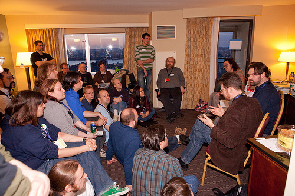
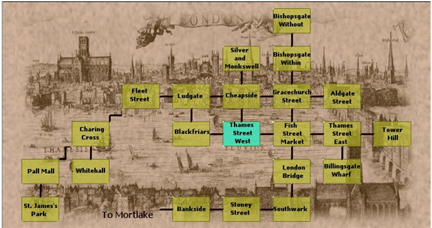
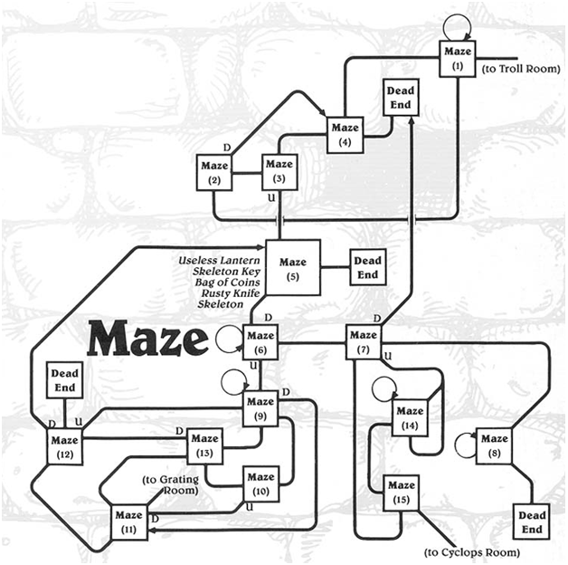
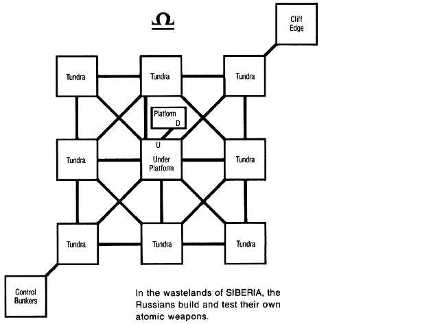
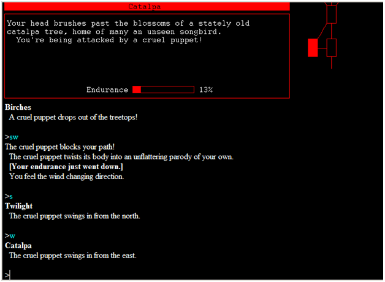
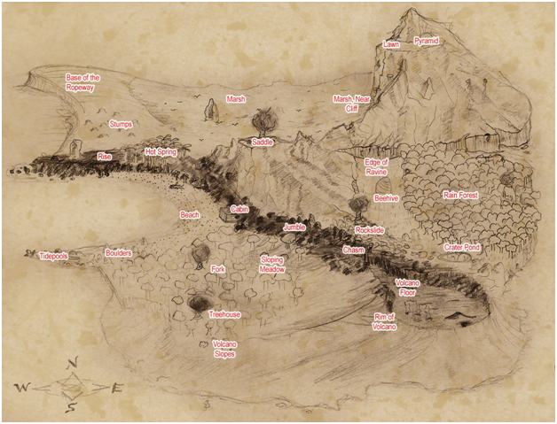

SPAG
The
Society for the Promotion of Adventure Games
ISSUE
#58
SPAG #58 is copyright (c) 2010 by Jimmy Maher.
Authors of reviews and articles retain the rights to their
contributions.
All email addresses are spamblocked -- replace the name of our magazine
with the traditional 'at' sign.
IN
THIS ISSUE
Editorial
IF News
IF at PAX East 2010:
How Suite it was by Harry Kaplan
The Storytelling in IF Panel
by Duncan Bowsman
Two Panels at the IF Suite by
Harry Kaplan
A PAX Story by Robb Sherwin
Revisiting
the Phoenix Games:
Phoenix Rises Again by Adam
Atkinson
Crobe
Review by Marius Müller
Lines and Rectangles: Navigating within a Textual
Virtual World by Jimmy Maher
The
Story of JACL by Stuart Allen
An IF Exhibition by Fabien Vidal
Jay is Games Casual IF Competition Reviews
Basic Train-ing
The Blueprint
Containment
Couch of Doom
Critical Breach
The Cube
Drama Queen 7: Mother Knows Best
Dual Transform
Escape in the Dark
Escape into Fiction
Fragile Shells
Golden Shadow
Heavenly
Hoosegow
I Expect You to Die
Into the Open Sky
Ka
Lurid Dreams
The Manor at Whitby
Monday, 16:30
An Open Field
Paint
Party Foul
Roofed
Survive
Terminal
The Usher
Virtuality
Zegrothenus
A Zeroeth Dimension
A Survey of the TWIFComp Entries by Valentine Kopteltsev
Other
Game Reviews: Raising the Flag on Mount Yo Momma
Last Lousy Points:
Working with Beta Testers: Some
Guidelines for Authors by Al
Some Comments on Love is as Powerful as Death, Jealousy is
as Cruel as the Grave by Michael Whittington
EDITORIAL
So, Roger Ebert, hardly most
gamers' favorite film credit to begin with, recently inflamed the
passions of gamers everywhere yet again by reiterating and reemphasizing
a position he first took many years ago:
that
games can never be art.
Since SPAG is of course devoted to a form of computer gaming, albeit a
definitively non-mainstream one, you are probably expecting me to
denounce Ebert at this point, to follow the lead of thousands of
bloggers and commenters in pointing out how very wrong he is. The thing
is, I'm not really
sure how
wrong he is, even as I also believe -- and I say this entirely with
hyperbole -- that interactive narrative is the most exciting
artform I could imagine being
involved with right now. Contradictory, no? Well, maybe, but maybe not.
What I think is the most interesting paragraph in Ebert's essay begins
thus: "One obvious difference between art and games is that you can win
a game. It has rules, points, objectives, and an outcome." If we accept
these attributes as necessary for us to call a game a game, Ebert's
position becomes perfectly reasonable, if by no means completely
ironclad. While I might profess to find a certain artistry in the
elegantly simple yet endlessly challenging rules of
Zug um Zug, the board game my wife
and I have been playing obsessively almost every evening for the last
few weeks,
I'm not sure I'd call either the ruleset or any of our individual game
sessions art. Ebert makes exactly this point later in his essay, when
he falls back on that old standard of non-gamers trying to understand
games, chess, as an illustration.
But let's read the rest of the paragraph we just began, because here
things start to get really interesting: "[Game zealot] Santiago might
cite a
immersive game without points or rules, but I
would say then it ceases to be a game and becomes a representation of a
story, a novel, a play, dance, a film. Those are things you cannot win;
you can only experience them." Well, much or most modern IF does not
have "points or rules," unless by rules you refer to the rules of
simulation from which the storyworld is constructed -- and in that case
virtually every activity we engage in has "rules." Nor does it have a
winner in the sense that chess or
Zug
um Zug does.
Ergo, according to Ebert IF is not a form of game at all, but rather a
"representation of a story, a novel, a play, a dance, a film." Absurd,
right? Or is it?
Of course, Ebert is still being rather condescending in referring to
these artforms which we can no longer call games as mere
"representations" of other, better established narrative forms rather
than a distinct form of narrative in their own right. But if we can
overlook that, he's stumbled upon a pretty interesting idea here, one
I've (he humbly notes) have been kicking around for a number of years now.
If you're reading these words, you likely know the conventional story
about how videogames, IF included, came to be. The Cliff's Notes
version states that people had always played games throughout history,
but these games had been somewhat limited in their allowable
complexity and ambitions by the fact that they had to be administered
by fallible humans. When the computer came around, it made the ideal
device to allow us to play complex games easily without fiddling with
all those nittygritty rules. Because humans love to contextualize
things in terms of narrative, many designers inserted stories into
their rulesets to provide a motivational framework for play and to add
an element of emotional investment to what would otherwise be a mere
series of challenges of skill and/or reflexes.
But let's try a different history on for size. Let's begin not with
humanity's love for games, but rather its love for stories. Certainly
we can see a trend in certain kinds of art toward the telling of
stories in ever deeper and more immersive ways. A few hundred years ago
the novel came along, introducing the interior monologue; as time went
on, novels were written in ever more immediate ways, with more quoted
dialog and more realistic and frank depictions of their characters and
their characters' actions. Some novelists tried to go further,
introducing the stream of consciousness as a literary device to
literally (hah!) put the reader inside the heads of a character without the
premeditated intervention of even a first person narrator. Others tried
to involve their readers more in the story by presenting them with a
puzzle they could attempt to solve before the novel's protagonist;
these came to be called mystery novels. Around the same time, film
appeared, a whole new, arguably still more immersive (or at least
effortless) way to connect with a storyworld. Where to go from there?
What if we could simulate a storyworld and let our "reader" actually
enact a role there, let her literally become a part of the story? Well,
that's exactly what we began to do in the second half of the last
century, to some extent first in ever more simulation-oriented board
games, then in tabletop role-playing games, and finally (and
definitively) with the arrival of the personal computer and works like
Adventure and
Ultima.
Works like
Adventure and
Ultima,
for in this history narrative-driven "videogames" are not games at all,
but rather the latest manifestation of this trend of telling stories in
ever more immersive ways. Of course, this history may very well be as
simplified and ultimately unsatisfactory as the traditional one, but it
does highlight something that I believe has caused a lot of confusion
when discussing videogames: the very term "game" has become
hopelessly overloaded in our culture, made to apply to too many
disparate things. Certainly, IF is not really a "game" in the way that
Ebert thinks of a game in the dim light of his limited experience. In
fact, I think that IF has more in common with the literary than the
ludic tradition. I therefore thought about introducing in this little
editorial some lengthy, unfamiliar word to replace the term "game" with
in this context (ideally of obscure Latin or, even better, Greek
extraction so as to score the maximum Pretension Points), but I decided
I am unlikely to change people's habit of referring to works of IF and
so many other sorts of interactive narrative as games -- and indeed, I
am incapable of breaking even myself of the habit, as I've learned
again several times over when I've tried to do just that.
Of course, Ebert is no epistemological genius for having stumbled
across this confusion. Indeed, it's a point of confusion he remains
blissfully unaware of, since he doesn't know enough about
narrative-driven "games" (told you I couldn't help myself) to
understand how they work or, I think, entirely understand that they
exist at all. And much of the essay is vastly less interesting than the
bits I've just highlighted, as when Ebert claims
that games cannot be art because no games have been created that are on
the level of great art produced in other mediums, a logical fallacy that would have horrified Aristotle. I
agree wholeheartedly that no work of interactive narrative can hold a
candle to Proust, or even a film both Ebert and I love like
Before Sunrise for
that matter, but I think it has more to do with the adolescent
stage of interactive narrative and, more regrettably, many who
experiment with it than it does with intrinsic limitations of the form
itself. Interactive narrative is not even my personal
favorite artform as a consumer; print literature, film, and music have
all given me
more rewards and enjoyment over the years. It
is, though, the most exciting,
because it's young,
still evolving, and so full of imagined possibilities that may or may
not be realized -- rapidly, or at all.
But I still like old Roger Ebert a lot, and have nothing but respect
for the way he has handled his health problems and just kept on
working, and for the obvious and overwhelming passion he has for the
great art of film. We all have our blind spots, after all. I'll
continue to read Ebert's movie reviews, but I'll continue to come to
people like those who contribute to SPAG and the other
institutions of IF to learn where
that
artform
is going next. Speaking of which.. have you noticed how bursting this issue is? Pretty exciting, huh? So, on with the show!
Back to Table of Contents
IF
NEWS
The Gothic in Contemporary
Interactive Fictions
One Van Leavenworth was recently awarded his PhD by Umeå University in
Sweden. The subject of his dissertation was, interestingly, IF, and it
features deep readings of several works of modern IF. You can download
the PDF and read it (yes, it's in English) at the link that follows.
http://urn.kb.se/resolve?urn=urn:nbn:se:umu:diva-30353
Post-Comp Comp Results
As mentioned last issue, Sarah Morayati recently hosted a contest to
give authors who entered last year's Comp an opportunity to revise and
submit their entries for another round of judging. Eric Eve's
Snowquest won first place as most
improved, and
The Believable
Adventures of an Invisible Man
by Hannes Schueller took second. Congratulations and props go to all
who entered for taking the time to polish their entries one last time.
Schueller's game in particular went from a deeply flawed, confused
entry to an enjoyable, playable little satirical puzzler. Check it out
if you haven't already.
http://selfasfractal.blogspot.com/search/label/interactive
fiction
IntroComp 2010
Jacqueline Lott will be hosting another IntroComp this year. Introcomp
gives authors a place to submit introductions to proposed larger works
to get some early feedback and decide if the idea is worth pursuing to
its conclusion. You need to send your intent to enter to Jacqueline by
May 31, and your "finished" introduction by June 30.
http://groups.google.com/group/rec.arts.int-fiction/browse_thread/thread/b3256a9681aed640#
@party IF Competition
@party, a demoparty that will take place in Harvard, Massachusetts, on
June 18 through 20, 2010, will be hosting an IF competition for very
short (circa 30 minutes) games as part of the festivities. You don't
have to attend the event live to enter a game. Don't know what a
demoparty is? Well, go to their website and be enlightened.
http://www.atparty-demoscene.net/
Works
of Fiction
JB, author of such French IF games as the multimedia epic
Ekphrasis, has just released his
first work of IF in English.
http://ginko968.free.fr/jeux/wof.htm
Grand Prix 2010
This contest for works of IF in German was revived this year after a
four-year hiatus. Have a look if you can read German for seven very
interesting entries. Congratulations to Michael Baltes for winning with
his game
Ares. Perhaps this
heralds a welcome uptick in activity in the German IF community.
http://textfire.de/comp/index.htm
Local IF Groups
A small group of IF enthusiasts who call themselves the People's
Republic of Interactive Fiction have been meeting -- previously
informally, but now in a somewhat more organized way -- in the Boston
area. Prompted by their example and perhaps by the excitement of face
to face contact at PAX East, there are now also groups formed or in
some stage of formation in Chicago, San Francisco, and Seattle. Check
out their entries on the IF Wiki to learn more about them -- and if
these groups aren't accessible to you, you could always ask around to
see if there is sufficient interest to form your own in your hometown.
Anyone for Aalborg, Denmark? Well, maybe that's a long shot...
http://www.ifwiki.org/index.php/People's_Republic_of_Interactive_Fiction
Play Adventure
over the Phone
Call 610-332-7236 from the US, or sixtendearben from anywhere over
Skype, to play
Adventure via
voice recognition and sound, courtesy of Richard Rutenberg. I'm not
certain how practical it is to seriously play this way, but this is
certainly a very neat little hack to try out.
http://www.610dearben.com/
Back to Table of
Contents
IF at
PAX East
Many members of the IF
community came together last March at Boston's Penny Arcade Expo East
videogaming convention. The gathering marked the most significant
gathering of IF authors and technicians ever, with several generations
present, from Don Woods, coauthor of the original
Adventure, to a good selection of
the Infocom implementors, to longtime post-commercial IF auteurs, to
new rising stars. It also hosted a special preview cut of Jason Scott's
long in the works documentary film on IF,
Get Lamp,
the full edition of which should come out at last sometime this year.
I'm very excited to commemorate the event with several articles
describing what it was like from people who were there. Special thanks
also to Ben Collins-Sussman, for providing the wonderful pictures that
accompany these articles.
How Suite It Was by Harry
Kaplan (harryandmary SP@G hmkaplan.com)
Assembled by Harry
Kaplan from contributions by Sam Kabo
Ashwell, Jon Blask, Stephen Granade, Juhana Leinonen, Jacqueline A.
Lott, Iain
Merrick, Sarah Morayati, Paul O’Brian, Andrew Plotkin, Aaron Reed, and
Jack
Welch
Interactive Fiction held its head up high and
proudly late
March at PAX East 2010, a major (as in over 60,000 attendees) gaming
expo held
over a weekend in Boston, MA. According
to my best-efforts research, what quickly became known as the IF Summit
was our
first presence at a major gathering of gamers since commercial IF gave
way to
graphic adventures in the early 1990s. I
choose the word “our” in the preceding sentence quite
deliberately.
The blogs, posts, and emails passed on to me
by this article’s many co-authors drive home nothing so clearly and
consistently as the intensity of the connections IF attendees made with
each
other – hard as it may be to believe – in the flesh.
Andrew Plotkin, for instance, recalls:
… buckets of people
talking about IF, in
clusters and groups. Hoo boy. Newcomers, oldtimers, mudders, newsgroup
people
who aren't mudders, people from other IF forums -- just lots of talk.
I've had more in-person talk about IF and interactivity
than I usually do in two months -- and that's two months including
Boston IF
meetings.
And where were these buckets of people
talking?
Andrew had reserved Room 2305 in the Back Bay
Hilton, a short hop across the street from PAX East itself, dubbing
that space
“The People’s Republic of Interactive Fiction Hospitality Suite” or IF
Suite
for short. (And let all members of the
People’s Republic know that without Andrew’s commitment and tireless
co-ordination
during the month prior to PAX East, the IF Suite would have been
nothing but a
gee-wouldn’t-it-have-been-great-if.) Mike
Hilborn, Jason McIntosh, Doug Orleans, and Kevin Jackson-Mead assisted
Andrew
in room setup. Jack Welch shared his
first impressions in a familiar format:
Walking in, there's a
closet on the
right (closed) and the door to (presumably) a bathroom to the left
(open a
crack). The room itself was roughly square, with a large bed against
one wall.
On the other side of the room was all of the hotel furniture. My survey
at this
point was less than scientific because I wanted to take in everything
at once.
Out the windows, I could see the Charles River, and on the far side,
the MIT
dome. On a far table, I could see a bunch of books, and recognized
Second
Person and Twisty Little Passages from their cover designs. In front
of the flat screen TV, an aluminum bowl with M&Ms (sans peanuts),
and
behind them, a larger bowl with potato chips. Nearer to the front door,
some
kind of fixed-in-place supporter with all sorts of goodies to look at,
including some vaguely d6-like purple cubes.
That “fixed-in-place supporter” also had useful
giveaways
directed at IF beginners we hoped would find us, including a flyer of
planned events;
an attractive postcard-size IF cheatsheet, created by the collaborative
design
team of Andrew, Lea Albaugh, and Rob Wheeler; and a starter CD full of
playable
IF supplied by Robb Sherwin. Jason
Scott, the indefatigable GET LAMP!
filmmaker, had also been kind enough to
supply several computers for IF play.
Jack wrote his room description early Friday,
prior to the
firing of the PAX East starting gun, and it may not sound like
much.
But just add people, and, as Paul O’Brian
wrote:
At any given moment,
there were usually two or three conversations
going -- newbies connecting with veterans, different subsections of the
community interconnecting, people getting acquainted who had never
really met
before. People talked about IF, and also about their lives, what was
happening
at the conference, and what was for dinner that night.
… holy cow, this room
was packed the entire
weekend! There was
something really special about this locus of passion and force about
IF. I
loved talking to people who were new to the scene. I loved talking to
people
who had become community celebrities in the time I've been out of the
loop. I
loved talking to people I've known for years from the other side of a
screen. I
loved being in that room.
This cattle –car snapshot wouldn’t be complete
without Sarah
Morayati’s accurate observation:
There were a lot more
women than I was expecting,
both at the main convention and in the suite! This makes me happy.
Perhaps now
the media can stop treating us as some kind of niche demographic
needing to be
pandered to with cutesy extrusions of pink.
And Juhana Leinonen’s pat on the back:
While
it
was a pleasure in itself to meet people with whom you could actually
talk about
IF and have a meaningful conversation, I want to make it known that the
IF
crowd is the nicest and most amicable people I have ever met. Usually
in
any group there’s at least one douche in a dozen, but I guess they all
stayed home
this time.
Just who were all these folks on a weekend-long IF
group
high? The attendees, numbering somewhere
between forty and fifty, are individually named on the IFWiki’s PAX
East 2010
page, but I’ll let Iain Merrick size up the crowd:
We got a really
energetic mix of fans, hobbyists, academics,
historians, central figures from the glory days of commercial IF in the
80s,
and even Don Woods who co-created the entire medium. Many old friends I
hadn't
seen in years, many people I'd heard of but never met, many people I'd
never
heard of but hope to meet again. Definitely the most interesting bunch
of
people I've ever seen gathered in a single room.
As well as Don Woods, who seemed to find the IF
Suite a
congenial hangout and even attended the IF outreach panel held there,
Steve
Meretzky dropped by on Friday night following the formal PAX East GET
LAMP!
panel discussion. Academia was
represented by MIT’s Nick Montfort. Nick
had lent the IF Suite a selection of academic literature for display,
and also
apparently ran a bit of an after-hours salon at his apartment. On
Sunday, as PAX East proper was breaking
up, Jacqueline Lott…
was contacted by Mr.
Montfort to invite the whole crowd back to
Cambridge for drinks and cheeses and stuff. I passed along that
message, and
when the appointed time came we all headed off to Montfort's.
The get together was
good. A bit less formal (if that were possible)
than what had been happening in the suite, more stories swapped, more
impressions of the historic weekend that was now drawing to a close.
Eventually
I seized upon the opportunity to start up a game of Werewolf... though
I'd been playing the game for years on ifMUD,
I'd never played one in meatspace before. Good times, even if I'm a
crappy
moderator and Duncan Bowsman is always a wolf.
The formal (or, in the case of the two panels held
in the IF
Suite itself, formal-informal) PAX East IF events are covered elsewhere
in this
issue of SPAG. However, no history of
the weekend would be complete without a nod to the Speed-IF competition
organized by David Cornelson and running in parallel with everything
else that
was popping on Saturday. If you’ve ever
hankered to write an IF that married the Irish Potato Famine to
spellcasting,
this was positively the Speed-IF for you.
Again, the reliably observant Jack Welch:
Sometime after lunch
and caffeine,
the Speed-IF started, with Dave Cornelson rustling up participants and
everyone
in the room calling out themes to incorporate into the games.
After
getting their assignments, writers broke
off singly or in small groups. Some
stayed in 2305, but there was still a lot of ongoing discussion there,
so most
went out into the hall, into the overflow room, or otherwise paced the
halls of
the hotel trying to find inspiration.
Actually, at this
point, Ben [Collins-Sussman]
and I went down to the coffee bar in the lobby and pitched ideas back
and forth
for an hour or so (pouring ourselves a hot steaming cup of daily hotel
wifi
access in the process). When we
returned, we found a comfy place in the hallway near an electrical
outlet and
started coding. While I was working on
the mechanical framework of the story and adding some of the objects in
from
our brainstorm session, Ben was setting up a mercurial repository for
the
project.
We had parked
ourselves at a
strategic location (although, not out of strategic ambitions -- we just
wanted
to see what was going on). Down the hall
from us, spaced about evenly with electrical outlets, were other
writers: Jacqueline Lott was there for a while, I think
Sarah Morayati was further down, and I recall Jenni Polodna being there
for a
while. For the most part, we all pounded on our keyboards, with
occasional
conversation.
After submission, the games were played by small
groups, a
novelty which Jack said “had some of the flavor of the more traditional
table
top RPG, where people sit around a table and call out their
actions.”
The weekend following PAX East, these games
were the focus of Jacqueline Lott’s weekly Club Floyd. Should you
have missed that electronic
get-together, it’s not too late – you can find links to all the games,
currently hosted on David Cornelson’s Textfyre site, on the IFWiki PAX
East
2010 page.
My own memory of the pre-PAX planning done via
both the
IFWiki and a group email barrage is that a tremendous amount of thought
was
given to materials for and handling of eager IF beginners within the
Suite. However, my memory of the event
itself is that we did not see a huge number of such individuals
there.
Polling others, I found several different
takes. Closest to my own perception was
Sam Kabo Ashwell:
For what it's worth, I
didn't
really expect the IF Suite to be very much about outreach in itself; I
thought
it was more about better connections and more energy within the
existing (and
heavily fragmented) IF community, a role it fulfilled well beyond
expectations.
Any outreach that _did_ happen is awesome, but I think hoping for a
great big
outreach blitz is trying to run before we can walk, to horribly mangle
my
metaphors.
Aaron Reed was somewhat more upbeat on this
topic:
There were at least
two people I knew of in
the IF suite who were new to the whole thing and came up because they
heard
about it at the event. We also attracted Jared (the "Action Castle!"
guy) who knew classic IF but not modern IF, and I think there were a
few other
people in that category. Certainly the majority of people were the IF
in-crowd,
but I don't think the outreach attempt was entirely unsuccessful.
Jack Welch, to whom I will clearly owe the lion’s
share of
the vast royalties I’m being paid for this article, made an extremely
thoughtful response:
Regarding your
specific questions
about "recruitment", I don't think we lured a large number up to the
room, but I know that some materials were distributed. I think we
made major strides, though, in
"soft sell". Just by virtue of
having had the movie event and panels within PAX, we exposed thousands
to the
genre. I n many cases, these people would already have known something
about
IF, but we supplied a reminder.
Most of the people who
have come to IF
have gotten interested for some reason and then gradually explored
their way
into the community. I think this will be
true in the future as well. We've
planted some seeds, and given some hints of where to look for more
information.
People who are inclined to investigate
will find their way in, and it will likely be a gradual process as they
acclimatize to the existing ecosystem.
So much for the beginners; what about the
veterans?
There isn’t even room to quote from everyone
who maintained that, as IF authors, they’d been pretty seriously
galvanized. Jon Blask:
For
us
older people, many of whom are not as excited as we were when we found
IF on
the internet 10+ years ago, it was a great reminder that there are
still new
frontiers to be discovered in IF and that more progress and innovation
are
still ahead of us. I know of at least
three IF authors who haven’t written anything in years that have either
already
started coding something new or intend to, and I’m sure there are
several more.
Stephen Granade:
My main takeaway is
that I need in-person IF
events on a more regular basis. I’ve come back with a head stuffed full
of
ideas and new directions. I got a chance to be loud and passionate
about IF in
a way that I haven’t done in years.
I've been letting
certain things in my life de
facto define who I am and what I do. Being at PAX helped me also think
about what I enjoy doing and what I want as my legacy. IF falls in both
of
those categories.
The most – all right, I’ll say it – touching
reminiscences
came from Paul O’Brian and Aaron Reed. :
Paul:
Back when I was active
in
the interactive fiction community, and also going to conferences for
work, I
used to daydream about an IF conference where we'd have bunches of key
people
from the past and present, panels about various aspects of the form,
face time
with all these people I just knew as words on a screen, etc.
Today said: "I'll see your dream, and
raise you an IF movie!"
Aaron:
It was constantly
weird and wonderful to
discover and remember who the people in the suite were, and all of the
ways
they'd touched my life. I mean, here's
vaporware, who's answered probably hundreds of technical questions
about Inform
on the newsgroup, half of them from me; and oh wow, that shy girl in
the corner
is Sarah Morayati who wrote Broken Legs?
And suddenly I remember that, crap,
Andrew Plotkin didn't just make Glulx, he wrote Shade, and Hunter in
Darkness, and A Change in the Weather, and Spider
and Web, and like half my favorite IF games.
And even after
getting home I kept having
new moments of mental connections: if I'd remembered Jacqueline Lott
wrote The Fire Tower I would have thanked her
for it, and oh yeah, Jenni Polodna wrote one of my favorite reviews of
Blue Lacuna, filled with laudations and
smackdowns that both felt deserved. It's a wonderful feeling to know
everyone
in a room full of strangers.
And Jacqueline Lott gets the last word:
I’m hoping we make
this a somewhat
regular habit.
Back to Table of
Contents
The Storytelling in IF Panel by
Duncan Bowsman (bowsmand SP@G gmail.com)

Andrew “Zarf” Plotkin, Robb Sherwin, Emily Short,
and Aaron Reed met
in Boston the first day of PAX East to discuss “Storytelling in
Interactive
Fiction” in a panel moderated by J. Robinson Wheeler. None of
them had expected the event would be
so well-received that they would have to start turning people away (one
enforcer even tried to turn Zarf away!).
The successful panel took aim at several concepts including the
player/PC disconnect, NPCs, puzzles, competitions, and exploration in
interactive fiction.
Emily Short brought up the topic of the player/PC
disconnect in her
opening manifesto, citing its possibilities as a potent narrative
tool.
Compelling IF examples included Violet and Rameses.
Robb Sherwin talked at length about one
narrative strategy in using this disconnect as a tool: hooking the
player in
with a PC in a sympathetic situation, but then gradually revealing the
repugnance of the PC’s personality to the player.
Mr. Wheeler then steered the discussion toward the
topic of NPCs. Emily had given a talk earlier at GDC about
how converation trees lend a very static presentation of PC/NPC
relationships
without the sort of give and take of real conversations. She
argued that a move away from conversation
trees as a way of creating a more give-and-take model of conversation
with more
expressive NPCs could result in deeper, more dynamic emotional
involvements
with NPCs on the part of the player. The
panel cited her game Alabaster as a good example of
an experiment in
that field, in which gameplay is largely controlled through
conversation. Short noted that Alabaster
tracks more
variables than usual in conversation.
Zarf mentioned that IF currently tends to use NPCs
well as background
in the gameworld, but that for better interaction a game should model
NPC
reactions at a high narrative level.
Aaron Reed reinforced his opinion, through example of Blue Lacuna,
that a player’s narrative choices should be impactful not only on a
story’s
ending, but on all of its parts. Mr.
Sherwin provided an anecdote about an NPC in one of his own games who
had
engaging dialog, but failed to do much other than stand around during a
firefight scene. In his next game, he
says, he plans to fix that by making NPCs that aren’t the player’s
friend, so
there’s no way they’d help.
The moderator suggested puzzles as a method of
pacing narrative; it
turns out Mr. Plotkin had a lot to say about the issue. Namely,
Zarf discussed in-depth the way in
which the traditionally formalized notion of “puzzles” in IF has broken
down
with wider playing-- for example, examining an object to get its
description
and figure out how to use it could be considered a puzzle on the same
level as
a maze. Both have solutions that
motivated by the plot and advance the plot in some way at their
completion. Aaron Reed indicated that puzzles had changed
a lot since original adventure games, where solutions tended to be of
the “use
X on Y” variety. The IF community
strives to write less “reading the author’s mind” puzzles that make
designers
feel clever and stultify players-- play between the author and player
should
tend to be more cooperative rather than designers trying to defeat the
player. Emily Short cited Make It
Good as an effective example of a game in which the
“puzzles” were more
about the protagonist and a good story than about being puzzles for
puzzles’
sake.
The panel also talked about competitions in the
interactive fiction
community, spurred by J. Robinson Wheeler’s talk of Centipede and the IF
Arcade comp. Zarf gave a shout-out to
Jay is Games for running their recently quite successful comp, while
Aaron Reed
mused that IF is perhaps the polar opposite of an archetypal casual
game. The hardcore casual audience then came up as
a counter to that accusation, along with mention that Zarf was busy
getting IF
to work on the iPad. Plotkin then
wondered why commercial games didn’t involve more text; Mr. Reed
suggested
that, however short-sighted, voice-acting had supposedly destroyed the
need in
the view of major developers.
The panel entered its final subject before the
Q&A, exploration,
when Emily went into the subject of narrative variability and cultural
understanding in the gameworld as a product of choice in her game Floatpoint.
She mentioned the development of a quest log,
to which Robb Sherwin responded that if a modern player has to write
things on
paper, the game in question has failed.
Emily contended that commercial games may be better at creating, for
example, maps, but Aaron countered that non-violent exploration is
something IF does considerably better than other games. He
offered 1893
as an example, further
stating that his favorite parts of a recent commercial title, Half-Life 2,
were the parts in the beginning which also involved non-violent
exploration of
the game world. He would have played a
game that consisted only of that. Emily
cautioned that while letting the player do things at their own pace was
admirable, a designer must still let the player know how to make
advancements
that bear narrative significance.
Back
to Table of
Contents
Two Panels at the IF Suite --
by Harry Kaplan (harryandmary SP@G hmkaplan.com)
(or,
Who Needs a Three-Theater Convention Center?)
“IF Outreach” and “No Hints Please: Adaptive
Difficulty Strategies,” the two
panel discussions staged in the IF Suite during the PAX East weekend,
each played
to a full and receptive room. Clearly
the IF community could teach PAX East a thing or two about planning, as
no
attendees had to line up an hour prior to either, nor was anyone denied
entry
into the IF Suite for fear of fire code violations.

Saturday evening’s “IF Outreach” panel was
moderated by me and populated by John Bardinelli, Chris Dahlen, Jason
McIntosh,
and Andrew Plotkin. John frequently
reviews IF at the casual games portal Jay Is Games, the recent sponsor
of a
room-escape IF competition; Chris writes on many forms of popular
culture and
serves as Managing Editor for the gaming magazine Kill Screen; Jason has
authored IF and comments regularly on every visible form of game on his
blog
The Gameshelf; and, if you don’t know
who Andrew is, what are you doing reading
SPAG?
Outreach is such a large umbrella topic that any
number of
its elements could have served as the focus of their own panels.
The moderator imposed some order on the
proceedings by introducing four deliberately broad generalizations and
asking
for comment. Discussion, which included
relevant audience contributions, never flagged, but could fairly be
described
as all over the map. Those with
sufficient interest can view a video
of the two-hour give-and-take on The
Gameshelf, courtesy of Jason and his cinematographer Jake
Eakle.
In addition, anyone who wants to continue the
discussion is encouraged to consult the IF Outreach page in
the IFWiki and to
join its email distribution list.
Below are some of highlights of the evening:
Gamers as potential IF aficionados
Although “casual gamers” are unlikely to
spend more than half an hour with a game and are adamant about playing
in a web
browser environment, John felt they were a particularly good target
audience
for what he termed “small form IF.”
Precisely because they do not regard gaming as a primary hobby, they
are
not bonded to any particular game genre and so very open to unfamiliar
rulesets. Remembering what attracted him
to Infocom games in his youth, Chris felt that the exploration of
environment
and the ability to interact with the story world, two features central
to IF,
were a natural fit for RPGers and fans of alternate reality
games.
He believed that the popularity of the recent
RPG Dragon Age was due not to
its
system of strategy and tactics, but to the dramatic effect of the
players’
choices on the evolution of the story and its world.
Both Andrew and Jason took
umbrage at the
word “gamers.” Andrew felt that its use
“prejudiced the question” and preferred to frame the problem in terms
of
expanding the horizons of those who enjoy fictions in more familiar
presentations, be they books or games.
Jason felt that “gamers” automatically implied hardcore hobbyists and
preferred the phrase “game players,” wanting, like Andrew, to consider
a more
generalized target audience.
IF’s reputedly difficult learning curve
Jason pointed out that in the 1980s, typing
in text was the only way to communicate with a computer and therefore
did not
perplex any game player. Today, however,
new players of IF need it brought home that they are expected to
type.
For PAX East, Andrew and Lea Albaugh had
created a handy postcard-size IF-for-Beginners guide (now available at the
website of the People’s Republic of Interactive Fiction) listing on
one side virtually
all the commands necessary to kick off an IF.
Andrew and others also believe that the ability to play any IF in a web
browser will open up the form to those unwilling to deal with
installation and
use of separate interpreter software.
While the IF parser, with its
acknowledged
limitations, has often been scapegoated – John reported that the Jay Is
Games
crowd sometimes complains that “the parser is dumb” – no one seemed to
feel
that giving the parser a PhD education was the right way to
proceed.
In fact, Emily Short maintained that
incorporating true Natural Language Processing technology could have
very
negative effects on IF. A middle-way
approach suggested by David Cornelson was to use testing transcripts
for a
given game to identify common player inputs not recognized by the
parser, and
then to expand the parser’s vocabulary accordingly prior to release.
Taking IF commercial
This topic provoked real controversy, with a
number of post-PAX blogs indicating an active hostility to the notion
that
making money could possibly be more helpful to IF than harmful.
The moderator hereby takes blame for this
antagonism, having failed to frame the issue not as a money-making
gambit but
as a strategy to reach an audience of significant size for whom IF
might
otherwise remain invisible. Chris, very
familiar with commercial rollouts, suspected that selling IF as a form
per se,
either to individuals or to publishers, was probably not the way to
go. He felt that a better route would be via individual
games that would provide outstanding, unique experiences and expose
players to
one of IF’s strongest suits – the “voice” that gets inside the player’s
head
and stays there. Andrew agreed that some
people might never be enticed into IF simply because it was an unusual
form,
but, once having discovered it through a positive encounter, might then
feel
motivated to explore it.
IF outside of the
gaming setting
David Cornelson shared his lessons learned
considering the institutional hurdles IF would have to overcome to be
embraced
on a large scale by school systems. Nonetheless,
he still sees IF as a good and educationally valuable fit for young
people
because of its potential to teach logical thinking, whether that be
done in
school or on educationally-oriented websites.
Paul O’Brian suggested crafting small IF episodes around, say, American
history to accompany traditional textbooks.
And by making reading itself more participatory, IF might make the very
activity of reading more exciting.
On another note, Andrew mentioned
that he
had long had the idea of reaching out to science fiction sites by
posting very
short sci-fi IFs on a regular basis, perhaps every two weeks.
Jason pointed out that regular serialization
of material is done very successfully all over the Internet, and John
felt that
the regulars at Jay Is Games might really go for serialized IF,
especially
because of the community feel that can be created by “everybody
swimming
downstream together.”
Finally, Jacqueline Lott brought up
the tantalizing
possibility of IF on e-readers like the Kindle.
Granted, there are technical interactivity issues, but the devices do
have keyboards, and people buy them because they are enthusiastic about
reading…
[If you will forgive just one instance of editorial intrusion: Last
year my game
The King of Shreds and
Patches was featured on the biggest of the Lovecraft reading /
tabletop RPG gaming sites,
Yog-Sothoth.com. I
received more downloads and enthusiastic email feedback from that
exposure than I did after the game's initial in-community announcement
or after Emily Short kind writeup on the independent gaming review site
Play This Thing!. This suggests to
me that there indeed be considerable potential in "marketing" IF games
that work within an existing literary genre to readers with an interest
in that genre. --JM]
No
Hints Please!
Sunday afternoon’s panel, “No Hits Please:
Adaptive
Difficulty Strategies,” was moderated by Jim Monroe and included Aaron
Reed and
Dave Gilbert. Jim is a champion of
independent media with not only IF but also novels, graphic novels, and
films
to his credit; Aaron, currently pursuing an MFA in Digital Arts and New
Media
at UCSC, tackled the panel’s topic head-on in his 2009 novel-length IF Blue Lacuna; and Dave
morphed from a
hobbyist game designer into a full-time professional when he founded Wadjet Eye
Games, developing thee graphical adventure Emerald
City Confidential for a casual
games publisher in 2009.
In contrast to Saturday’s panel, this discussion
was highly
focused, built around a specific and well-defined design issue. Nonetheless, an unintended connection between
the two panels was noted, as setting an appropriate level of difficulty
and
introducing hints smoothly (even with near-invisibility) can crucially
affect a
new IF player’s enjoyment. The first
twenty (highly worthwhile) minutes of this panel can
be viewed on The
Gameshelf, the rest unfortunately lost to the discharge of the
video camera’s
battery. Debate will no doubt continue in
IF newsgroups and blogs, and by example within future IF
implementations.
Dave had encountered unexpected frustrations in
trying to
create a graphical adventure suitable for casual gamers.
Initial testing showed him that he had wildly
underestimated the degree to which his target audience had to be led
through
puzzle solutions, or, for that matter, needed their puzzle goals made
crystal-clear. Having come of age with
older
text and graphical adventurers, he hadn’t anticipated that gaming
conventions second-nature
to him would be baffling to his target audience. Also,
casual gaming’s norm of a free
first-hour demo – the try-it-before-you-buy-it approach – had created
implications not only for pacing but also for the degree to which the
game must
“welcome” the player.
As IF authors, Jim and Aaron agreed on the
importation of
sensing and easing confusion in new players right from the get-go, the
challenge being not to dumb down the game for veterans.
Aaron was pleased with Blue Lacuna’s ability to
extrapolate play style and level from the
details of player behavior (e.g., newbies tend to miss non-obvious
puzzles and
don’t think to type “inventory”), though he didn’t feel he’d solved the
problem
of how the game should pitch itself to different audiences. Jim was intrigued with the approach of
integrating
extra information into the game-world for unskilled players, without
drawing
attention to the enrichment. The
inside-out version of that same strategy would be to turn off default
notification features (“Here is your next quest! Start
by going to such-and-such location!)
for experienced players.
Everyone agreed that IF would be well-served if
hints did
not live out-of-world but were a seamless part of the game experience. As Jim put it, “Don’t think if players
get stuck but rather when players get stuck.”
Back to Table of Contents
A PAX Story by Robb Sherwin
(robb.sherwin SP@G gmail.com)
"There’s a certain weird glory
about devoting yourself to a project to the point of stupidity, losing
sight of the rest of your life. This plays into the mythos of the
solitary artist. But that’s not a sustainable approach, and it doesn’t
guarantee great art[.]" --
Emily
Short
In January of 2010 I realized PAX East was coming up. I had been
working on the same text game for almost four years. I felt I could
finish it and make some hard copies to sell at the show. Jason Scott
invited me to spend time with him at a vendor table. Releasing during a
con, that's some rock star stuff right there. It would take some extra
work and long nights, but I felt I could do it. I felt I could go into
crunch mode again. The PAX show was the end of March, after all. It was
only three months.
People sell their indie games for many different reasons, but speaking
only for myself, having physical media at the end of a text game
project is important. Creating IF is an activity crazed loners could
easily adopt. I've tried to incorporate a social aspect by involving my
friends to "act" as game characters, but that's just a few hours over
the lifetime of a project. Since the process is so solitary, I want
something tangible at the end. I like having a slipcase on the
bookcase. I enjoy the idea of a hard copy of an indie game.
And so you know where I am coming from, I don't know that I'd like my
job to be "making Interactive Fiction." I can't say that's my endgame.
I mean, it's never come up, so that's like saying that I don't know if
I'd accept the offer to pitch for the Blue Jays. But let's say it does
- we're not all moving to Rockville, South Dakota to make them. It
would involve working from home and I think I'd eventually become odd.
But there was one aspect I never considered before, and I got an
education at the tables - the skills it takes to write and program a
game have nothing to do with the skills it takes to promote and sell
that game. I guess I knew it intellectually, but it would be
demonstrated quite clearly before the weekend is over.
The vendor tables at PAX were on the second floor of the show. You had
to pass them to get to the cacophony of sound and flashing lights that
was the purely new-game halls of PAX East. It was easy to forget,
between all the IF stuff and talks, that there was an actual gaming
convention going on, and companies were showing off games like
Civilization 5 and that
GTA game where your car is a horse.
Jason wasn't just selling copies of the
BBS Documentary - also
available was Jason Shiga's interactive comic
Meanwhile, Nick Montfort's book
Twisty
Little Passages, and the book Nick wrote with Ian Bogost about the
Atari VCS called
Racing
the Beam. There was a printed copy of a lengthy palindrome, and
some hard copies of
Fallacy of Dawn that I made for the show.
I was seated next to Jason and MC Frontalot on Saturday and Sunday. I
was shocked as to just how much energy it takes to do what they, and
many other vendors do. They are "on" constantly. They are shaking
hands, signing autographs, hearing the same questions over and over
again, hearing totally NEW questions that require their tired synapses
to fire... all while trying to make some money. Personally, I felt much
more at ease talking up the other items for sale at the table than my
discs. My enthusiasm was genuine and I thought the stuff available made
for fascinating reads at reasonable prices. There's something that just
seems wrong about trying explain why a person ought to by my stuff,
especially when there's other things at the table that I've bought and
enjoyed. I understand that this feeling is missing from the great
majority of people who have sold things since capitalism was invented
on Adam Smith's ship once the limes ran low, but if selling directly to
the public is ever something you're romantically considering and you
don't possess it, you're going to
feel weird.
Jason, however, was ready to instantly converse at length about any of
them. His enthusiasm was infectious - at one point, when Nick was by
the table, I found myself unable to remember to tell him that the
section on
Pitfall! in
Racing the Beam was the best
analysis and breakdown of an old video game I've ever read, because it
was hard-coded in me to talk about certain sections of the book that
were totally spoiler-free, and I was too exhausted to deviate from the
mental script. Ten minutes after Nick left, it struck me that, Christ,
I'd been meaning to write him about Pitfall! for months now. What
happened?
People came up to the table in an almost continual flow. I remember
trying to make sure that I didn't blow it with each new interaction,
because you have a new opportunity to piss that person off or make them
feel small or lose track of them or do one of a dozen other things to
seem like a jerk. Eventually you're going to be in a situation where
you've been talking to one person for waaaaay too much time, and a very
patient and very interested party is behind you. It's a balancing act.
(I did think it was a bit easier for Frontalot, as he had people
properly queueing at all times, and therefore there was sort of an
imparted social knowledge that, hey, ten people are behind me. There
was always less of a line at our table, but I think as a result, there
was less perception that someone else wanted some facetime.
But yeah, I didn't make my deadline for my work-in-progress. I made
hard copies of a game I originally released nine years ago instead. I
failed to reach my goal, though I was in what felt like "crunch" for
three months, and ended up in an emergency room two days before the
show. I went virtually without sleep for a stretch of three days, I was
popping piracetam and constantly drinking cups of coffee with sugar,
Coffeemate AND the extra ingredient you get when you take your coffee
that way: shame.
The abuse came to fruition during the drive home, in a snowstorm in
Denver. I left work around six, and felt a jolt of electricity go
through me as I started my commute. It happened again an hour later.
The storm made the drive take forever, and I steered myself to an ER,
freaking out because I thought I was having a heart attack. My phone
gives me the exact address (Dying? There's an app for that!) and I find
the parking lot. I'm finally about to park... and someone, a released
patient or free-frolicking lunatic, has decided to cut across the snow
as slowly as possible. For the first time in my life I weigh the pros
and cons of running someone over. If not for the fact that Grand Theft
Auto 4 would be blamed, I don't.
I got an EKG. My heart is fine. They suggested some medicine for
something else. They had to draw blood twice over four hours to
determine that my heart was okay, and during the wait I remembered
what
I had once read from Paul Zimmerman, a senior writer for
Sports Illustrated. Dr. Z was once
offered $8,500 to write a book about the '77 Denver Broncos during
their week before the Super Bowl. The catch was that it had to be
written in eight days. He asked New York Times editor Dave Anderson if
it was humanly possible. "It's possible," Zimmerman was told, "but if
you do it, you'll wind up in the hospital."
You can give everything you have to Interactive Fiction for a lot less
money than almost nine grand in Seventies Dollars and it doesn't mean
you can sell them in person. The skillsets required are completely
different. At one point on Saturday, Jason had to get up from the
table, to get more copies of
Meanwhile.
(Jason Shiga kicked everyone's ass at the show.) I worked a register at
Electronic Boutique in college, psh, I can handle it. But when he got
up to go to his armored van, I was a tiny bit apprehensive of the
future queue. I was prepared to tell them that Jason would be back
shortly. Until then, well, I ran a BBS. I am elite! I can talk up some
copies of the BBS Doc.
Almost nobody visited the table.
One person did, and when I told him I wasn't Jason, he said he'd come
back later. If you attended PAX for text reasons, you'll remember that
Jason wears a top hat, suit and giant sideburns. He has occasionally
worn clothing that seems Steampunky. He is easy to spot from a
distance. He's met a lot of people at these sort of things and has his
fingers in a lot of pies - take him OUT of the equation, and at the
table is some square-headed nobody who runs an unpopular, unpleasant
purple gaming forum, makes some text games about shooting people and
little else.
Really, this doesn't just apply to text games. If you're going to sell
an indie game at a convention like this and you don't already have,
say, a Wikipedia entry or decent Internet-Q rating, I think there's
going to be a lot of dead time, dead space, dead air. Having a talent
for telling tales and being an engaging personality is what's clutch
here. I mean, given enough time, I could probably make a movie on an
esoteric subject at some point in my life. Like, not a gonzo
documentary on
Knight Orc, but something
people would conceivably pay to see. I could maybe make a movie in the
future, but I left PAX with absolutely no idea on how I would get
people who are basically my peers to stop by a table. Maybe I just
spontaneously came upon the reason for booth babes, but still. No,
otherwise, idea. Maybe it's just baraka. Maybe I would have had better
luck if I had worn a sleeping or minish cap and gone as Mr. Do! or
Link. I do know that you can work to exhaustion at your hobby until you
lose your girl, your job and maybe your good health, but that line
didn't start back up again until Jason returned.
I don't want to conclude by saying it's impossible. It's improbable for
me. With that in mind, I
actually signed some copies of
Fallacy
of Dawn for people who were kind enough to buy it in person, and
that still blows my mind. It will be a memory I always treasure. If you
get a chance to do that - do that. I gave a copy to Mike Dornbrook, who
visited the table and told me some stories about Infocom and the
Invisi-clues that I had never heard before. With PAX East such a huge
success, I'm looking forward to the events we arrange in the future and
with any luck I'll have my work-in-progress ready for the next one.
I've switched the way I work so that it's much more sensible, and I
don't mean I just substituted downers and quaaludes, but, like,
legitimately sensible. If video games can teach us anything, it's that
fruits, vegetables and proper sleep are important - why, just look at
the aforementioned Mr. Do!.
Back
to Table of
Contents
Revisiting the Phoenix Games
Shortly after
Adventure took the computing world
(such as it was at the time) by storm, a small group of professors and
students at a prestigious university decided to try to write their own
IF. The experiment was a success, and led to more games as well as the
founding of a company to sell them to early personal computer owners.
Perhaps you know where I'm going with this...
But guess what? The university in question this time is not MIT, and
the company in question is not Infocom. They are rather the University
of Cambridge in Great Britain and Topologika respectively. A team
consisting principally of Adam Atkinson, David Kinder, and Richard Bos
have recently done a wonderful service in making Z-Machine versions of
many of these games available, converted from their original source
code to be as authentic as possible to the originals that ran on
Cambridge's mainframe, Phoenix. Their work is particularly valuable
because many of the Phoenix games were never released as Topolika
titles, and thus were lost entirely after Phoenix was shut down in
1995. In the first article below, Adam Atkinson tells about the process
of recovering and porting the games as well as much more about their
history. In the second, Marius Müller tells about his experience in
trying one of them as an IF youngster with no memory of playing these
games in their old school heyday.
Phoenix Rises Again
by Adam Atkinson (AJFA1) (ghira SP@G mistral.co.uk)
Note
that as is traditional, Phoenix users will mostly be referred
to by their userid when this is known to me.
Cambridge University used to have a mainframe called Phoenix. ADVENT
(
Colossal Cave) and Dungeon (
Zork) came to it as they did to
many others.
In about 1978, Jon Thackray (JGT1) and David Seal (DJS6) invented an
adventure language and wrote a compiler and player program so
that they and others could write more text adventures. They and
Jonathan
Partington (JRP1) wrote
Acheton, which seems likely to
have been
the third mainframe text adventure ever. Because the compiler,
documentation
and player program were available to all users of the system,
other games were written and between 1978 and about 1989 a total
of 15 text advenures were written, plus a few other things like an
implementation of the
Mystic Wood boardgame.
Phoenix was around until
1995, so a fair number of people will have been exposed to these games
in their
original form, and since many had commercial releases by Acornsoft
for the BBC Micro and/or Toplogika for various platforms,
quite a lot of people at least in the UK have encountered some of them
on
microcomputers. Indeed,
Philospher's
Quest, a commercial release of the
Phoenix game
BrandX by Peter
Killworth (PDK1) and Jonathan Mestel (AJM8), was one of the first, and
thus for a while one of the most successful, games for
the
BBC Micro, I am told. (I wanted but could not afford one, and settled
for a Dragon 32.)
The language seems now to be referred to as TSAL for "Thackray/Seal
Adventure Language" but I don't recall it having a name at the time.
(From
which other languages did it need to be distinguished, after all?
Although
actually the language used for Topologika games was different and games
needed
to be re-written.)
The Phoenix games were available to anyone with an account on Phoenix,
which at least from the early 80s onwards was potentially anyone
at Cambridge University who wanted one. One Cambridge student who
played them enough to mention them in "The Craft of Adventure" and the
Inform
Designer's Manual is Graham Nelson (GAN10), creator of Inform,
Curses
and
Jigsaw.
(Note that Johnny-come-latelies like GAN10 and myself have 5
character userids.)
JRP1 wrote many games, and a few other people wrote 1-2 each. It seems
likely
that
quite a few were on the system by about 1980. Most of the games are
treasure
hunts in the style of
Colossal Cave
and
Zork. They contain some
features which
are
now out of fashion (e.g. mazes), and others which appear to offend
modern
sensibilities. You can die instantly. You can make the game unwinnable
and later discover that you need to return to an earlier save. There
is usually no "examine" command, and when it does exist it does nothing
useful. Some of the later games do have the Infocom
"verbose/terse" options, as the author(s) saw them and liked them. The
abbreviations
"i" for inventory and "l" for look are not recognised. There is no
"undo"
command. There are inventory limits. There is a two-word parser. It is
possible
that some
people will be interested in these games, or maybe just
Acheton, only for
historical reasons,
as the Phoenix games constitute their own separate tradition. Many of
them
are good games, though. If you try to play them, just accept that
puzzle
sequencing
problems, instant deaths, and maintaining a rich collection of saves
are just
the way it works.
Acheton's 162 objects and 403
rooms make it pretty large by any standards. The
other surviving games
are mostly a lot smaller than this.
Sangraal,
for example, has 99 objects and
169 rooms, and
Murdac has 46
objects and 74 rooms.
One game with an unusual style is JRP1's
Avon, which contains items,
situations
and text
from the works of Shakespeare. For example, the description of the
starting
location is:
You are standing on a flat plain. From here it seems that all the
world's a stage, and all the men and women merely players: they
have their exits and their entrances to the north, south, east and
west.
A knowledge of Shakespeare is not necessary, nor perhaps even useful,
in solving
this game.
As reported in
SPAG 18, GAN10 wrote a
program to convert the TSAL source code
of
text adventures from the Phoenix mainframe into Z-Code so that they
could be
played with any old Z-Code interpreter. This source code was obtained
from
the authors and from Charles Jardine (CJ10), who had a backup tape of
Phoenix,
and permission was obtained (by Gunther Schmidl, GAN10 and AJFA1) from
the
authors and from
Topologika to release z-code conversions and the Topologika versions
for free.
Gunther Schmidl used his own money to get the Topologika games so he
could release them.
We are gratful to all the authors and to Brian Kerslake of Topologika
for agreeing to this.
More details of this can be found in rec.games.int-fiction postings
from 1999
on
http://groups.google.com/
At the time, conversions of the games
Crobe,
Sangraal and
Fyleet were made
available
(as they had not had Topolgika releases), but the conversion of
Acheton (which
was the reason the whole exercise started) never quite happened.
In August 2009, Richard Bos wrote a walkthrough of the Topologika
version of
Acheton,
and this prompted David Kinder to work on improving GAN10's
script from 1999.
He wrote to me asking if I was me, and I said I was. Thus the Phoenix
Resurrection
Project Resurrection Project was born. David Kinder does the
programming
and all three of us play the games. I still have the yellowed line
printer
paper from the 80s with my maps and notes on it from when I played
(many of)
these
games first time round, though actually I mostly worked from memory
except when
getting through mazes, when I used the source code.
It transpired that there was a TSAL instruction implemented incorrectly
in the
original translator script, so that the version of
Acheton it produced in 1999
was unwinnable. Richard Bos playtested the version produced by David's
update
of the script and at
the end of February
Acheton
was released at
https://ifarchive.org/indexes/if-archiveXphoenixXgamesXzcode.html
Richard and I then started playtesting conversions of other Phoenix
games,
starting with
Crobe,
Sangraal and
Fyleet since they were known to
have been winnable in the earlier release.
Some of the changes made in the current version of the script seem
quite
minor but make the games much less frustrating to play. For example,
the TSAL specs say that the player program truncates all input words
to 5 characters, and the original translator script made no attempt
to do this. However, since the games were written taking this for
granted
there were various cases where an object was called, say, "emerald" in
the game
but was described to the player as "emeralds". Since "emeralds" was not
a word
known to the game, any attempt to refer to it failed. Similar problems
can be
found
with "pocket", "peridot" and so on. To make the games more faithful to
the
originals
and less annoying, David fixed this.
The original script also asked for missing first or second words but
failed to
use
them, and David fixed that too. (There was a comment in the source
about how
this
needed to be fixed.)
We already knew about the possibility of source code corruption whereby
variable names for substitution into strings had been replaced by
question marks
in some games' source. (More details in 1999 Usenet postings) There
were only a
few remaining cases of this, easily fixed.
Some messages in the games only look right the if games are being
played in a
fixed-width font.
David special-cased these somehow.
Since I already knew how to solve them I tested
Fyleet,
Sangraal,
Crobe,
Murdac
and
Hamil and they
were all fine. Likewise
Avon,
tested by David. It will be
understood
that at this point we thought the translator must be perfect. Then it
was
discovered that
both
BrandX and
Parc went into infinite loops, and
that BrandX didn't tell you
about items
in containers: we'd rather unwisely started by playing almost
exclusively games
written
by JRP1, and there were language features he never used but other
authors did.
These problems have been fixed.
The five-letter limit is a part of game play on two occasions that we
know about
so far: if the game needs you to type a particular word over five
letters long
to solve a puzzle, it makes you type it as two words. For example, if
you say
"longshoreman" instead of "longshanks" the game can't tell the
difference, so
the puzzle
requires you to say "long shanks" to solve the puzzle. For the sake of
faithfulness to the original
we have to leave this alone, but since the 5 letter problem is not a
feature
of modern IF environments, we've had to document this possibility while
being as
vague
as possible about which games have this sort of scenario. If you play
one of
these
games and it's rejecting your perfectly correct longish one-word answer
to a
problem,
try to split it in two.
One problem that's still in (at least) one of the games is a bit
confusing: The
language spec
seems to say that the original player program would not allow object
loops to be
formed
(e.g. put bag in sack, then put sack in bag) but it's not clear how it
did this.
We ran into this in
BrandX where
it's possible in our version as it stands
to wrap polythene in itself and ruin the game. The Topologika version
also
breaks
if you do this, so it's not clear that this is something that we "need"
to fix.
If anyone out there can confirm that the original player program really
did
prevent
object loops, we'd be interested to hear how it did it.
Game Recommendations
Of the games we have source code for, only
Parc,
Xeno and
Nidus have yet to be
checked by us. (If you really want to try them, see
http://www.ghira.mistral.co.uk/
and download
the "file for g4g9".) It's possible that they will contain exciting new
problems.
Of the ones released on ifarchive, my own recommendation would be that
if you
want to try
something from the Phoenix collection, play
Crobe or
Sangraal if you want a
relatively easy
Phoenix game, or
Acheton
if you want one of the oldest text adventures around
(originally
written in c. 1978 though the game as it exists now is an expanded
version
produced around 1980 or
1981). If you play
Acheton,
your "to do" list within the game will grow and grow for
quite a while.
Of the others,
Murdac
and
Hamil are small and not too hard,
Fyleet is a bit bigger and
somewhat hard,
and from what I've seen in the walkthrough Richard Bos wrote,
BrandX
appears to
be very hard indeed.
Spycatcher
has a non-fantasy setting (as does the as yet unreleased
Xeno).
Parc and
Nidus have, like most of the
others, fantasy settings. Note that
in Phoenix games with treasures, it's usual for these to be
identifiable by the fact that
their descriptions end in exclamation marks.
While playing the games during testing, I've enjoyed
Crobe,
Sangraal,
Fyleet and
Acheton the
most. Some I've not really played, such as
BrandX and
Spycatcher.
Fyleet has
some wonderfully awful puns,
which are what inspired me to use even worse ones in
Nidus (the source code for
which
has unfortunatly not been lost). I also like the wishing well in
Fyleet, where a
treasure
can be spent to gain an item or ability which will enable you to get
further in
the game than
you might otherwise be able to. Clearly, you can restore from saves and
use
different wishes
each time to explore the game further each time. Eventually you need to
decide
if a wish is needed
at all, and if so which one, of course. (This reminds me a little of
the
enhancer spell
in
Enchanter).
I like the begining area in
Crobe
a lot, but since there is a review of
Crobe
elsewhere
in this issue of SPAG, I will say no more about it.
My recollection, possibly incorrect, is that
Sangraal was written especially for
beginners.
When it was originally released on Phoenix, JRP1 gave advance notice of
this and
said that the
first ten people to finish the game would have their names added to a
blackboard
in the game
containing "the names of previous Adventurers of note". Obviously, I
slept
during the day,
got up just before the game's release, and played it until I finished
it. It's
almost certain
that other people finished it with less total playing time than I did.
But I'm
first
on the blackboard, and that's what matters, isn't it?
The games which I seem to recall had the reputation for greatest
difficulty on
Phoenix were
Quondam by Rod Underwood
(RU10), which has been lost, and
Xeno
by
AJM8
which exists but has not yet been released since we've not verified
that it can
be completed
yet. (I, at least, preferred to start with games I knew how to solve.)
There are three games we do not currently have the source code for.
These are
Hezarin (possibly
even larger than Acheton), Quondam and Xerb. It seems that there may be
some
chance
of recovering
Hezarin since
the author may still have it on paper. I would type
it in myself
if necessary.
Feel free to contact me if you need help with the games,
need to report bugs,
or have the source to a missing game.
Back to Table of
Contents
| Title: |
Crobe
|
| Author: |
Jonathan Partington
|
| Author
Email: |
J.R.Partington SP@G leeds.ac.uk
|
| Release
Date: |
1986
|
| System: |
TSAL; converted to Z-Machine
|
| Version: |
|
| Reviewer: |
Marius Müller
|
| Reviewer
Email: |
marius.ts.mueller SP@G gmail.com
|
When Adam Atkinson
first
mentioned the Phoenix restoration project, I looked at the games more
out of
curiosity than any really motivation to play with any determination.
When I joined the
IF scene, I
joined what is called the modern Interactive Fiction scene. I frowned
upon
games that weren't merciful on Zarf's scale. My only interest lay in
literary
works, or at least works far away enough from the dreaded "text
adventure" to
not rely on puzzles too much. I was never good at puzzles. I was never
interested in puzzles. And I found puzzles in IF to be fiendishly hard.
I expected playing
a Phoenix
game would be charming, but in the long run uninteresting and
fruitless, maybe
a bit like going back from, say playing Doom 3 to playing Doom, just a look at
where it all came from.
So, Crobe. It has
unimplemented NPCs as puzzles .The solution to most of them is to find
an
inventive way to kill or annoy them - with one notable exception, (see
below).
It has Instadeath rooms (though only a few without warning), a light
source
(infinite) and some word puzzles.
The most notably of
the
dreaded "old school features" of the game are the two mazes. Nowadays
we don't
take kindly to generic room descriptions, but here they're even part of
the
puzzle. But I was surprised. One maze is easily solved, once you can
make sense
of the odd behavior of a NPC (and very deadly if you try to use brute
force). It
has a very funny, clever and rewarding end message, too.
The second one, on
the other
hand, is a shining example for why mazes suck. It's very appropriately
called
bedlam. There are critters who kill you if you stay to long, pretty
random
connections between rooms and three nasty tasks to fulfill. I felt relief after making it through, and I
played it with the source at hand to brush through. (If anyone finds
out or
remembers how to map this, drop me a line. I'm really curious.)
The story of the
game is as
generic as you'd expect: you're this
hero, town in danger, troll boss called Karg, etc.
The first thing
that surprised
me was the consistency of the world. I expected modern and traditional
elements
mixed together, like I've seen in some versions of Adventure, but Crobe has a
straightforward fantasy world. (If you ignore the table of elements
puzzle. Or
maybe the table of elements is older than I thought?)
The second thing
was that I
didn't mind dying a lot as much as I thought.
It seldom felt like
a
penalty, in fact the death message often incorporated valuable hints,
so at
some points I actually killed myself to understand some mechanisms
better.
There are two kinds
of
puzzles here. One is "USE OBJECT" mostly to kill someone to get a
treasure, the
other relies heavily on environment. There is some pretty clever and
rewarding
stuff in the second category One sequence involves pirates and a
merchant ship,
a cave and fog and a lamp. And an apparition of Libra. You can sink
either one
of the ships - choose wisely. In another part, you need to
strategically place
some light sources to get rid of a
meddlesome wraith. Again, dying helps.
There is one aspect
of older
games I always liked: their sparseness. For instance, the star sign
room makes
good use of a description that has to be sparse. The wall are decorated
with
zodiacal symbols (Aquarius, Pisces, Aries, etc.)
In fact, all twelve
are
implemented. (Of course not as objects. Crobe doesn't bother with
those. You "use" them by saying them. Granted, most of them kill you,
but two or three are
pretty useful.)
In
many instances, you could, of course, take the easy way out and explain
it away
as the habit of the time. A bunch of students throwing together all the
puzzles
they can think of to present as food for thought to others, neber
bothering
about narrative in something that was, or is, a basically a game.
But there are some
moments
that just tickle something inside me – the lair of the Troll King is
guarded by
an invisible man, who continously trips you over. Once you expose him,
he runs
away and tumbles into an abyss (to his death, as you might have guessed
by
now.)
Now, why would a
man with the
power of invisibilty hang around outside the troll's lair? How was he
bound to
the Troll? Maybe some curse? Why didn't he give himself up once
exposed? Did he
trust he could escape (he tries crossing a tighrope)? Or is there
something
else, something darker? After all, he's human and works with trolls.
I don't know if the
author
even tried to imply any backstory here. I'm just trying to say that I
found
these small hints more intriguing then some long explanations in other
games.
In
conclusion: Do I recommend
Crobe? Yes and no. It was an interesting playing experience, but Adam
Atkinson
gave me lots and lots of small nudges, read spoilers. Some parts are
desk-biting unfair, frustrating or just dull. But it has
some noteworthy moments. Even one or two
awesome ones.
The humor is
in-style. Some
puzzles are quite clever. Apart from Bedlam, it's never actively unfair
or
mean.
So grab a
walkthrough (I've
heard there's one in the works by a handsome German dude) and give it a
whirl.
It might be refreshing to cave crawl for a while instead of spending
your time
dream travelling through vistas of surrealistic dreamscapes, and
getting a
nifty treasure for every solved puzzle might be
a refreshing change from being rewarded by a textdump about past
guilt.
Back to Table of
Contents
Lines and Rectangles: Navigating within a Textual Virtual World
by Jimmy Maher (maher SP@G filfre.net)
[Last
year a couple of academics who shall remain nameless planned to
start a journal dealing with the history of digital entertainment. This
sounded (and still sounds) like a pretty great idea. They
asked me to contribute a piece about the representation of space in IF.
So, I spent a few weeks putting that together, and sent it to them.
Unfortunately, it appears that their journal never quite got off the
ground. They broke this bad news to me in a very classy manner, by
simply not responding to my emails... but life is too short for
bitterness. Um, isn't it?
So, I've decided to give this orphan a home here in this issue of SPAG.
Some of this might strike most of you as fairly obvious, but I hope
there may also be some sections that are worthy of thought as we
consider how the simulational structure of our storyworlds affects what
kind of storytelling we gravitate toward doing within the IF form. --JM]
The
genre of textual interactive fiction (IF) represents one of the older
continually viable forms of computerized entertainment, with roots
stretching
back well into the 1970’s. While IF has undoubtedly evolved enormously
in both
its literary and its simulational aspirations since the original Adventure (1976-77) by Will Crowther and
Don Woods, a surprising number of its modern conventions have changed
little
since they were introduced in that formative work. Among these is IF’s
representation
of space within its storyworld. Indeed, the trademark hand-drawn IF map
consisting of rectangles representing “rooms” and lines representing
the links
between them remains one of the most common signifiers of the form,
almost as
ubiquitous as the blinking cursor standing next to a “>” prompt. A
phrase
lifted from Adventure’s maze section
– “a maze of twisty little passages, all alike” – has likewise been
used time
and time again in reference to IF, even furnishing the title of Nick
Montfort’s
Twisty Little Passages (2003), to
date the only academic study of the form published as a book. Montfort
cleverly
interpolates the phrase’s original meaning as a simple description of a
single
storyworld’s geography with something more intrinsic to the player’s
experience
of all IF:
From
the
perspective of the interactor, a work of interactive fiction can itself
be seen
as a maze of twisty little textual passages – some alike, some
different; some
produced by the computer, some typed by the interactor – that is to be
traversed. But of course it is also a maze of simulated passages
through an IF
world; this is what distinguishes works in this form from hypertext
fiction,
chatterbots, and random poetry generators.[1]
Montfort’s
insight into IF as a work of
“twisty little textual passages” is a very valuable one that is well
worth the
longer consideration Montfort and others have given it. This essay,
however, is
about those “twisty little passages” that traditionally and
contemporarily are
used to form the storyworld geography of IF. I will consider the
reasons that
IF geography took the form it did in Adventure
and other early works, and look at how the attitudes of IF authors and
players
toward their games’ geographies have changed as the form has evolved
from a
strictly ludic approach to one that sometimes comes with genuine
literary
aspirations, and as notions of what constitutes a fair design have
changed. I
will ask how the IF model of geography has affected the types of
gameplay and
storytelling that generally can and cannot be implemented successfully
as IF.
Finally, I will examine some recent expansions upon and alternatives to
the
traditional IF geographical model. For any of this to have meaning,
though, we
must understand the traditional model of IF geography that still
affects all contemporary
designs, even those that are reacting against it. We can usefully
divide this
model into two parts: the “rooms” that contain the player and the
method the
player uses for navigating from room to room.
A
World of Lines and Rectangles
IF
relies heavily upon a containment model for its storyworld simulation.
The
storyworld is made up of “rooms” representing individual locations;
these rooms
in turn can contain actors in the story (including the player’s own
avatar) as
well as various portable and non-portable objects for these actors to
interact
with: trees, chairs, books, etc. Actors can “contain” some of these
objects in
the sense that they can pick them up, carry them around, or wear them,
and some
objects can even contain other objects: a jewelry box, for example,
might
contain a necklace which the player could remove from the box and wear
on her
own person. Here is the opening room description from my own recent
work of IF,
The King of Shreds and Patches:
Fletcher's
Printworks
Your
modest home
and place of business is dominated by your printing press, a large
contraption
of wood, metal, and stone standing in a place of honor at the center of
the
room. Surrounding it are its attendants:
a drying rack, a few large boxes of movable type, several stacks of
blank
paper, a bucket of ink and a bucket of water, and a simple work-table. Between the encroaching Plague and the
typical bleak London winter most readers have abandoned the city for
more
hospitable climes. There is therefore
little
business for your trade right now, but all stands ready in hopeful
anticipation.
Your
small bed
is an afterthought in the corner, near the blazing hearth and its
accompanying
pile of firewood. A small round mirror
is mounted above the bed. The door to
the street is to the north.
Your
trusty
walking stick leans against the wall.
On
the table are
an ink ball and a tympan (empty).[2]
We
can construct a simple containment
table – or, to use the more common programming term, object tree -- of
this
opening situation as follows:
Fletcher’s
Printworks
Printing
Press
Drying
Rack
Boxes
Movable Type
Blank
Paper
Bucket
Ink
Bucket
Water
Work
Table
Ink Ball
Tympan
Bed
Hearth
Fire
Pile
of Firewood
Mirror
Walking
Stick
You
(the Player)
Handwritten Note
Printworks Key
5 Pennies
Several
of the objects in the room are
themselves either containers or potential containers. At least one of
them –
the bed – even has the potential to contain the player (and by
extension all
the player carries) should she choose to lie on it.
At
some point, the player will be ready to leave Fletcher’s Printworks.
She can do
so by using the door that is described as standing to the north of her.
An IF
player traditionally navigates through the storyworld using the eight
cardinal
compass directions (almost universally abbreviated to “n,” “ne,” etc.)
and the
additional directions “up” and “down” (abbreviated to “u” and “d”
respectively). In our example, a connection links the northern exit of
Fletcher’s Printworks with the southern exit of another “room,” called
Thames
Street West. When the player opens the door and goes north, she now
becomes
part of that room’s object tree. (Thames Street West is actually an
outdoor
location, but is still by convention referred to as a “room.”) Thames
Street
West connects in turn not only to Fletcher’s Printworks to the south
but also
to Fish Street Market to the east. We can thus construct a map of our
storyworld’s geography by drawing a matrix of rectangles representing
rooms and
lines representing the connections between them:

In-game
auto-map from The King of Shreds and Patches, illustrating outdoor
London only.
This containment model of geography has
advantages for both the programmer and the player of IF. It is well
suited to
the hierarchical representation of data found in computer code, being
easy to
represent with arrays, structures, and linked lists, and it is in most
cases
relatively straightforward to map. Given that fine-grained spatial
positioning
is extremely difficult to describe using only text and given what a
difficult
task the automatic generation of acceptably readable prose is under any
circumstances, this almost absurdly extreme simplification of
real-world spaces
is really a very elegant solution that eases the burden of not only the
writer
and programmer of IF but also the player who must understand and
navigate
through the storyworld.
For
the origins
of the traditional IF geographical model, we can first look to a game
that I
consider along with Joseph Weizenbaum’s chatbot Eliza
(1966) to be one of the two most important predecessors to
full-fledged IF: Gregory Yob’s Hunt the
Wumpus (1972). In Wumpus, the
player is trapped within the same matrix of rooms as a rather fearsome
beast,
the eponymous Wumpus. Her objective is to kill the Wumpus before it
kills her. Wumpus is far from a work of true IF;
the player does not have a full parser at her disposal but rather only
a few
simple commands, and the game’s storytelling ambitions are minimal at
best.
Nevertheless, its concept of the “room” is essentially the same as that
of
modern IF. Connections between rooms, however, are not described using
compass
directions but rather only in terms of the rooms to which they lead.
This fact
in combination with a geography that is randomized anew for every game
makes
mapping both an extremely difficult proposition and the real heart of
the
player’s challenge:
You
are in room
14
Tunnels
lead to
4 13 15
Shoot,
Move or
Quit (S-M-Q)? m
Where
to? 4
You
are in room
4
Tunnels
lead to
3 5 14
Shoot,
Move or
Quit (S-M-Q)? m
Where
to? 5[3]
Yob even wrote of Wumpus as “a
topological computer game – Imagine [sic] a set of
points connected in some way and the player moves about the set via the
interconnections.”[4]
The player’s objective through all this moving about is to get herself
into a
position to shoot the Wumpus with an arrow from an adjacent room – the
only
interaction between rooms that the game allows. One part of the
traditional
geographical model, the room as container, is thus already in place.
Several
years later, Will Crowther added more coherent and understandable
compass-based
navigation to complete the model in the archetypical work of IF, Adventure, which spread wildly through
institutional computing networks in
1977 and 1978 and led to the many “text adventures” released into the
commercial home computer market over the next decade.
The
player’s purpose in Adventure is
simply to explore and to collect some of the “FORTUNES IN TREASURE AND
GOLD”[5]
that are rumored to exist there. Her avatar is characterized not at
all, and no
higher purpose beyond exploring and looting the landscape ever appears
in the
game. Adventure’s writing is nearly
as minimalist as that of Hunt the Wumpus.
Its first room description is actually one of its more verbose, and in
its
entirety runs thus: “YOU ARE STANDING AT THE END OF A ROAD BEFORE A
SMALL BRICK
BUILDING. AROUND YOU IS A FOREST. A SMALL
STREAM FLOWS OUT OF THE BUILDING AND DOWN A GULLY.”[6]
Adventure is conceived as a ludic
challenge, not as an exercise in storytelling. Most of its immediate
successors,
such as Infocom’s Zork, would follow
the same pattern, for the expectations of Adventure’s
audience were vastly different from those of the modern IF community.
Properties
that are derided as trite, irritating, unfair, or unoriginal in modern
games
were accepted or even regarded as essential to adventures of this early
era. Modern
IF authors generally conceive of themselves as working with their
players in a
storytelling partnership of sorts; those of this early era, though,
felt
differently, as modern author Robb Sherwin memorably described in
stating that
“Zork hates its player.”[7]
Perhaps nowhere was this attitude toward IF as challenge to be overcome
rather
than story to be experienced more obvious than in the storyworld
geographies of
early games.
One
of the most important of those early games is Zork,
written by a team of MIT hackers as a response to Adventure
and later ported by them to
early home computers to be released as a trilogy by the company they
founded,
Infocom. Below is illustrated a section of Zork
1’s (1980) sprawling map, which includes most of the above-ground
areas. (The
player’s goal in Zork, as in the
original Adventure which inspired it,
is simply to loot a great underground dungeon of all of its treasure.
Also like
Adventure, some of its earliest
puzzles involve simply gaining access to said dungeon.)
A
section of the map included in Infocom’s official Zork I hint book.
At
first glance this map might look
straightforward enough, but a number of things are worth considering
here. This
map was included in the Zork I hint
book, not the Zork I manual; making using
of it would be considered cheating, a way of circumventing one of the
principle
challenges of the game. One must consider, then, the process a player
would
have to go through to draw it for herself. Firstly, after one leaves a
given
location in a certain direction, moving in that direction’s antonym
does not
guarantee a return to the starting point. For example, after going
north from
West of House, one might expect to be able to return by going south,
but this
is not the case; rather, the player must travel west. Further,
Infocom’s map
illustrates the individual locations as being of differing sizes and
shapes,
and the links between them also vary in length. The player can arrive
at this
knowledge for herself only through laborious trial and error, only
through
realizing again and again that the map cannot possibly “work” as she
has so far
drawn it, only through tossing away countless sheets of graph paper to
begin again
or (in less extreme cases) covering the page with ugly eraser blotches.
A
player tackling Zork I with no
outside knowledge could arrive at the neat map above only through a
considerable amount of patient labor, labor that was not only not
begrudged but
was considered intrinsic to the genre of the adventure game. We must
remember
here that the adventure game was born not out of any literary movement
but
rather from a community of hackers who were accustomed to working
patiently and
doggedly to figure out the often under-documented landscape of the
early machines
with which they worked. Sorting out the geography of Zork I,
then – not to mention solving some of its more obtuse
puzzles – fit in nicely with that tradition. A 1984 article entitled
“Solving
Electronic Adventures” recommends that the player first map the
landscape as
the beginning step of a methodical approach to solving a game:
Continue
mapping
as much of the game as possible without picking up objects or taking
any action
except those that enable you to keep going. In this way, you'll get the
lay of
the land, enabling you to anticipate where many of the traps and
obstacles are,
which avenues seem the most promising, and maybe even the location of a
vital
item that might have taken hours to find by playing the game blind.[8]
This
author obviously engages with a text
adventure as a system to be understood and a problem to be solved, not
as a
narrative experience of any sort.
Zork I’s above-ground geography
might
not show any kindness to its player, but it does at least represent a
fairly
coherent landscape with a certain logic to the position of its various
rooms.
Even this, however, cannot be said for its dreaded maze, truly one of
the more
extreme examples of the game’s hatred of its player.

Zork
I’s Maze, from Infocom’s official hint book.
Here
the connections twist about arbitrarily,
sometimes even doubling back to return the player to the same room she
just
left. Further, almost every room within the maze boasts the same
description,
making it impossible for the player to tell by that means alone in
which of
them she actually stands. She knows only that (in homage to the
original Adventure, which also boasted a maze)
she is in “a maze of twisty little passages, all alike.”[9]
The solution for this problem is to drop an object in each room of the
maze,
making note of what was left where. One can then reference the
individual rooms
not by name or description but by the objects they contain, and with
sufficient
patience and laborious testing of every direction from every room
eventually
construct a map of the whole layout. Just to add a final layer of
complication,
though, Zork I includes a thief
character who will sometimes venture into the maze to collect the
player’s
carefully placed objects.
Mazes
of this sort have come to occupy a place all their own in adventure
gaming
lore. Adventure has one, Zork has
one created in explicit homage,
and every designer thereafter for a considerable time seemingly felt
obligated
to include one of their own. Mazes even made their way into a
considerable
number of early graphic adventures, and still crop up there on occasion
today.
Their popularity with designers is odd, for they are almost universally
loathed
by players. As Graham Nelson noted in his seminal essay on adventure
game
design, “The Craft of Adventure,” “the dogged exploration of a maze is
dull
indeed, repetitious and irritatingly drawn-out.”[10]
When
Adventure was new, the solution to
its maze must have been come with a flash of excitement to players.
Now,
though, there is no sense of excitement or discovery in the solving of
a maze,
and has not been for many years; most gamers worked out the methods of
the
solution long ago, leaving only their tedious implementation. Mazes are
viewed
rather as a lazy design choice, a way of artificially lengthening a
game or
serving as an amusement to the designer rather than the player; for, as
Nelson
also notes,[11]
they are ultimately more interesting to program than they are to solve.
And yet
they continue to appear even in a surprising number of modern works
presumably
informed by decades of IF design discussions, and players continue to
knash
their teeth in response. Reviewer David Monath has this reaction upon
discovering the maze-like section in Aaron A. Reed’s recent (and
otherwise
aggressively literary) “interactive novel” Blue
Lacuna:
A
maze!! In
2009? In interactive fiction?? Really?! This was one of two points in
the game
which resulted in near profanity. I feel betrayed, insulted, callously
disregarded and manipulated, and this paragraph is set aside to
demonstrate
there is a genuine emotional response which games create in players,
sometimes
as a result of theme and drama, and other times because of godless,
generally-blessedly-forsaken game mechanics with no possible purpose
other than
to pad gameplay hours by utterly derailing any semblance of plot or
mission. I
will forever recall the horror and disbelief as I was forced to haul
out the
blank white paper and open a new MS Excel sheet so I could banish this
wretched
foe sent by the demons of game design to thwart my sense of wonder and
exploration.[12]
Reed’s
response that this area of his
game – which he, with some justification, does not wish to call a true
maze
because every room in it does have its own unique description – was
created as
“an homage or echo of a classic IF trope”[13]
is interesting in itself. Why do authors even in 2009 still feel the
desire
(obligation?) to pay homage to this particular little-loved trope? It
seems
that the idea of the maze is still bound up with the idea of IF itself,
perhaps
because Adventure and so many of the
early games that followed had one. For that matter, we might say that
the maze
is part of IF’s very DNA; Adventure’s
predecessor Hunt the Wumpus was
itself, as we have already seen, essentially an elaborate maze puzzle.
Some
authors
have paid homage to the tradition of the maze in a way that does not
rely so
much upon annoying rote emulation: the pseudo-maze. This is an area of
a game’s
geography that appears to be a maze, but need not and indeed even
usually
cannot be solved by the traditional item-dropping procedure. There is
rather
another “trick” which the player (possibly after spending a great deal
of time
in fruitless mapping attempts) must figure out. Once the solution
dawns, its
implementation is generally much less drawn-out and tedious than the
traditional mapping procedure. Perhaps the most famous pseudo-maze
stands as
the only real puzzle in Adam Cadre’s Photopia
(1998), one of the most well-known and beloved games of the
post-commercial
era:
Before
the crystal labyrinth
You
are standing
on a ridge above the entrance to a vast crystal labyrinth. You'd be
tempted to
call it a city, with its haphazard collection of iridescent towers and
spires
and arches -- "iridescent" means shimmering with rainbow colors --
but from what you can see from your vantage point, there is barely
enough space
between the crystal walls to permit one person to pass between them.
The
labyrinth is ringed by steep mountains, so going around it is
impossible: your
only choices are to enter it to the west, or to head back the way you
came.
>w
You
step into
the crystal labyrinth and immediately get lost.
In
the crystal labyrinth
You
are in a
dazzling crystal maze, with passages leading out to the north, south,
and west.
>n
You
wander
around the maze of glass until you find yourself at another
intersection...
In
the crystal labyrinth
You
are in a
dazzling crystal maze, with passages leading out to the west, east, and
south.[14]
The
player can wander through this
“crystal labyrinth” indefinitely and work through reams of graph paper
in the
process; it cannot be mapped. The solution relies on intuition rather
than
brute force; the player must pick up on some subtle hints that were
offered
earlier and realize that she can fly.
Victor Gijsbers writes that this puzzle “utterly undermines the idea of
puzzles
and points to a freedom beyond puzzles,” for to solve this “most
archetypical
of IF puzzles” we must “refuse to solve it.”[15]
Certainly the general aesthetic of Photopia
could hardly be more different than that of Adventure
and Zork, and Photopia’s “maze” is a
prime
illustration of this. But Photopia also
post-dates those games by some two decades. The Zork I
maze is not the only example of its type to appear in
Infocom’s canon – and in fairness and storytelling mimesis Infocom was
generally worlds ahead of its contemporaries. British developers Level
9, for
instance, breathlessly advertised that their 1983 release Snowball
contained more than 7000 rooms, while neglecting to
mention that over 6800 of these were generic members of an enormous,
anonymous
maze.[16]
The
occasional maze aside, a chronological analysis of the Infocom canon
does
reveal a steady progression in player friendliness, a shift toward a
more
cooperative and less adversarial philosophy of play. The games’
geographies thus
become more coherent and easier to map. Here is a map from one area of
the game
that I consider to be Infocom’s all-around best, Trinity
(1986):

The
Siberia area of Trinity, from Infocom’s official
hint book.
Here
connections between rooms do not
bend but rather always line up coherently, and the space between rooms
remains
relatively consistent. The player has an excellent chance of properly
drawing
this straightforward map on her first attempt, with no erasing,
head-scratching, or starting over. Trinity,
like a number of later Infocom titles, even goes a step further in
including a
map of its most complex area in the game package itself for the player
to
reference. Clearly, Infocom by this point was coming to regard mapping
as less
and less intrinsic to IF. Possession of a map was no longer a form of
cheating,
but merely a tool to help the player over the more tedious parts of
text
adventuring and allow her to focus more fully on the story and the
environment.
This trend has continued in the post-commercial era, as exemplified by
a game
like Photopia that requires no
mapping at all due to its taking place in a linear series of tiny,
self-contained areas, and that includes a maze only to subvert the very
idea of
the maze.
Many
authors,
however, aspire toward more complex storyworld simulations than that of
Photopia, a work for which the most
common criticism is that it is not a true interactive
fiction at all but merely a short story shoehorned into the IF format.
These
authors still wish to allow their players to wander freely, and must
still give
them some mechanism for doing so. That mechanism mostly continues to be
the
same one invented for Adventure.
Mazes and other forms of confusing geography are generally seen as bad
by the modern
community, but what of this traditional geographical model, even a
kindly
implemented version thereof? Many in the modern IF community speak of
it as
being the “least bad” solution rather than a truly good one. A considerable amount of effort has been
expended in recent years to reach out beyond the community in the hopes
of
attracting fans of other forms of gaming and reading to IF. Certainly
the
necessity to make a map could potentially turn away a sizable number of
these
people, and even in games that provide a map or have a simple enough
geography
not to require that the player make one the system might still strike
many as
odd. Navigating via compass direction in an explicitly ludic work set
in a magic
cave complex might not raise any eyebrows; navigating via compass
directions in,
for instance, a realistic kitchen sink drama might. As the community
works to
expand the sorts of tales that IF can tell, all traditional aspects of
the
form, geography included, are worthy of reevaluation.
Blurring
the Lines
We
can chart
IF’s progress in the post-commercial era roughly along two tracks:
toward a
deeper and more realistic underlying world simulation, and toward
better and
more polished surface literary qualities. In a simplified sense, we
might even
think of the two latest and most advanced development systems, TADS 3
and Inform
7, as representing the furthest progression heretofore in each of these
areas
respectively. From both perspectives, the traditional IF geographical
model can
be read as problematic. While an IF game knows in what room a given
actor or
object is placed, it does not model its position within that room.
Within a
bedroom, for instance, the player can choose to lie on the bed, but her
position within the room when not on the bed is undefined – as is the
position
of the bed on which she might lie, for that matter. Further, every room
in an
IF game is in simulational terms exactly the same size; a king’s hall
of state
is the same size as a privy in the same castle. In fact, we might
better say
that the IF room carries with it no concept of size at all; in almost
no work
of IF is it possible to fill up a given room with so much stuff that
nothing
more is permitted. This extreme (over)simplification of the real world
has a
huge impact on IF’s potential for simulation and emergent behavior.
Virtually
all attempts at creating a satisfying tactical combat engine for IF,
for
instance, have met with failure, for without a mechanism for knowing
where
combatants stand in relation to one another the engine can allow for
little
tactical skill from the player. Such systems thus end up feeling like
little
more than a series of arbitrary die rolls. It has in fact become
something of a
truism among many players that simulated combat in IF simply cannot
work, and
that its presence is a justifiable reason not to even attempt a given
game. In
other situations, one way to convey an illusion of size is to split a
given
“room” (in real-world terms) into a number of smaller “rooms” (in IF
terms).
Our King’s Entry Hall might thus become King’s Entry Hall South, King’s
Entry
Hall Central, and King’s Entry Hall North, for example. This, however,
carries
with it problems of its own; IF world modeling traditionally only
allows for
interactions between objects and actors within the same (in IF terms)
room. We
would thus have to engage in some tricky (and possibly inelegant)
hacking to
even allow the player to observe the king on his throne at the northern
end of
his hall from a position further south. For some types of games and
stories
these limitations never become a factor, and there are often ways to
work
around them even when they do. Nevertheless, they have certainly
influenced the
stories and designs that have been implemented – and, perhaps more
importantly,
have not been implemented -- successfully as IF.
Even
where the
containment model does work well, or at least acceptably, navigation by
compass
direction can be aesthetically displeasing. What follows is the opening
room
description from Nightfall, Eric
Eve’s masterful psychological thriller that placed second in the 2008
IF
Competition:
Platform
1
The
train
accelerates northwards up the track, its rear carriage disappearing
into the
distance. Just a minute ago this long, draughty platform was crammed
with the
last batch of people leaving the city. Now there isn't another soul in
sight.
The indicator boards are all blank: no more trains will be leaving here
today -
if ever. Just to the north the bridge across to Platform 2 has been
blocked off
with a steel gate; the only way out from here is thus east, back to the
ticket
office.
>e
Ticket
Office
It's
the sheer
emptiness of this place that strikes you. Just a few minutes ago a
press of
people were jostling one another in ill-natured queues, increasingly
anxious to
buy their tickets to safety. Now every ticket position is closed, and
there's
no one here, just a bare empty hall with nothing to see but the now
irrelevant
timetables posted on the walls and the station clock ticking ever on
into the
fateful night. The equally deserted platform is just to the west, while
the way
out to Station Road lies to the north.[17]
Those
less accustomed to IF conventions
might be jarred by the references to compass directions found within
Eve’s
otherwise atmospheric text. While many early IF authors seemed to
regard their
room descriptions as little more than a name and a list of exits, those
of the
modern era strive for much more, and struggle mightily to find a place
for
purely functional exit information in their prose. Even in the hands of
an
experienced, skilled author like Eve the effect can still be jarring.
The
necessity to describe the world in terms of compass directions would
certainly
seem a real challenge to IF’s literary potential. In addition to being
ugly in
a literary sense, these direction descriptions can also be hard on a
player’s
sense of mimesis, her belief in the world of the game as a real place.
As I
write this article, I have no idea which direction the window in front
of me or
the door behind me actually faces, and I do not think I am unusual in
this. A
few cultures[18]
and disciplined professionals such as those in the police and military
aside,
people do not naturally tend to describe their surroundings using
absolute
directions, but rather rely upon relative directions: “left,” “right”,
“in
front of,” “behind,” etc. From whence comes this sudden, infallible
sense of
direction for the IF protagonist? The lack of a concept of which way
the player
faces at any given time of course makes a relative directional system
impossible, and the lack of any knowledge of where she
stands in a given room or even of the very concept of
room size itself further confounds realism. In response to these
concerns and
others, various proposals, experiments, and even completed games have
arisen
over the years. These can be broadly divided into two categories: those
that keep
the traditional geographical model entirely or largely intact while
attempting
to ease its aesthetic problems and/or the burden it places on the
player; and
those that entirely replace the simple room containment model, the
compass rose
navigation model, or both.
An
easy remedy to the textual ugliness of placing directional
possibilities in
room descriptions would seem, at first glance anyway, to be to place
them
somewhere else instead. Indeed, many have experimented with just this
solution.
Scott Adams, the first developer to create a text adventure on a home
computer,
in fact used this method:
Forest
You're
in a
forest.
Obvious
exits:
North, South, East, West, Up.
You
can also
see: trees[19]
As
the quotation above should make
clear, Adams’s concern was not with his prose but rather to keep his
word count
to an absolute minimum in order to shoehorn his games into the
primitive PC’s
of the day. More modern developers, however, have occasionally chosen
similar
directional listing systems for the former reason. TADS 3 by default
even
includes an “Exits” listing in a persistent status line at the top of
the
screen, and some authors have implemented even more aesthetically
appealing
graphic compass roses to convey the same information. Such devices can
certainly serve as a useful convenience, but do not serve as an end-all
solution for authors disturbed by having to clutter up their prose with
exits
listings. Consider Eve’s Nightfall
once again. While that work is written using Inform 7, it uses a TADS
3-style
status line exits listing thanks to an extension Eve himself wrote. For
the
sake of experimentation, let us remove the directional listings from
the
description of the Ticket Office:
Ticket
Office
It's
the sheer
emptiness of this place that strikes you. Just a few minutes ago a
press of
people were jostling one another in ill-natured queues, increasingly
anxious to
buy their tickets to safety. Now every ticket position is closed, and
there's
no one here, just a bare empty hall with nothing to see but the now
irrelevant
timetables posted on the walls and the station clock ticking ever on
into the
fateful night.
This
snippet certainly reads better
without the last sentence, but how well does it serve the player?
Thanks to the
exits listing, she knows that she can travel north and west, but she
has no
idea what she can expect to find in those directions. In addition to
providing
a raw listing of exits, the room description serves to orient the
player in
more subtle ways to her position in the storyworld. Tellingly and
justifiably,
virtually all TADS 3 games that I have seen continue to include
directional
information within their room descriptions as well as on their status
lines.
Another
way to ease the player’s burden is to offer her a map of the geography
she will
traverse. As mentioned earlier, even Infocom and other commercial
companies
were known to do just this on occasion, and authors of the modern era
also have
continued to do this with some frequency, releasing printable maps in
PDF or
similar format along with their actual game files. Inform 7 even offers
a quite
sophisticated suite of tools for auto-generating maps from a game’s
source
code. Providing a map certainly makes sense when a story takes place in
an area
the player’s avatar is presumably already familiar with, such as her
own house
or city. Even in this more literary age, though, much IF is still about
exploration and discovery, and in these cases this solution is more
problematic, for they inevitably spoil some of the player’s surprise.
An
alternative for these situations is to include a dynamic map in the
game
itself. Infocom’s 1988 release Beyond
Zork was to my knowledge the first to implement such a scheme,
albeit in a
limited fashion due to the low screen resolutions of the era:

Infocom’s
1988 IF / RPG hybrid Beyond Zork, with auto-map at the top right.
My
own The King of Shreds and Patches
opts for a hopefully more usable implementation of this solution. As
the player
uncovers more of the game, an on-screen map is updated continually to
show
newly available rooms. Her own position on the map is marked with
highlighting
in another color. The IF interpreter Nitfol by Evin Robertson has an
option to
present an on-screen map for games that never had the feature
programmed into
them. While this sounds like a wonderful idea at first blush, an idea
that
could even retro-fit a modicum of modern user friendliness into the
classics,
Nitfol’s implementation of it leaves something to be desired. Its
mapping
system is all too easily confused, and its on-screen appearance is not
the most
attractive or easy to decipher under any circumstances, being made from
ASCII
characters only. Further development of Nitfol was abandoned in 1999;
no one
else has seriously taken up its mapping ideas since, perhaps due to the
sheer difficulty
of the programming task.
While
these aids simplify the player’s navigational task without abandoning
the
traditional IF system of geography, others similarly attempt to address
its
world-modeling weaknesses. Various schemes have appeared from time to
time to
divide rooms up into sub-locations or sectors to more finely track the
player’s
movements. This 1996 proposal from George Caswell is unusually detailed
and
specific:
The
general rule
would be that any object inside a given sector is in a position that
would be
visible from any other point in the same 'sector'.
For the system, scope would, be default,
include 'close' parts of any adjacent sector-
For example, if you're in a junction with three corridors
branching out
from it, you would be able to see just about everything in the
junction, and a
short distance into the corridors (by the default look action.)[20]
In
outlining a similar scheme, Andrew
Plotkin even proposed a new suite of what I will term micro-movement
verbs,
with (for instance) “e” meaning to move east within a room and “ee”
meaning to
move one room eastward. [21]
Such schemes tend, however, to break down quickly when moved from the
abstract
planning to the concrete implementation phase. Their problem is not
that they
present an impossible programming challenge on the world-modeling
level, but
rather the lack of a way to convey that underlying model to the player
smoothly
and coherently using only text, not to mention the difficulty the
player will
inevitably have attempting to hold such a complicated model of her
surroundings
and her proximity to them in her head. If some regard the standard
geographical
system as too complex for the player to keep track of, this only
compounds the
problem by several orders of magnitude. These fiddly schemes would move
IF in
the exact opposite direction advocated by those looking to open the
form up to
more and different types of players and readers. I can imagine them
working
only in conjunction with graphical aids and non-parser-based movement
controls,
an interesting but largely unexplored area as of this writing.
That
said, more
limited versions of these ideas have worked successfully in finished
games. Sam
Gordon’s Final Selection is a single
elaborate, multi-stage puzzle that takes place within one deeply
implemented
office. The player’s avatar automatically moves about the room to
accommodate
her interactions with the various objects it contains:
Office
of the Director
This
room
reminds you of a Victorian study: it is roughly square and all the
exposed
walls are panelled with dark oak, up to a height of about six feet,
with bare
cream plaster above. In the centre of the room is an old mahogany desk,
with a
leather chair behind it. Beyond the desk is a stone fireplace, with a
framed
painting above it. One of the side walls is completely taken up with a
book
case, most of which is closed with glass doors. On the opposite wall,
above a
wooden table, is the only window, and sole source of light in this
rather
gloomy room. In the fourth wall is the single door. There is a clutter
of
miscellaneous items everywhere, and in the four corners of the room,
you can
see a hatstand, an antique globe, a wooden corner shelf and a low
cupboard.
At
present you
are standing beside the Director's desk, in the middle of the room.
On
the mahogany
desk are a blotter, a bell, a newspaper, a brown book and a magazine.
>x
fireplace
You
leave the
desk and walk over to the fireplace.
The
fireplace is
about three feet wide and the same height. It is made of a light
sandstone, carved
in a decorative style. The mantelpiece is of dark oak, matching the
surrounding
panelling. The fire is not lit but some wood is laid upon some screwed
up paper
in the grate.[22]
Final
Selection
is, however, a very small and specialized work. Implementing even its
limited
in-room movement system in a game with a wider geography would likely
be more
problematic.
Just
as it is problematic for modeling small increments of space, the
traditional geographical
system also introduces problems when modeling large, open areas, for it
does
not deal well at all with interactions between rooms. Luckily, existing
IF
development systems do allow authors to address such issues, although
not
without a certain amount of pain. Consider this scene from
Shakespeare’s famous
Globe Theatre in The King of Shreds and
Patches:
Globe
Pit
You
stand in the
open pit of the Globe, surrounded by your fellow groundlings. The stage
juts
into the pit from the south, filling almost half of its area, while
three
levels of seating for the Globe's wealthier patrons encircle you. A
flight of
stairs leads up to these box seats. The
theater's single public entrance is to the north. The gray winter sky
shines
down on the throngs of playgoers, steam from their breath rising into
the chilly
afternoon air.[23]
Naturally,
the player can expect to be
able to view the stage from her position in the audience, but said
stage is
nevertheless a separate and distinct area from the audience pit. IF
development
systems use a concept known as “scope” to determine what objects in the
storyworld are accessible to the player. Normally, everything in the
same room
as the player that is not otherwise blocked – such as an object in a
closed
cupboard – is available for her to interact with. Everything else is
not. In
the example above, though, we wish to allow the player to view the
action
on-stage, examine and listen to the actors, etc. On the other hand, we
do not
wish to allow her to touch or physically interact with anything
on-stage; she
is too far away. Both Inform 7 and TADS 3 offer quite sophisticated
options for
manipulating scope, options which can work quite effectively in the
hands of a
careful author. Scenes like the one above can thus be staged much more
effectively using these latest tools than they could be using earlier
development systems; the author can explicitly instruct the game as to
which
objects in adjacent rooms are accessible and which actions can be
performed
upon them. Both systems also offer the possibility to construct
over-arching
backdrops that span several or many rooms, convenient for modeling the
sky or a
distant cityscape. Nevertheless, one could certainly argue that all of
this
represents a mere patchwork of workarounds for the failings of the
traditional
system. But even if a patchwork it is, realistic alternatives to the
room
containment model are essentially non-existent in implemented (as
opposed to
vaguely theorized) form.
Another
aspect
of the traditional approach, though, compass directions, has indeed
been
replaced in quite a number of games. Many have offered a GO TO command
to
instantly move the player to a given location. This works well in
small,
contiguous areas such as a residential apartment, but is more
problematic in
cases where the rooms the player must pass through in transit are
significant.
Both Night fall and The King of Shreds
and Patches therefore
offer a GO TO command that moves the player only one room in the
direction of
her destination. She is thus expected to enter the same GO TO command
again and
again until she reaches her destination. Inform 7 even offers an
automatic
pathfinding mechanism that makes this scheme exceptionally easy to
implement.
Both games still implement compass navigation, however, deploying GO TO
simply
as a convenient player shortcut.
Blue
Lacuna,
meanwhile, deploys another system
entirely, navigation by keyword, in the service of its ambitious story.
Beach,
Near the Abandoned Cabin
The
ocean pounds
faintly beneath the western horizon, the lagoon practically
glowing as it warms in the sparkling sunlight. Spotless white sand
almost blinds you as it curves around the lagoon.
The
beach
stretches away towards the cluster of boulders or the rocky rise, or you
could also head down
to where the waves are breaking. The cabin lies back up the beach.[24]
In
keeping with Lacuna’s innovative single-keyword
recognition parser, the player
can travel to, for instance, the boulders by simply typing that word.
Some
commentators found Blue Lacuna’s
keyword navigation straightforward and elegant in comparison to compass
directions: “This offers a more intuitive way for players to remember
what lies
in relation to what especially when the number of ‘rooms’ get fairly
large,”
writes Halsted Larrson.[25]
My
own experiences with the system were considerably more mixed. Below is
an
illustrated map of the island on which the majority of Blue
Lacuna takes place:

Aaron
Reed’s illustrated map of Blue Lacuna’s Environment.
This
map is not considered to be a
necessary aid for the player, but is rather found in the “Hints”
section of the
Blue Lacuna website. The player
wishing to have an unspoiled experience, then, would be expected to
understand
the island’s layout and navigate without its aid. I found this very
difficult
to do while relying on keyword navigation. Perhaps in concession to
players
like me (and in another of Lacuna’s homages
to IF tradition), one can eventually discover a compass on the island
which
when opened allows traditional compass direction navigation. I felt
much more
comfortable using this method, and while this might be attributed to my
being a
long-time IF player and thus intimately familiar with the method, I do
believe
that conceiving of larger areas using a keyword navigation system must
present
a problem for at least some other players, as it provides no hooks at
all from
which to hang a mental map of a storyworld’s layout.
The
most systematic experiment into IF navigation yet conducted is Michael
J.
Roberts’s Rat in Control (2003), which
compares navigation by compass with another oft-proposed alternative,
navigation by the relative directions forward, back, left, and right.
The
initial room description in the former mode looks like this: “This is
the
inside of your cage. The door is to the north.”[26]
In the latter, it looks like this: “This is the inside of your cage.
The door
is ahead of you.” In this mode, the
player can not only move in any relative direction but also turn left,
right,
or completely around to reorient herself within a room. Turning around
in the
initial room would lead to this room description: “This is the inside
of your
cage. The door is behind you.” Roberts’s purpose here was to acquire a
sampling
of player feelings about how effectively each of the modes worked, to
see
whether relative navigation might be a valid alternative to functional
but
arguably inelegant and mimesis-destroying compass navigation.
To
reduce the
bias from the long experience (most of) us have with the conventional
compass
style, the game starts off with a "training" period that lets you
spend a while learning its map in the mode you want to try; so if you
play in
relative mode from the start, you'll at least have a chance to become
accustomed to that mode. Once you reach
a certain milestone in the game, it switches to a series of timed
"missions," which are just
navigational
tasks that it asks you to perform while timing you.[27]
Player
reactions to the relative mode
were uniformly negative. Nikos Chantziaras was typical:
I
tried it. It didn't work out.
I really tried, but I ended up drawing a map
(on paper), which means I just converted everything to the usual
compass-directions
method. This "left" and
"right" thing is very, very confusing. Okay,
this approach works in Doom and Quake
(you don't care about directions there), but in text games it just
doesn't.[28]
In a
complex, fully fleshed-out game,
not only would the authorial burden of describing each room from each
possible
perspective be immense, but the player also would likely only find the
end
result tedious and confusing.
Thinking
Outside of the Rectangle
Compelling
arguments for the traditional system can certainly be made. We might
suggest to
those bothered by the unrealism of the player’s character having an
infallible
compass in her head that compass navigation is merely a convention, a
necessary
tool to allow the player to orient herself, and not reflective of real
world
directions at all. Perhaps this has always been an implicit,
subconscious
assumption of most IF authors and players: many games over the years
have been
set aboard ships, yet almost all have allowed compass navigation in
addition to
“port,” “starboard,” etc., even as their ships must inevitably turn to
face in
many directions. I have rarely if ever heard this remarked upon or
complained
about. We could even take this idea of compass directions as handy
interface
conventions only to an extreme and claim that the twisted connections
between
rooms in a maze do not represent the real storyworld but rather the
player’s
avatar’s confused perception of same.
Perhaps
the more
interesting question to ask is whether the even more fundamental room
containment model might be replaced with something else, and if so with
what. Complex
spatial models like Caswell’s proposal seem hopelessly unrealistic and
unwieldy
for both author and player, at least without extensive visual aids
and/or an
alternate control scheme for navigation that does not rely upon tedious
typed
commands, but perhaps we might move in the other direction, toward an
even less
fine-grained model of the player’s location in the storyworld. Early IF
works
are almost exclusively stories of exploration, meaning that their maps
and the
player’s location on them are of crucial importance. Most of their
puzzles
ultimately lead to the player gaining access to more areas of the
storyworld, a
process that ends only when the map is completely revealed and, not
coincidentally, the player has won the game. What seems natural in Adventure, though, feels out of place
and oddly archaic in a character study like Stephen Granade’s Common Ground, played from the
perspective of an ordinary suburban teenager and set in her own home:
Your
Bedroom
You’ve spent a lot of time in this
room, enough that it’s really beginning to get on your nerves. You’re
tired of
the stupid posters, you’re tired of your stupid bed, you’re tired of
everything. You just wish it weren’t such a hassle to try to change any
of it.
Besides, if you were going to change anything, you’d start with the
clothes in
your closet. To the west, across from your window, is a closed door
going out.
You see a flowerdy bag here. Sitting
on the vanity is a geode, mascara, eye shadow, pink blush, and
foundation.[29]
While
the exact locations of the
characters in a heroic fantasy novel such as The Lord of
the Rings are certainly of vast importance to the
reader at almost any given point, we are seldom aware of geography at
all in,
for instance, a Dickens novel. Similarly, Nathan Jerpe suggests that IF
authors
consider ways to pace and communicate progress in their works through
temporal
rather than spatial measurements, although he is lamentably short of
specific
suggestions for accomplishing this.[30]
He does, however, point hopefully toward “one-room” IF, an entire
sub-genre
that has its own annual competition and that is by its nature forced to
tell
other types of stories in somewhat non-traditional (for IF) ways. Just
as the
lack of fine-grained spatial detail makes compelling tactical combat
difficult
to implement in IF, though, I have yet to see a compelling model for
portraying
a world of larger scope in a more abstract yet understandable fashion.
It
might seem slightly odd, but the basic components of IF were already
originated
by Crowther and Woods by 1977 and largely perfected by Infocom by 1985.
The
modern community’s work has largely consisted of huge improvements in
countless
technical and aesthetic areas, but Adventure’s
basic world model has remained intact – implemented at a vastly greater
level
of detail, but intact. IF is, however, hardly unique among gaming
genres in
this; one still uses the same keys to move about and still collects
weapons and
power-ups in modern critic’s favorite Bioshock
(2007) that one used in the canonical first full-fledged first
person
shooter Doom (1993). Similarly, both
the room containment model and the compass navigation model remain the
IF
standard today. The traditional IF navigational model has proven itself
remarkably robust on the whole, and is unlikely to be supplanted in the
near
future, but rather to soldier on, oft criticized and unappreciated as
it may
be. We simply do not have anything as effective with which to replace
it, even
after three decades of questioning and experimentation.
[1]
Nick Montfort,
Twisty Little
Passages: An
Approach to
Interactive Fiction (Cambridge: MIT Press, 2003), 91.
[2]
Maher, Jimmy,
The King of Shreds and
Patches, 2009.
[3]
Yob, Gregory,
Hunt the Wumpus,
1972.
[4]
Yob, Gregory, “Hunt the Wumpus,”
The
Best
of Creative Computing Volume 1 (Morris Plains: Creative
Computing
Press,
1976), 247.
[5]
Crowther, Will and Don Woods,
Adventure,
1977.
[6]
Ibid.
[7]
Sherwin, Robb, “nevermind,” Usenet post to rec.games.int-fiction, June
5, 2001.
[8]
Adams III, Roe R., “Solving Electronic Adventures,”
In
Games Magazine (June,
1984), 52.
[9]
Lebling, David and Marc Blank,
Zork
I:
The Great Underground Empire, 1980.
[10]
Nelson, Graham,
The Inform
Designer’s
Manual (4th ed.) (St. Charles: Interactive Fiction
Library,
2001), 385.
[11]
Ibid.
[12]
Monath, David, Review of
Blue Lacuna,
SPAG Magazine #54 (March 31, 2009),
http://sparkynet.com/spag/backissues/spag54.html#lacuna.
[13]
Reed, Aaron A., “Is mapping dead?”, Usenet post to
rec.arts.int-fiction, March
31, 2009.
[14]
Cadre, Adam,
Photopia, 1998.
[15]
Gijsbers, Victor, SPAG Specifics Commentary on
Photopia,
SPAG Magazine #53
(November 16, 2008),
http://sparkynet.com/spag/backissues/spag53.html#Photopia.
[16]
Granade, Stephen, “History of Interactive Fiction: Level 9,” Brass
Lantern: The Adventure Game Website,
http://brasslantern.org/community/history/level9.html.
[17]
Eve, Eric,
Nightfall, 2008.
[18]
Wuethrich, Bernice, “Learning the World’s Languages – Before They
Vanish,”
Science Magazine
#5469 (May 19, 2000),
1156-1159.
[19]
Adams, Scott,
Adventureland,
1978.
[20]
Caswell, George, “Idea for movement system, take 2…”, Usenet post to
rec.arts.int-fiction, November 16, 1996.
[21]
Plotkin, Andrea, “Free idea,” Usenet post to rec.arts.int-fiction,
September
20, 1996.
[22]
Gordon, Sam,
Final Selection,
2006.
[23]
Maher, Jimmy,
The King of Shreds and
Patches, 2009.
[24]
Reed, Aaron A.,
Blue Lacuna,
2009.
[25]
Larsson, Halsted, “
Blue Lacuna
–
Usable Interactive Fiction,” blog post to Notes
and Opinions, February 16, 2009,
http://sandjack.blogspot.com/2009/02/blue-lacuna-usable-interactive-fiction.html.
[26]
Roberts, Michael J.
Rat in Control,
2003.
[27]
Roberts, Michael J., “Rat in Control,” Usenet post to
rec.arts.int-fiction,
April 10, 2003.
[28]
Chantziaras, Nikos, “Re: Rat in Control,” Usenet post to
rec.arts.int-fiction,
April 11, 2003.
[29]
Granade, Stephen,
Common Ground,
1999.
[30]
Jerpe, Nathan, “The Room as Metaphor in Interactive Fiction,” Brass
Lantern, 2009,
http://brasslantern.org/writers/iftheory/roomasmetaphor.html.
References
Adams
III, Roe R. “Solving Electronic Adventures.” In Games
Magazine, June, 1984. 52-53.
Adams,
Scott. Adventureland. Adventure
International, 1978.
Cadre,
Adam. Photopia. 1998. https://ifdb.org/viewgame?id=ju778uv5xaswnlpl.
Caswell,
George.
“Idea for movement system, take 2…” Usenet post to
rec.arts.int-fiction,
November 16, 1996.
Chantziaras,
Nikos. “Re: Rat in Control.“ Usenet post to rec.arts.int-fiction, April
11,
2003.
Crowther,
Will and Don Woods. Adventure.
1976-77.
Eve,
Eric. Nightfall. 2008. https://ifdb.org/viewgame?id=3a4kqs374jqu2li6.
Gijsbers,
Victor. SPAG Specifics commentary on Photopia.
SPAG
Magazine #53 (November 16, 2008). http://sparkynet.com/spag/backissues/spag53.html.
Gorden,
Sam. Final Selection. 2006. https://ifdb.org/viewgame?id=o7knzkbjicpiw729.
Granade,
Stephen. Common Ground. 1999. https://ifdb.org/viewgame?id=gdy6gaia4nm66km2.
Granade,
Stephen. “History of Interactive Fiction: Level 9.” Brass
Lantern: The Adventure Game Website. http://brasslantern.org/community/history/level9.html.
Jerpe,
Nathan.
“The Room as Metaphor in Interactive Fiction.” Brass
Lantern: The Adventure Game Website. http://brasslantern.org/writers/iftheory/roomasmetaphor.html.
Jerz,
Dennis G.
“Somewhere Nearby is Colossal Cave: Examining Will Crowther’s Original Adventure in Code and in Kentucky.” Digital
Humanities Quarterly v1 n2 (Summer,
2007). http://www.digitalhumanities.org/dhq/vol/001/2/000009.html.
Larrson,
Halsted. “Blue Lacuna – Usable
Interactive Fiction.” Blog post to Notes
and Opinions, February 16, 2009. http://sandjack.blogspot.com/2009/02/blue-lacuna-usable-interactive-fiction.html.
Lebling,
David and Marc Blank. Zork I: The Great
Underground Empire. Infocom, 1980.
Maher,
Jimmy. The King of Shreds and Patches.
2009. http://maher.filfre.net/King.
Maher,
Jimmy. Let’s Tell a Story Together: A History of
Interactive Fiction. 2006. http://maher.filfre.net/if-book.
Monath,
David.
Review of Blue Lacuna. SPAG Magazine #54 (March 31, 2009). http://sparkynet.com/spag/backissues/spag54.html.
Montfort,
Nick. Twisty Little Passages.
Cambridge: MIT Press, 2003.
Moriarty,
Brian. Beyond Zork. Infocom, 1988.
Moriarty,
Brian. Trinity. Infocom, 1986.
Nelson,
Graham. The Inform Designer’s Manual (4th
editon). St. Charles: Interactive Fiction Library, 2001.
Plotkin,
Andrew.
“Free idea.” Usenet post to rec.arts.int-fiction, September 20, 1996.
Reed,
Aaron A. Blue Lacuna. 2009. http://www.lacunastory.com/.
Reed,
Aaron A.
“Is Mapping Dead?” Usenet post to rec.arts.int-fiction, March 31, 2009.
Roberts,
Michael
J. Rat in Control. 2003. https://ifdb.org/viewgame?id=gakwspx3ip7xo7kk.
Roberts,
Michael
J. “Rat in Control.” Usenet post to rec.arts.int-fiction, April 10,
2003.
Sherwin,
Robb. “nevermind.” Usenet post to rec.games.int-fiction, June 5, 2001.
Wuethrich,
Bernice. “Learning the World’s Languages – Before They Vanish.” Science Magazine #5469 (May
19, 2000).
1156-1159.
Yob,
Gregory. Hunt the Wumpus. 1972.
Yob,
Gregory.
“Hunt the Wumpus.” The Best of Creative
Computing, Volume 1. Ed. David Ahl. Morris Plains: Creative
Computing
Press, 1976. 247-250.
Back to Table of
Contents
The
Story of JACL by Stuart Allen (stuartallen1972 SP@G gmail.com)
This is the story of JACL, a language for creating interactive fiction,
and the journey that creating that language has taken me on. I started
writing JACL sometime around 1994. At the time I didn't know of the
existence of any other languages for creating IF, and I must admit that
if I had stumbled across Inform at the time I probably wouldn't have
started. My need would have been met and at the time I wouldn't have
been able to predict how much I would ultimately get out of seeing a
project like this through to completion.
It certainly isn't a road paved with rose petals writing a new IF
language, that's for sure. The technical challenges are great, a huge
amount of time is required and at the end of the day, when you finally
release that new game, the sentiment of, "I don't see any reason to
have used a new system and made me download a new interpreter either"
is relatively common. I don't blame anyone for feeling this way, the
reality is that there isn't anything in it for the average player to
have to install a new system or learn its idiosyncrasies. I think I
have been thanked for writing JACL about as many times as I have felt
the need to apologise for having done so, and that in many ways
encapsulates the highs and lows of the journey.
I started writing JACL as a way of teaching myself C, armed only with
my trust Amiga 1000, a copy of
The C
Programming Language and a bottle of Coke. Having managed to get
"Hello World" to finally compile I decided an IF language was the
obvious next project. The arrogance of youth, hey?
Heh. I have just realised that as I sit hear typing this I am wearing a
Top Gear t-shirt with "How hard can it be?" written below a picture of
a Reliant Robin playing at being a Space Shuttle. I guess that is how I
felt at the time and I can certainly say there have been plenty of
times along the way when
the explosive
bolts have failed to work.
I never went to university or studied programming formally so it was a
steep learning curve to say the least. I had never even heard of Lex or
Yacc and knew nothing about writing a compiler so I started writing a
simple interpreter from first principles. For years this
Frankensteinian beast grew then shrank, got broken then fixed again,
hacked and bandaged until I had a (barely) working system. I wrote
The Curse of
Eldor (possibly the worst piece of IF every written :)) as a
way of testing the interpreter as I went. I entered it into the 1996 IF
Comp and this line from a review sums up the situation nicely:
"Unplayably buggy under both DOS and Linux: save/restore doesn't work
under Windows". The game came 21st out of 27 (a fact that really makes
me wonder...)
Having JACL as an interpreted language it actually something I quite
like, despite at the time it being my only choice. Implementation is
kept simple, performance is more than adequate and
the development
cycle is quick and easy. Sure, a nice IDE is pretty good too, but I
have always enjoyed programming from the command line with vi.
By 1997 JACL was starting to work reasonably well and I wrote
The Unholy Grail
for the Annual Comp, where came 15th of 34. Not too bad I thought.
A review
of the game by Paul O'Brian included this line: "With the
improvements he's already made to his JACL engine it seems entirely
plausible that it could one day match the quality of the current state
of the art."
Never under estimate the power of a few words of encouragement. They
can sustain a project like this for years sometimes and I can't thank
those types of people enough. All too often the Internet seems to be a
place where people can put the boot in from the safety of their bedroom
on the far side of the planet. I personally believe that you shouldn't
have a go at someone unless they are within arm's length of your nose,
but I digress... Anyway, when people take the time to offer a few kind
words they are really giving a lot, even if it doesn't cost them much.
It is about this point in the project that I would say things had gone
too far to turn back. I was starting to get a few emails from
interested users and even some unsolicited cash donations. I should say
that by "too late to turn back," I don't mean that I felt committed to
others, although there was an element of that, what I mean is that once
a project reaches a certain point it feels like it has come to life, a
child that you must keep alive at any cost.
I'm not very good with dates, but sometime around 2000 the very simple
and obvious thought occurred to me that all a web server does is accept
a text request and return a text response. "Hmmm..." I thought as I
poured myself my fourth scotch too many. "How hard would it be to make
JACL work on the web?" The answer, as it turned out, was not very hard
at all. I used a library called FastCGI to wrap the command processing
code, gave each user a random session ID and used the normal
game-saving code to save the current state of the game after each move.
Voila! JACL was on the web. Sweet. Sure, there was a serious mix of
presentation and code (which has now been mostly fixed), but it was
certainly a big chunk of new functionality for relatively little effort.
I personally prefer the server-side approach to presenting interactive
fiction on the web. Although Javascript can be used to enhanced the
player's experience, it is not essential, and with careful programming
(done once only in a library), games can be made to degrade gracefully
to the point where they are perfectly playable with a simple console
browser like Lynx. At the other end of the specrum the author also has
access to the full power of the modern web browser including graphics,
sound and GUI widgets. GUI widgets can be surprisingly useful even in
an IF game. Options such as 'verbose' and 'brief' can become radio
buttons and inventories selectable list boxes. The web interface
library that comes with JACL can even be switched between a
point-and-click mode and a regular command prompt for example, which
can be a good training tool for new players. To support this type of
functionality JACL has a language feature that allows the author to map
a URL parameter to a JACL variable, along with some validation
constraints. This keeps the
GUI and
the game's internal model synchronised with no extra game code. The
obvious down sides to the server-side approach are latency and the need
for a continuous network connection. The game just mentioned is running
on a very old laptop behind a slow domestic link, external hosting
would greatly improve this situation.
Interest in this new web-enabled version was much greater due to the
fact that a variety of
graphical
turn-based games could be made. This interest lead to a very
generous donation to the project by Andreas Matthias in the form of a
web server module that could be bolted onto the interpreter to turn it
into a self-contained application server. Simply run your game from the
command line and point your browser to http://localhost:8080. This was
perfect for development as authors didn't have to install and configure
Apache and FastCGI. As JACL is an interpreted language this web server
module would also check the time stamp of the game file before each
request and reload the game automatically if it had changed. This made
development for the web as quick and painless as it was for the console.
Having someone contribute something valuable like this is really raised
the bar and inspired me to put more effort into the project myself. At
this point I totally re-wrote the parser to work much more in the way
it should have in the first place. I'm not saying it is perfect yet,
but it is certainly now at the point where you can play a game without
being overly aware of it, although I will concede that disambiguation
is still an issue, particularly with
the web
client. Incidentally, this 'game' is an example of what a JACL game
that has in no way been written for the web looks like online.
Eventually I stumbled across what I consider (yes, from my selfish
perspective!) the finest addition to the world of Interactive Fiction
ever:
Glk. I
know it has its detractors, but for me it was a chance to not only to
port JACL effortlessly to many platforms, but also to go under the
radar -- to appear (superficially at least) to look more the like
interpreters that people were already familiar with. The pinnacle of
this for me is
Gargoyle,
and I can't thank Ben Cressey enough for being so helpful in getting
JACL integrated in that project. It is great for people to be able to
play JACL games without the need to find and install any extra
software.
Although complex graphics were always possible using the web
interpreter, Glk brought graphics to the desktop interpreter for the
first time. In addition to this I discovered the joy of adding sound to
a game. I am a big believer in how much sound can add to a piece of
interactive fiction and the Glk JACL interpreter now supports
time-triggered sounds, fades, cross fades and chained sounds across
eight audio channels.
An interesting observation I'd like to share at this point is that the
fact that only a small number of people have written games using JACL
has been paradoxically rewarding. If you write a piece of software and
only a handful of people use it you have more time to give to those
people. Those people (I believe) appreciate the quantity of time you
are able to give them and out of those interactions some strong
friendships have been formed. In fact at times those interactions keep
me quite busy and I now realise that if I had a lot more users my
contact with those people would be much more terse and distant, leaving
the community to assist itself, much in the way it does with Inform and
TADS etc. That would be fine for the community itself, but from a
personal point of view I enjoy things the way they are.
Of course users, even one, means a manual, and that is something I have
enjoyed too. It is the only part of the whole project that I have been
able to hold in my hands and say "I made this." Or maybe I've just
watched too much
X-Files. Of
course like many areas I should really say, "we made this," as many
people have contributed to the content. Robert Osztolykan and Parham
Doustdar did a lot of wonderful editing and come up with some
interesting suggestions along the way. One simple example is the
suggestion that there should be a way to querying how often a function
had been called. In JACL all actions map to a function so this feature
serves as a great way to handle multiple repeats of the same action or
checking whether action A has been done before allowing action B, all
without manually storing any extra state information. It was a simple
addition that turned out to be incredibly useful, and one that I would
not have thought of on my own.
So where are things at now? Recently I have had code donated by Thomas
Schwarz to the web side of the project that handles user registration
and password reset which I hope to include in the 2.8 release (in fact
a multiplayer fork is looking likely), some Ajax code and CSS to give a
scrolling history of previous commands and a French translation of the
verbs library by Eric Forgeot (German was done many years ago by Niels
Haedecke). Another interesting observation (well, I think it is
anyway), is that the vast majority of JACL users don't come from an
English speaking background. I'm guessing this has something to do with
being more open to things outside the mainstream, but I really don't
know, maybe it is just a statistical anomaly (and don't give me any
stick about being a small sample size. :) )
As it appears to be topical at the moment I should mention that JACL
runs with a very open development process, which is of course much
easier to do with a small community. Almost all active users run a
version straight from the Subversion repository and feedback often
leads to working code within days. After a period of time many users
also get write access to the repository to either contribute to JACL
directly or simply to have a convenient repository to store their game
code in. It is also much easier to help eachother with our games when
the source is in a shared repository like that. I try to have a feature
freeze for at least a week or so before a public release is made, more
so with an interpreter that is destined to end up in a Gargoyle release.
The final missing piece of the puzzle for me personally now is a good
game, and this is what I am busy trying to turn my 2008 IntroComp
entry,
The
Bloody Guns, into. Whether I succeed on that front I don't know.
I'm starting to realise that writing a truly great piece of interactive
fiction is extremely difficult. The perfect blend of story, writing,
puzzles and fun can incredibly elusive, but I'm giving it my best shot.
I'm probably about two thirds of the way through now and particularly
happy with the way that multitrack sound is enhancing the experience
without being necessary to play or enjoy the game. Oh, and if you want
to help beta test please send me an email! In fact a "producer" is more
what I feel like I need but that is probably a bigger commitment again.
Well, to sum up, over the last fifteen years I have learned a hell of a
lot, made a lot of good friends, gained a real sense of achievement and
annoyed the hell out of my wife. Okay, so maybe the last one isn't so
cool, but if you have an interest in something, pursue it, and don't
worry that someone else has already done it before you.
Back to Table of
Contents
An IF Exhibition by Fabien
Vidal (fabien.vidal SP@G flap.fr)
[With
the IF community suddenly growing more enthusiastic about interacting
in the physical world following the PAX East excitement, this article
comes at a particularly perfect time. There are some great ideas in
here for ways to present IF in the real world in ways that are more
interesting than a line of computers running games. Perhaps for PAX
East 2011? --JM]
I have a problem: I like
Interactive Fiction. Yes, it is a problem, because IF always felt to me
has a
very lonely activity, especially difficult to show and explain to my
friends.
Most of them are healthy enough to dislike computer games. And the
others are
particularly found of modern games. You know, those games full of
action,
colours, special effects and online fest which are quite incompatible
with arid
IF screens. So I feel a bit alone there... Alright, I have to be
honest: I do
particularly enjoy the status my hobby brings me among other gamers: I
am the
one who enjoys some particularly weird things, the man courageous -- or
crazy --
enough to wander in uncomfortable territories but, who knows, might
have
discovered some unspeakable treasures. Ok, that’s fun. But it is not
really
enough for me. I’d like to share! Share with the gamers, and share with
those
who hardly tolerate the computer, and only when it deals with work.
Don’t worry, I have
already
shown some fun and very simple games to my friends. Told some good
stories such
as Shade
and explained how
much the fact that you are writing your actions adds
to immersion. They were somewhat curious, but I haven’t converted any.
Actually,
I promptly realised that I had never expected to convert them. What I
was
trying to do, was to share the magic. Let them feel what that wonderful
toy
was. Yet I had hardly scratched the surface of what IF meant to me.
If we go further back in
time,
as I was programming some weird hacking tool, I realised that I was
picturing my
programs as sculptures. I felt that the energy I was spending on my
work was
similar to the one of a craftsman. First hitting hard to remove rough
chunks
from a large stone, and very progressively, going to finer and finer
details.
As my programming works were taking shapes, the picture in my head was
slowly
turning into a composite sculpture, a mix of stones and clockworks.
Chained
lists were series of little cards tied to each other, with lots of
mechanical
strings or chains to move them around. Objects were small boxes, linked
between
each others with all sorts of cables, sometime with a window or a small
opening
to see what was inside. User outputs were clean pictures in nice frame
with all
the nasty mechanism trying to hide behind. When I was programming,
would you have
given me the wires, bits of metal, and welding skills, I could have
created a
different sculpture representing each procedures…
And today, when I am
playing
IF, I can’t get rid of these pictures. I always imagine the mechanism
lying
behind the words on the screen; see story files being ran as automated
puppets
standing on the stage of the interpreter. So later, when trying to
explain IF
to my friends, I realised that it was not the gaming fun that I was
trying to
share; but that vision of a mechanical toy, telling a story.
I reckon, that’s
probably a
very personal vision. But from this vision I thought one day “Well,
maybe would
it be possible to make an exhibition about IF?” The first time I had
that
though, it seemed as a very new and weird idea to me. IF was maybe one
of the
most boring and less adapted object that I could imagine to be shown at
an
exhibition. I remember the pictures of the computer at the Commonplace
Book
Project exhibition, running IF made specifically for the occasion.
And
I
didn’t like at all! For anyone to immerse into an IF story, it takes
time and
some skills. If you are unfamiliar with it, it takes time and energy to
understand. Then, to enter into the story, you need to try many things,
get
stuck, try again… Every person would have to sit at least half and hour
in
front of the machine, and museums already pump such an huge amount of
energy
that I can’t imagine many people investing that much concentration on
the arid
screens. So, an exhibition about IF only? 10 computers lined in one
room, and
people staring at their screen as they would do in a cyber café? Yuck.
That’s
definitely not what I would enjoy! And it would totally miss the point
that I
am trying to achieve: showing the magic to computer reluctant people…
But still, there was
something
that seduced me in the concept. Helped by my vision of programs, I
started to
think of what part of IF could be displayed without the help of
computers. And
I don’t regret the trip, as I discovered that IF world is much richer
than just
a few lines of text on a screen. I give a list below of some of my wild
thoughts of what part of IF could be interesting to display, and how.
- The Software telling
the
story. I started the article with this. My head is full of images of
sculptures, mixing stone, mechanism, bits of text, hidden behind a
cardboard
stage showing the story. I am not an artist, but I am sure that it is
possible
to represent software in interesting ways.
- The stories. Having
the
people to play a story in a museum, if it is the only thing being
displayed,
does not seem appropriate to me. But, I quite think that it is possible
to make
interesting montages with one or a few transcripts of the same story.
For
example for Shade we could
have the transcript and next to it
pictures of
what the player imagines, as well as the way the setting progressively
changes.
To display the fact that the player impacts on the story, but sometimes
with
some limits, a montage can be done with one transcript branching into a
few
different ones. Some transcripts branches could merge back. Some
would never, in the case of a story with
multiple endings.
- The history of IF
could also
be so interesting to display: we do have a real mythology of IF. The
history of
Adventure / Colossal Cave is
fantastic. There was the mammoth cave being
charted
for the first time by a freed black slave. Then, a good number of
decades
later, there was that father, passionate with speleology who wrote a
game at
the very early age of computing, to introduce his hobby to his
children. There
was also the early diffusion of the game, the many versions... There is
material
to show good pictures here, and that part of history does not only deal
with
IF, but also with the early ages of computing, slavery, family, and
also how
literature is a common dream built over generation by very different
people.
That story could touch a wide range of people. The early years of Zork
at MIT, added with some good pictures of the people and settings at the
time, the
evolution of Infocom into a serious company, would also be a good
story. The IF
age of internet too, as the reborn of IF and the tremendous changes
that the Internet brought in the relation between the aficionados is a
tale that
is
valid for many other people in different branches.
- The geography of IF is
worth
something too: the location of players and writers in the world, to
display the
international movement. The way different communities emerged and are
linked
together, their respective evolution. I think that some fun maps and
good
pictures could be done.
- The huge variety of
machines
on which Z-code could be interpreted could also be a good material to
display
IF. I see two interesting things here: it is a good excuse to play the
antiquaries here and bring a smile on the machine lovers’ face. Through
showing
the diversity of support for IF, we also show the diversity of
electronic
devices, languages, computer uses that our societies imagined, and also
the
incredible energy of the hackers (The good ones: those who like to do
weird
thing with stuff not designed for that. Not the pirates.). The other
point is a
thought on the permanence of IF, while computing is believed to be a
world where
things get deprecated terribly rapidly. It is true that IF tastes
changed a
bit, the art evolved, but the support remains almost unchanged. For
example The
Lurking Horror plays as well as ever. It is a good
reflection on
the fact
that computing is not doomed into never ending race toward performance
superlatives. A fun series of pictures could be made with the evolution
of IF
compared to other videogames. And maybe something with the relation
with book
and cinema can be done to next to it or mixed with it.
- The relation between
the
player and the game is also fun. In can see some kind of “paintings”
with just
10 or 20 words on them: the player’s command on the prompt and the
reply. Or
the text before the prompt, followed with the player’s command. These
could be
extracted from genuine transcript. I am sure that there is a wealth of
funny
little bit of texts to be extracted there, which would illustrate the
artificial relation being created between the player and the machine. I
could
also imagine a series of pictures displaying players sitting and
staring at
their screen. A wide range of desk could be shot depending on the
geekness,
family and the nationality. Or a portrait “before”, as someone looking
at the
camera (so us), in a relation from human to human, and a portrait
“while”, as
someone staring the screen, in a relation from human to computer.
- We could go on the on
the
same track as the future documentary Get Lamp. The story of the
people
who create the software, stories, or the federate the groups could also
be
fascinating. Some good portrait and biographies could be displayed.
Maybe with an
interrelation tree…
- I am obsessed with the
need
to make these games feel more material. Another image that I have is a
large
bookcase, with every book representing an IF. If that library was to be
built,
the books would have the cover of the game, the title on the front
page, on the
back, there would be the pitch as given in IFDB. Maybe in the pages,
there
could be a game transcript? Or the source code? There could also be a
memory
stick, a flash card, or whatever bit of data support containing the
game. Those
books, organised by styles, could show very well the wealth of stories
that are
being written as well as the various styles and countries of origin.
Well, basically, the
more I
think of it, the more I am convinced that, yeah, there would be lot of
things
to show about IF. And that it could raise people’s curiosity, even if
they
don’t ever plan to play. A bit in the same way as I enjoy watching
things
related to architecture or painting from the nineteenth century, but
neither plan to build nor paint anything.
Now I have a question
for you.
Have you ever done, or ever heard such creations related to IF? I would
love to
know if anyone else as a vision of IF, depicted it and of course see
what it
looks like! Feel free to send your comment. If they are interesting
enough, this article just might have a sequel...
Back to Table of
Contents
Jay is Games Casual
IF Competition Reviews
Casual game portal
Jay is Games recently hosted a
competition for short,
"casual" works of IF that are not too demanding on their players' time.
Perhaps prompted by the $1000 top prize, the competition received no
less than 30 entries. As one might expect, these were not all of
stellar quality, but at least 1/3 were genuinely solid, playable games,
and even many of the deeply flawed entries showed potential. Best of all, some of the most interesting
games came from some welcome
new authors that I hope will stick around to give us more, and perhaps
more ambitious, works in the future. For those keeping score,
Hoosegow from the new IF Power Duo of Ben Collins-Sussman and Jack Welch took a much-deserved first place, followed by Stephen Grande's
Fragile Shells and Andrew Plotkin's
Dual Transform.
I'd encourage readers who have the time, however, to dig beyond that
deserving trio to find some more diamonds, albeit sometimes in not such
a state of polish as the winners.
Here a crack team of reviewers
tackles all 30 games. Thanks to everyone who contributed to this
effort, especially to Irfon-Kim Ahmad, who truly went above and beyond
in writing detailed, thoughtful reviews of more than half all by
himself.
| Title: |
Basic
Train-ing
|
| Author: |
bpsp
|
| Author
Email: |
|
| Release
Date: |
February 2, 2010
|
| System: |
Z-Code (Inform 7) |
| Version: |
|
| Reviewer: |
David Monath
|
| Reviewer
Email: |
dmonath SP@G gmail.com
|
This brief and shallowly implemented scenario has an amusing
premise, but suffers not only from guess-the-verb but also
guess-the-noun. The action begins with an effectively amnesiac
player character imprisoned on a train (Titular Humor: Ha Ha!) hurtling
toward an unknown destination beside a giant robot and a man encased in
plastic. While the writing is a tad weak (“First, what can only
be described as a robot.”), more problematic are verbal disconnects
such as that encountered trying to free “a man encased in some sort of
clear plastic”:
>cut plastic “You can’t see any such thing.”
>x prisoner “The plastic encasement . . .”
>cut encasement with knife “I only understood you as far as wanting
to cut the casket.”
>cut casket with knife “I only. . . wanting to cut the casket.”
>open casket with knife “The knife pierces the plastic after a
vigorous thrust . . .”
With a minimum of playtesting, this could have been a fun, ten-minute
diversion. As it is, although Basic Train-ing has no help
feature, the player can learn the necessary verbiage from the
walkthrough and eliminate most of the potential frustration.
Back to
Table of
Contents
| Title: |
The Blueprint
|
| Author: |
Thaidaree
|
| Author
Email: |
|
| Release
Date: |
February 2, 2010
|
| System: |
Z-Code (Inform 7) |
| Version: |
Release 1
|
| Reviewer: |
Irfon-Kim Ahmad
|
| Reviewer
Email: |
irfon SP@G ambienautica.com
|
The theme of the Jay Is Games CGDC #7, which this was an entry
in, was "Escape," and
The Blueprint
serves up pretty much the most literal interpretation of this theme
possible: escape from an otherwise uninhabited jail cell. It is
clearly intended to be an old-school puzzler, and folks who like
challenging puzzles and don't mind occasionally beating their heads
against a nearby surface will get the most out of this game.
However, for me any game where I had to hit the walkthrough to take the
very first action starts off on the wrong foot, and while to some
degree that's a matter of gameplay preference, there were several
instances during
The Blueprint
when I was sent to the walkthrough and came back thinking that there
was no reasonable way for the author to have expected anybody to be
able figure the solution out. There are difficult puzzles and
then there's being expected to read the mind of the author, and I think
that
The Blueprint strays
into the latter on at least two occasions, one of which occurs
immediately at the outset of the game. Putting the player in a
frustrating bind like that right off is not only not likely to make
friends of many players, but also frustrates them before they're
particularly invested in the game. Had I not been intending to
review the game, it's unlikely that I would have continued playing.
Compounding the obscurity of the solution is a design issue that I feel
is important for IF authors to be very careful about. In some cases,
the solution requires interacting with objects that the player can
easily be convinced aren't defined objects in the game, based on
responses to other commands. When exploring an IF environment,
one of the first and most important processes is determining what is a
game object and what is "flavour," and the best games are ones that
help you in making that determination while also keeping the sense of a
real world.
The Blueprint
at times does the opposite -- convincing you that important game
objects are just flavour, such that the player tends to limit how many
interactions they'll attempt before moving on to search for some other
solution.
Aside from that, this isn't a bad game, and some people whose minds are
better built for puzzling than mine might breeze through the issues I
mention here without a hitch. The story isn't especially well
fleshed-out, but what's given is fun enough and certainly provides
motivation and goals for the player. There's really no chance to
say, "I'm not sure what I'm supposed to be doing right now." In
that sense, the game succeeds.
Another plus is the implementation of multiple "positive" and
"negative" endings, each just as satisfactory as the others.
Still, I think that all of this is marred by extraordinarily little
player direction and hinting at a few key points in the game. If
you played through
The Blueprint
without looking at the walkthrough at all, my congratulations go out to
you, but I think that in its present state the walkthrough is entirely
necessary, and that poses some problems for a game that rests primarily
on puzzling for its appeal.
Back to
Table of
Contents
| Title: |
Containment
|
| Author: |
Kevin Mintmier
|
| Author
Email: |
|
| Release
Date: |
February 2, 2010
|
| System: |
Z-Code (Inform 7) |
| Version: |
Release 1
|
| Reviewer: |
Irfon-Kim Ahmad
|
| Reviewer
Email: |
irfon SP@G ambienautica.com
|
Containment is hard to
describe as a game full of puzzles, because it's more like a single
puzzle wrapped up to look like a game. That may sound very negative,
but it's really not. It shapes the game in important ways. First, it
gives
Containment focus.
There's not a whole lot of standing around wondering what you're
supposed to be doing. Second, it allows the puzzle to be slightly more
expansive than the puzzles in many other games of its size, requiring
movement and problem solving across several locations, while still
fitting within a single evening of fun gameplay. The author also did a
good job of providing a plausible situation in which your character
would know as little as the player does about what's going on, despite
it being their job. (Many games set in the character's workplace fail
for me because I find it hard to believe that the character would have
to puzzle out how to do very basic stuff they must have to do several
times every day.)
Aside from that, the game is fairly straightforward and mostly works as
expected. The implementation is reasonably solid, and the settings are
plausibly streamlined enough to avoid most major
this-thing-isn't-really-here issues. The descriptions of some things
are confusing -- for example, using compass directions to refer to
doors that are in the opposite direction half the time (i.e. the "east
hatch" is the "east hatch" whether you're currently standing east or
west of it) was probably the wrong choice. Also, right off the bat
there's a cue that tells you to closely examine a plot-critical door,
and depending on whether you've done something prior, the response is
either a brush-off that there's nothing interesting about it or an
exhortation to go elsewhere and do something unrelated first.
Additionally, there are a few other small bugs, such as a strange
insistence on the part of the game to auto-open-then-close valves
before following commands.
This would have been a moderately positive recommendation of a
generally competent but not overly exciting game except for one thing
that it did very, very right, which I found fun enough to want to give
it a special note here. Like many games, there are multiple endings
available. What
Containment
does (which it's possible that other games do but which I have not
personally seen) is to number them and tell you explicitly which one
you got and how many there are total -- say, you got ending 2 of 5. The
net effect of that information was that I immediately wanted to dive
back in and play again to see if I could discover a different ending,
and eventually discover all the endings. (I did stop after having found
only three of the five, but only because I had another engagement to
get to.) I'm not sure if the novelty would wear off if all games did
it, and I don't think I'd want to bother for a longer game, but for a
bite-sized game like this one, it created a fun, almost
Choose-Your-Own-Adventure style addictive replayability that I really
thought others in the short branching game genre should consider
adopting.
Because of that alone, I'd push its recommendation up a few slots in
the pile. Even without that mechanic, the game is fun, short, and
reasonably solid. With that added in, the hunt to find all the endings
brought a genuine smile to my face.
Back to
Table of
Contents
| Title: |
Couch of Doom
|
| Author: |
Megan Moser and Margaret Moser
|
| Author
Email: |
|
| Release
Date: |
February 2, 2010
|
| System: |
Z-Code (Inform 7) |
| Version: |
Release 1
|
| Reviewer: |
Reiko Yukawa
|
| Reviewer
Email: |
telyni SP@G gmail.com
|
Gritty slice of despairing life with a dash of second-rate
superhero dreaming. Come on, you have to restart the rusted robot just
to have an opponent, and then you don't even get to fight it. Instead
you have to rescue invisible people that can't be referred to as
people. This game could have used several more beta testers to catch
all the issues with interactions among objects and situations. The text
was well written enough except for a few typos, but it was often not
effective at conveying everything the player needed to know about what
was in the room.
Like the invisible assumed desk drawer from another game, this game had
invisible assumed cushions on the couch which were hiding important
items. To make matters worse, trying to examine the cushions directly
results in "Why bother?" The player must overcome that feeling of ennui
and make the effort to actually search the possibly nonexistent
cushions to find the objects. Granted, that's the point of the whole
game, to make the effort to do things, but too much of that will just
make the player wonder if it's worth it to bother to play the game at
all.
The best part of the game was the PC's cat, who is helpful in several
different ways in addition to being cute and cuddly. Fortunately the
cat was one of the first things I saw, or I may not have had any desire
to keep playing, given the wretched state of the PC and her room.
The PC was apparently so sunk in despair (why she was in that
predicament in the first place was never explained) that standing up
off her couch is the pinnacle of achievement. This is so inconceivable
that it's rather difficult to feel any sense of accomplishment at
having played guess-the-object and threaded the maze of the authors'
minds. If it hadn't been necessary to turn to the walkthrough to find
the hidden objects, it might have been an accomplishment.
Back to
Table of
Contents
| Title: |
Critical Breach
|
| Author: |
Grey
|
| Author
Email: |
grey01 SP@G gmail.com
|
| Release
Date: |
February 2, 2010
|
| System: |
Z-Code (Inform 7) |
| Version: |
Release 2
|
| Reviewer: |
Irfon-Kim Ahmad
|
| Reviewer
Email: |
irfon SP@G ambienautica.com
|
I must admit that I got off to a bad foot with
Critical Breach. The opening
of the game is, put plainly, frustrating. You begin with no
information, no context, no motivation, no goal, and almost no commands
you issue work (by design, so I'm not claiming poor implementation
there). Ultimately, my progression through the section occurred
primarily by the game misinterpreting commands in my favour.
That introduction winds up having little to nothing to do with the rest
of the game. Whether that's a good thing or a bad thing is hard
to say. On the positive side, the gameplay improves dramatically
thereafter. On the negative side, your patience is severely
strained by the time you get to actually attempting to solve puzzles.
Here's where I need to make a personal admission. I do not like
games with provide me with no background, framing, identity or
motivation. While many of the classic Infocom games fall into
this class of games (In
Zork I,
who am I? Why am I in the field? What gives me the right to
read someone's mail, then break into and pillage their house? Why
would I want to do that anyway?), it's never sat well with me.
Critical Breach isn't entirely
without context, and it actually does a good job of meting a certain
amount of backstory out here and there over the course of the game, but
even after the introductory section, the player is mostly left
manipulating the environment because it's there and, well, what else
are you going to do? Adding to that sense of disconnect is the
(slight but nonetheless inexplicable) difficulty in solving puzzles
that amount to making the character perform their daily job, at which
they've apparently been working a number of years. Shouldn't they
know how to do all of that? Why are they fumbling with figuring
out how to do basic workplace tasks?
Beyond that,
Critical Breach
plays reasonably well and does an excellent job at creating tension (in
fact, I wonder if that was part of the intent of the frustrating
initial sequence -- to put the player on edge in ways that would become
useful later). The puzzles were satisfying but not frustrating,
and the writing was mostly servicable and with the occasional dry wit
that really helped. Once you hit a certain point, the plot moved
forward quickly in a way that encourages you to play the game in a
single go if you've gotten that far, and it's very possible to finish
it that way. Add in the possibiliy of multiple endings for a
small amount of replayability and it's not a bad play, especially if
you like horror/sci-fi puzzlers.
I just wish I'd felt more invested in the character and less frustrated
with the game (again, based on the early section). So if your
interest is primarily in character and story, I'd give it a miss, but
the short recommendation in the previous paragraph is up your alley,
then it's definitely worth the quick play it winds up being.
Back to
Table of
Contents
| Title: |
The Cube
|
| Author: |
Simon Smart and Eleanor Gang
|
| Author
Email: |
simon.smart SP@G silverclaw.net
|
| Release
Date: |
February 2, 2010
|
| System: |
Z-Code (Inform 7) |
| Version: |
Release 1
|
| Reviewer: |
David Monath
|
| Reviewer
Email: |
dmonath SP@G gmail.com
|
The Cube is a fast-paced,
cartoon-ish adventure, most of which consists of a predictable series
of node-to-point jumps and back again, with only a single object to
interact with. There are a few low-difficulty puzzles which
effectively walk the player through themselves, incorporating generous
hints into the text and adding a list of
Cube’s unique commands in the help
feature. It might be considered easy to a fault if the authors
weren’t so clear about being entry-gamer friendly. The mechanics
of getting the game rolling are poorly structured, in that many
seemingly important described elements (engravings, lights) have no
further implementation and can serve as inadvertent red herrings, but
while this same problem crops up a few times, there aren’t so many
objects to examine that it becomes truly prohibitive to
completion. Overall, it’s interesting
enough to justify an anticipated fifteen minutes or so on, and ranks in
the upper third of the shorts to come out of the Jay is Games Escape
competition.
Back to
Table of
Contents
| Title: |
Drama Queen
7: Mother Knows Best
|
| Author: |
HermDog
|
| Author
Email: |
|
| Release
Date: |
February 2, 2010
|
| System: |
Z-Code (Inform 7) |
| Version: |
Release 1
|
| Reviewer: |
David Monath
|
| Reviewer
Email: |
dmonath SP@G gmail.com
|
Drama Queen is a
casual-quality sendup of the classic 1960’s American spy genre,
intentionally campy and highly referential, from ridiculously-named
NPCs to a shoe phone and mad scientist chemistry experiments.
While this is yet another game which requires the walkthrough to fully
negotiate, many of the puzzles are based on a consistent internal logic
with sufficient clues to at least determine the proper course of
action, even if manipulating the game into executing the player’s
commands is often annoying. For example, the PC can phone his
mother, but she isn’t in scope when greeted unless addressed in a
particular manner.
Drama Queen
has just as many noun and verb faults as many other games from this
comp, but there are two critical differences: the aforementioned
puzzles, and an engaging narrative. The author’s descriptions are
characterful, and there are many papers and objects in the game which
provide detailed but not laborious color.
Drama Queen can’t be recommended
without reservation, but it’s at least fitfully entertaining and often
fun.
Back to
Table of
Contents
| Title: |
Dual Transform
|
| Author: |
"Nigel Smith" (Andrew Plotkin)
|
| Author
Email: |
erkyrath SP@G eblong.com
|
| Release
Date: |
February 2, 2010
|
| System: |
Z-Code (Inform 7) |
| Version: |
Release 5
|
| Reviewer: |
Irfon-Kim Ahmad
|
| Reviewer
Email: |
irfon SP@G ambienautica.com
|
Dual Transform is likely going
to alienate or excite players in about the second sentence, which
reads: "You've been slogging towards the goal -- true metasemanticity
-- for months." If you read that sentence and think, "Oh, that's
fascinatingly vague, let's see where he's going with that," then you're
likely to enjoy the game. If you roll your eyes and think, "Oh,
not another self-congratulatory, pseudo-intellectual indulgence," then
this is probably not the game for you. (If, like many of us,
you're not entirely sure which of those camps you fall into, then I'd
say to err on the side of giving it a whirl. It does get more
engaging from there and, well, the time commitment in finding out if
you enjoy it or not is not very great.)
In the end, I don't think the game ever truly gives you a lot of
philosophy to chew on, but I do think that that's a suitable filter
because the game puzzles play with metaphor in a way that is likely to
appeal to people who are curious in that vaguely
Mystian way.
And in the end, I do think that this mostly winds up being a
puzzler. It's an exceedingly well-crafted puzzler, though, in
that it leads you through the puzzles with such a smooth and seamless
sense of building, each on the former, that the player is always
engaged -- the game equivalent of a "page turner," or a great RPG that
knows just the exact moment before you've completed one quest to saddle
you with the next. Similarly, the environments are described in a
way that makes them feel rich instead of limited, but are limited in a
way that results in you very seldom spending time chasing dead ends or
trying to figure out where your focus should be.
As a result, the game is mostly very satisfying but also unabashedly
short. You'll play this one all the way through in less time than
you'll spend getting the swing of the setting and command set of most
other games. (Or maybe it just felt that way -- see "page turner"
above.) And in the end, the smooth ramp of difficulty does rob it
of any feeling that you've overcome a huge obstacle. In the end,
it winds up feeling like an enjoyable and well-crafted short diversion,
which isn't in the end a bad thing at all.
I do feel it necessary to note, and I hope that this isn't spoiling
anything, that I found the ending very unsatisfying. Also,
especially toward the end, the focus of the game does start to feel a
lot like railroading, especially with respect to the ending
itself. And after that end, I don't feel like my knowledge of or
attachment to my character was any less perfunctory and clinical.
Those may sound like dire complaints, but they're really not,
especially since the game is, as mentioned above, quite short.
I'd definitely recommend at least giving it a go, especially if the
sentence quoted above intrigues you more than it rubs you the wrong way.
Back to
Table of
Contents
| Title: |
Escape in the
Dark
|
| Author: |
Owen Parish
|
| Author
Email: |
doubleprism SP@G hotmail.com
|
| Release
Date: |
February 2, 2010
|
| System: |
Z-Code (Inform 7) |
| Version: |
Release 3
|
| Reviewer: |
David Monath
|
| Reviewer
Email: |
dmonath SP@G gmail.com
|
Despite an implausible setup, it’s hard to resist a literal locked room
mystery couched in medieval thievery and flickering torchlight.
However, like many quickly written exercises, the command requirements
are overly rigid, noun/description implementation is spotty, and the
result is an intriguing but frustrating game. The player needs to
show a badge to another character, but the ability to show the badge is
contingent on first precisely typing, “Ask prisoner about
prisoner.” If one tries to say hello to the prisoner, or asks the
prisoner about another topic, or just intuitively grasps that the badge
must be displayed, the game not only fails the action, but reports,
“Whoever’s in the other cell is too far away to see the badge.”
The game has just told the player that a necessary action is
impossible, and explains in such a way as to ensure they will not try
again, or worse, will waste time trying to devise an alternate means of
introducing the badge to the prisoner. The player may have a
better experience by just typing the walkthrough verbatim to avoid some
likely frustration.
Back to
Table of
Contents
| Title: |
Escape into
Fiction
|
| Author: |
M27
|
| Author
Email: |
|
| Release
Date: |
February 2, 2010
|
| System: |
Z-Code (Inform 7) |
| Version: |
Release 1
|
| Reviewer: |
Reiko Yukawa
|
| Reviewer
Email: |
telyni SP@G gmail.com |
The story behind this one is more complex than it seems at first, but
the simplistic and sometimes unclued actions necessary to get to the
ending make it unclear whether it's worth it. It seems to be the story
of a library and the sorts of tales a library might hold, but it ends
up being the story of the PC after all, not that there's much of a
chance to affect the result.
Part of the problem is that the author doesn't seem to know how to use
semicolons or conjunctions, nor its and it's, so the text just isn't
very much fun to read, besides being simplistic and vague. And why are
just a couple of object names capitalized?
The puzzles are mostly just finding the right item, often with use of
the Search command, although what needs to be searched is sometimes
outright stated and sometimes quite obscure. Once you find the last
item in the first story, control is taken away though. No choice about
whether to use the item or not; the scene just automatically ends and
dumps you back into the library.
There are theoretically two endings, but the only difference seems to
be one action at the very beginning, which causes an event which seems
trivial but somehow causes a change in heart in the PC by the end. The
best part of the game is the very end, which opens up the complexity of
backstory and motive that should have been layered throughout the game
and not just explained at the end.
I think this could be presented much better as a static fiction short
story, because none of the plot would be lost by removing the
interactivity. Then again, the shortcomings of the writing would only
be more glaring in a static fiction piece. I really can't recommend it
either way.
Back to
Table of
Contents
| Title: |
Fragile Shells
|
| Author: |
Stephen Granade
|
| Author
Email: |
stephen SP@G granades.com
|
| Release
Date: |
February 2, 2010
|
| System: |
Z-Code (Inform 7) |
| Version: |
Release 1
|
| Reviewer: |
Reiko Yukawa
|
| Reviewer
Email: |
telyni SP@G gmail.com |
I'm a sucker for science fiction, so I was looking forward to playing
this entry in the competition not just because of the well-known
author, but because of the beautiful picture of a space station
orbiting over the ocean. Sure, space stations have probably been done
to death along with alien planets and other SF tropes, but this one is
done well, with just enough backstory to illustrate a bite-size escape.
The simple setup is that you appear to have been abandoned by your
teammates on the space station after an explosion severely damages the
structure and knocks you out. For the first few turns, it looks like
you have a serious head injury, but soon your head clears and you see
the area clearly and start getting flashbacks about what happened. Yes,
there's some amnesia, but as with the space station, it's used
deliberately and carefully to give the right setting without going
overboard. It doesn't take long to figure out the way to get off the
station, although implementing it will take a little longer. It's
actually very much like the flash games where you can see the door
right there, but there is a chain of steps needed to get it open.
The puzzles are always logical, although with a couple of them, it's
easy to get a little sidetracked when a critical object isn't described
in quite enough detail. Plus the station doesn't seem to be laid out in
a sensible way, but that's mostly due to the explosion: objects have
been thrown around all over the place. For instance, it wasn't obvious
the first time I looked at it that the locked compartment was one of
these objects, so it didn't make any sense that the trigger button
would be in another room from the compartment. It's pretty realistic
that this would happen given the extent of the damage though. That's
where the story shines: it's realistic, built on sensible conceptions
of space stations, with just a bit of technology that's beyond current
capabilities; the most unrealistic part was the way the PC's brain has
been programmed with the ability to calculate orbits and trajectories
(I wish I could do that...).
If there's anything that could be improved, it would be the sense of
urgency at needing to escape the station. As the suit's readout says,
"Plenty of oxygen; no integrity issues." I'm not advocating an actual
timer, but having a progression of atmospheric messages indicating
running lower on oxygen, or perhaps the station's orbit decaying, would
have improved the sense of needing to do this
now. If there's plenty of oxygen
and the station is orbiting fine, then there's time for a rescue from
the ground. No, the PC needs to make the effort to escape by himself,
or there's no reason to solve the puzzles.
Certainly this game is quite polished and well worth playing, a
refreshing change from the clutter of the first-time submissions to the
competition.
Back to
Table of
Contents
| Title: |
Golden Shadow
|
| Author: |
The Technomancer
|
| Author
Email: |
|
| Release
Date: |
February 2, 2010
|
| System: |
Z-Code (Inform 7) |
| Version: |
Release 1
|
| Reviewer: |
Irfon-Kim Ahmad
|
| Reviewer
Email: |
irfon SP@G ambienautica.com
|
This review is short, as was the gameplay of this game. There are
no real puzzles to be seen and very little story line. There's a
bit of poetry which indicates that the actions in the game are likely
meant to be metaphors, but this idea isn't very thoroughly fleshed out,
and you don't have to think about it at all to play the game. The
majority of the difficulty in the game comes from undefined objects
that distract you from the game components -- you'll get a lot of "You
can't see any such thing" messages. Once you narrow it down to
the defined elements, combining them to solve the game is trivial, and
total play time for me was on the order of three to five minutes.
Given that, is there value to a title like this? I think if more
of the undefined objects were given descriptions so that the player
could engage in interested exploration of their environment rather than
being frustrated by the parser and if the strange philosophical setup
and ending were filed off and replaced with something a little more
relevant-feeling, it could serve as a great tutorial or introductory
piece, especially for younger players. If you've played any IF
before, however, or take
Golden
Shadow in its present state, there are a lot of other games that
offer more meat to sink your teeth into.
Back to
Table of
Contents
| Title: |
Heavenly
|
| Author: |
Jim Aikin
|
| Author
Email: |
midiguru23 SP@G sbcglobal.net
|
| Release
Date: |
February 2, 2010
|
| System: |
Z-Code (Inform 7) |
| Version: |
Release 1
|
| Reviewer: |
George Oliver
|
| Reviewer
Email: |
georgeolivergo SP@G gmail.com
|
Heaven invites caricature like a diva expects compliments, and if
you start a story in a ‘nice’ Heaven, it’s a good bet the author is
setting it up just to tear it down. Heavenly makes its
intentions clear before you start the game -- its tagline is its “so
nice, so mind-numbingly nice, you'd give anything to get away from
here”. But as I’ll get to in a moment, near the end of this review, Heavenly
falls short in a critical aspect of its intent, and therefore as IF as
well.
Before the action of Heavenly begins you get a chance to
wander the stage and see a bit of scenery. It’s clear you’re in the
hands of an experienced and elqouent IF author here, in a well-stocked
and described world for a game of this scope:
You peek into the lecture hall and see that Gandhi is
warming up to give yet another lecture. You've already listened several
times to his speech about nice ways to overthrow a colonial military
power. And since there is no colonial military power in Heaven (or at
least, not in so many words), the lecture imparts no information that
would be of any practical use to you.
Still, as might be expected in a short and perhaps quickly authored
game, it’s not without moments of interactive dissonance:
> ask angel about cherub
“I don’t know much about that,” she admits. “Now, can you tell me – is
my halo a little crooked? One of the cherubs was polishing it, and I
think he got a little carried away.”
and
> punch angels
But that wouldn’t be nice!
> kiss angels
You can only do that to something animate.
Eventually you’ll find yourself in the main situation. Without
resorting to spoilers I’d like to say a few words about Heavenly’s
puzzle.
As I mentioned before, Heavenly’s world is well-described,
more than is typical, but not in the sense of the story-first games of
our contemporary era. It’s important to realize that Aikin is writing
in the tradition of the puzzle games of the First Wave of modern IF, by
which I mean the games that came out in the mid to late 1990s. Heavenly
is hardly a puzzle fest, but because it traces its lineage to those
games, it repays close attention. Though the main puzzle may not be
explicitly laid out as a mathematical or visualization conundrum, the
narrative still offers the perfect information necessary to reach a
solution.
In essence, the main puzzle hinges on taking advantage of an detail
in description that the casual observer may miss. In that sense, the
puzzle rewards the veteran puzzle aficionado.
At the same time, Heavenly’s puzzle is merciful to
beginners. Its design affords them the opportunity to fail a couple of
times before hitting on the solution (or resorting to the excellent
in-game hints) and achieving the optimal ending. Some of this design
probably was deliberate, since Heavenly was submitted to the
Jay Is Games Casual Gameplay Design Competition for an audience of
people less experienced with IF than the typical SPAG reader.
While the puzzle is I believe a success, unfortunately the game is
not, as I'll try to elaborate.
Because the protagonist of Heavenly expressely wishes to
get away from a Heaven that’s just too nice, the game relies on one of
two things. Either the player must believe the character does
want to get away from Heaven, or the player must believe
Heaven is just too nice and they would rather get away from it
themselves. However, short of the rather undesirable act of quitting
the game itself, this latter condition is not much to rely on. The
player only expresses themself (in this game at least) through the
protagonist, whose thoughts and actions are our own; so, we’re left
with what we think the character wants, expressed by what they see and
think as we direct the protagonist through the game.
Curiously, the desires of the protagonist are very subtly made
known. It takes a good amount of time and digging through descriptions
to really hear what the protagonist thinks:
“The golden inscriptions describe, in vivid detail, an
enormous quantity of good deeds. Most of them seem to have been
performed by people in the Real World, but here and there, as you've
learned by reading a fair number of them (there being not a great deal
else to do in Heaven than sing, strum a harp, and read about good
deeds) are descriptions of good deeds performed by angels. All of the
good deeds described are, to be frank, just sickeningly good.”
The strongest characterization of the protagonist comes during the
main situation:
He snaps his fingers, and without transition you're
carrying a big red book on whose cover is embossed (in golden letters,
of course) "The Book of Things That Are Not Nice." You don't like to
tell him that you deliberately tossed both the book and your harp off
the edge of the nearest cloud the last time he went off on some
business or other. You were hoping maybe the harp might hit somebody
down below and make a nasty bump on their head, but no such luck.
Apparently, it's just not possible to do things in Heaven that aren't
nice.
But of course, this critical characterization is buried in the
middle of the game, long after we need Heavenly to establish
its motivation.
I should back up a little and say that perhaps this motivation is
provided early in the game -- if you examine an exit in a certain way,
an action that probably isn’t immediately obvious to a player, beginner
or otherwise.
Regardless, the motivation needs to be presented much more
forcefully in a successful game. More than telling the player what they
have in their pockets, or what they look like, or who they should talk
to or what they should do, a successful IF should show the player why
they’re playing it -- or show them something in such a brilliant
fashion that the player can’t help but go along with it. Heavenly
not only weakly characterizes its protagonist, but presents a setting
of 'niceness' which, let's face it, by its very nature doesn't provoke
strong reactions in an average player.
Perhaps the thought was that a light and humorous puzzle game --
like a short and comic story, for example -- doesn't need strong
motivation or characterization to make it entertaining, but I would
propose in response that this is a critical misunderstanding of IF
itself. Because the player must work harder to play IF than read static
fiction, the IF should provide 'something extra' to spur the player
along their traversal of the work.
However I don’t need to try to make my case by telling you -- in
fact, let me show you how this characterization and motivation could
have been done in the first few paragraphs:
"Day after endless day, stuck in this hideous palace. Its
very greenness
mocks you: There are no trees here that you can cut down. Every day
you spend an hour or two whacking on the big log they put in your
suite, but it’s just not the same. For companions you have only an
endless stream of anonymous, fawning courtiers, that dunce of a
Scarecrow, the pathetically neurotic Lion, and - every time you turn
around, it seems - the ill-mannered, ill-tempered brat and her yapping,
incontinent dog.
The brat - give her her proper name, Dorothy - is the worst of the
lot.
Some way has got to be found to send her back to Kansas. And quickly!"
And that folks, is Jim Aikin’s Tin, and what Heavenly
could have been.
And another look at Heavenly, from Juhana Leinonen (juhana.if SP@G nitku.net):
You could describe
Heavenly the same way you'd describe all of Jim Aikin's recent IF: technically solid, well-written, unambitious.
In
Heavenly you play an angel
who finds afterlife not an eternal bliss but extremely boring. Your
goal is to find a way to behave so badly that you get kicked out of
Heaven and sent to Hell. (Although eternal damnation does
sound like a bit of a rough alternative to being very bored.)
There's a small patch of
Heaven
to
explore and the game's central puzzle to solve. Solving the puzzle
requires that you use the NPC, DO X command structure. This is perhaps
an unfortunate choice since that syntax is not obvious to someone who
hasn't encountered it before and the game does not teach it at any
point. I can imagine that this had an effect on the game's final score
in a competition where there were more than the usual amount of players
new to IF and its conventions.
Apart from the NPC commanding syntax the gameplay is smooth and the
prose reads well. The game does everything right. It reaches the goals
it has set, but the problem is that the bar is set so low that there's
nothing to
celebrate by the game managing to reach it.
Jim Aikin is a professional writer and very adept at programming IF.
Yet his games seem to focus on the puzzley side of IF, paying not much
attention to the literary aspect, which in my opinion is a waste of his
talent. I would like to play a puzzleless or near-puzzleless work by
him.
Back to
Table of
Contents
| Title: |
Hoosegow
|
| Author: |
Ben Collins-Sussman and Jack Welch
|
| Author
Email: |
hoosegow SP@G red-bean.com
|
| Release
Date: |
February 2, 2010
|
| System: |
Z-Code (Inform 7) |
| Version: |
Release 15
|
| Reviewer: |
Irfon-Kim Ahmad
|
| Reviewer
Email: |
irfon SP@G ambienautica.com
|
Hoosegow begins as a
relatively straightforward Western with the well-worn "escape from
prison" theme. Its real character doesn't come out at first
blush, except in its subtitle, "A Wild West Wreck." However, as
you play through Hoosegow, you discover that what initially seems like
it will be a careful examination and plot under tightly surveiled
circumstances turns into a vaguely out-of-control comedy of errors.
Hoosegow has some well-drawn and likeable characters. Your
partner-in-crime, Muddy, is fun to interact with and has some
unexpected and amusing talents. Pastor Pete gets a bit tiring by
the end of the game, but has a surprising amount of well-written
dialogue. The Deputy, for all his taciturn nature, has his
moments. It's hard not to like Flash, the dog.
It's these elements that make up for a backstory that doesn't
necessarily have as much traction as it could and a series of puzzles
that have often-hilarious but just-as-often-repetitive solutions.
This is a game that's easy to picture but occasionally surprises you,
almost always in ways that make you smile, and which is relatively easy
to get immersed in. It also provides a surprising amount of
gameplay and a reasonable amount of depth for a single-room escape game
that requires no notes or mapping, especially when compared to the
other games in the competition. I think that it's mostly the
charm and lighthearted fun of the game that has earned it all the kudos
it's received.
Also well done are the multiple solutions available to many of the
puzzles and the way that within the strictures of the story they're
generally made as non-linear as possible, allowing you to easily drop a
given puzzle and work on another until something comes to you.
If I have any complaints about
Hoosegow,
they are two: First, there are a few objects that you have to interact
with which aren't mentioned in the room descriptions they're in, and
second, both the writing and the general conception of the last couple
of scenes don't hold up to the quality established earlier, and
elements go so far as to strain plausibility in disappointing
ways. By then you're on the straightaway for the endgame anyway,
so it's easy to overlook, but I did find it pulled down my satisfaction
in the resolution quite a bit. (There are also a couple of bugs
near the end, which are surprising for a game in its fifteenth
revision, but aren't enough to be really problematic.)
These are all relatively minor complaints, though.
Hoosegow
is fun. It doesn't take itself too seriously, and yet it provides
decent gameplay that I think anybody with some patience and a decent
head for puzzles will enjoy. Also, the alternate endings had some
genuinely funny writing in them, which isn't always the case for
"outtakes".
Although for the sake of time I made heavy use of hints and walkthroughs when playing the games in this comp,
Hoosegow
is the one where I held them in reserve the longest, both because the
puzzles mostly felt graspable and solvable without a lot of frustration
and time and because I was just enjoying the game enough that I wanted
to experience it at face value as much as possible. I don't know
that it was my favourite game of the comp, or that it had my favourite
elements, or that it had the strongest writing, but it was a game that
once I got started, I definitely wanted to keep playing and had a lot
of fun doing so. Because of a few out-of-left-field puzzle
solutions that were at required choke-points in the solution set, I
don't know if I'd recommend the game to complete first-timers or people
giving IF a second chance after being put off by frustrating puzzles in
the past, but I think most other players will genuinely enjoy this game.
Back to
Table of
Contents
| Title: |
I Expect You to Die
|
| Author: |
Anthony Schuster
|
| Author
Email: |
|
| Release
Date: |
February 2, 2010
|
| System: |
Z-Code (Inform 7) |
| Version: |
Release 1
|
| Reviewer: |
Irfon-Kim Ahmad
|
| Reviewer
Email: |
irfon SP@G ambienautica.com
|
For the most part, the title of this game gives you the bulk of the
information that you'll need to determine if you're going to like it or
not. It's a self-aware send-up of James Bond-style supervillain death
trap escape sequences that mocks its genre without ever entirely
transcending it. It also kills you at the drop of a hat, often without
either any warning or any reason to believe that the action could have
resulted in your death, other than the general warning the game
provides you that any action could result in your death. As mentioned,
however, it's a very self-aware game, so it does warn you of this up
front along with a reminder that the undo function is available.
Ultimately, the idea is not so much to avoid death as to use dying and
undoing as a means of exploring your environment, and as such, the
frequent instant death element of the game is less bothersome than it
would ordinarily be.
The bigger issue with this game is that it seems, if nothing else,
poorly play tested. It's hard to give examples without spoiling the
puzzles, but it's as if someone offered you a pie with a hand grenade
missing its pin in the middle. You could, of course, refuse the pie,
but the game won't let you, so you spend quite a while trying to find
ways to refuse the pie, only to fail every time at this extremely
simple course of action. Later you discover that what you actually had
to do was pick up a piece of luggage, which would prompt your character
to say that their hands were full so they couldn't accept the pie.
While this example is slightly exaggerated for effect and is completely
made up, problems of this sort in
I Expect You to Die
were exceedingly frustrating. Also, there are many situations in which
items you could really use are readily apparent in the description but
unimplemented or multiples of an item exist strewn throughout the game
but you're only allowed to use a specific one. There are also times
when you're told to do things only to find them impossible and then
later discover that you weren't supposed to do them (or weren't
supposed to yet). Accomplishing a simple and apparent task takes an
inordinate amount of verb or noun hunting. Lastly, the way the various
movement directions are connected together felt very confusing to me,
especially given that you're described as being in an essentially open
space in which all of the sub-areas are open to each other.
Ordinarily, the accumulation of all these things would be close to
infuriating, but the lightness of tone and enjoyable elements carry it
through. Additionally, there is a genuinely fun and fresh take on the
scenario in the latter half of the game that surprised and amused me
enough to forgive many of its eccentricities.
One definite warning I would have is that if you're the sort of person
who likes to fall back on the walkthrough when you get stuck, the
walkthrough to
I Expect You To Die
as it currently stands is broken. It's possible to use it to determine
if you had the right idea or not, but some of the specific directions
and wordings provided don't work, although alternate directions and
synonyms do. (This was particularly frustrating when I got stuck on a
puzzle because, while I had the right idea, I wasn't using exactly the
right noun, and the walkthrough also used the incorrect noun.)
Ultimately, although the story is fun and whimsical, this game is still
a series of sudden-death puzzles with specific trick solutions. Most of
them are reasonably obvious, but the game doesn't have a lot of depth.
If you don't like this sort of game, the hiccups and general lack of a
polished feel are likely to wear away the thematic goodwill such that
it's unlikely to spark up the gameplay for you. However, if you do,
it's a fun diversion with an entertaining theme.
Back to
Table of
Contents
| Title: |
Into the Open Sky
|
| Author: |
Matt Lindquist
|
| Author
Email: |
|
| Release
Date: |
February 2, 2010
|
| System: |
Z-Code (Inform 7) |
| Version: |
Release 251
|
| Reviewer: |
David Monath
|
| Reviewer
Email: |
dmonath SP@G gmail.com
|
In many ways,
Into the Open Sky’s
legendary backstory and vivid descriptions sell the story, and will
especially entertain those whose preference in IF falls more toward the
literary rather than puzzle end of the continuum. At times, the
grandiosity of the writing, in both detail and drama are reminiscent of
anime or Final Fantasy; for some reason, I pictured the PC’s
prominently featured sword (“Night”) as a katana, although despite
having the crest of the Empire and bejeweled hilt described in detail,
the particular style of sword is not specified. There is a
splendor in discovering and restoring the last of the mighty thirteen
ships which once defended the empire, as there is in the few moments
where Night is wielded for varying purposes.
There is more than one crisply framed scene which creates the
impression of cinematic camera angles, and one can glean that the
author has a distinctly visual orientation, although every sense but
taste came into play at one point or another.
At times, the amount of text (several screens’ worth on five or so
occasions) borders on distracting and stretches one’s attention span,
but despite the volume and sporadically stilted phrasing (dialogue
being weaker than narrative), the author is a compelling
storyteller. Many elements will be curiously familiar (there’s a
farm, an aunt, an old Empire, new Empire, a Rebellion, a sword, a woman
to rescue), but it’s always the details which distinguish shared myth
from triteness, and the author has crafted his own universe.
There are only a few minor technical problems with the game, although
it’s worth noting that there is an apparently dauntingly complex
control system which in fact of use is more intuitive than one might
fear. Those who don’t appreciate
Into the Open Sky
will most likely be dissatisfied on grounds of narrative style, but
it’s refreshing to encounter such a degree of effort and substance
woven into a functional, logical puzzle framework, especially in a
casual game competition.
Back to
Table of
Contents
| Title: |
Ka
|
| Author: |
Dan Efran
|
| Author
Email: |
games SP@G efran.org
|
| Release
Date: |
February 2, 2010
|
| System: |
Z-Code (Inform 7) |
| Version: |
Release 2
|
| Reviewer: |
Irfon-Kim Ahmad
|
| Reviewer
Email: |
irfon SP@G ambienautica.com
|
Ka has the distinct honour of
being the only game of the Jay is Games CGDC #7 escape competition for
which I actually kept a significant number of notes. (I did use my
notes file to figure out a computer password in Mark's
Virtuality).
This isn't to say that the game is overbearing or tedious. It
rather indicates the relative feeling of depth that Ka brings to the
playing field.
The narrative of
Ka is
revealed a bit at a time, but is very rich and easy to get lost
in. For me, of the games I played from this collection, Ka had
the largest sheer amount of environmental wonder -- the stuff that
makes otherwise sterile games like Myst so fascinating for so many
people. (The runner up would probably be Andrew Plotkin's
Dual Transform.) The sterility of beautiful puzzle-bound environments even integrates well with the game's theme.
What this all covers up is that
Ka
is basically a collection of puzzles, presented one after another for
the player to solve. Most of the puzzles are literal, more akin
to trying to find the secret to opening a crafted puzzle box than
trying to discover the motivation for a murder. In structure,
it's very close to the aforementioned
Myst or other collection-of-puzzles graphical games like
The Seventh Guest.
Normally, I don't warm up to this sort of game very well, if at
all. There's little to no character interaction, not a lot of
background information even after you've made it through the game's
story arc, and plenty of opportunities to get stymied. I'd read a
couple of other reviews of
Ka
before I played it, and it seems that some players got stuck on its
sterility and puzzle focus. That didn't happen for me.
Maybe it's because I like Egyptian mythology or maybe it's because Dan
Efran's writing style painted such vivid pictures in my mind, but I was
really drawn into this game.
That's not to say that I didn't get stuck on some of the puzzles.
The initial several puzzles really set up the sense that you're always
going to be handed what you need when you need it, and that aside from
choosing which thing to use for a given situation, the game would be
more an experience than a challenge. That challenge level proved
ultimately to be very uneven, however, sometimes harming the pacing of
the game by bogging you down unexpectedly on what sometimes seemed like
minor plot points or elements of a wider solution. The game
mostly does a good job of narrowing the player's focus to only relevant
items and situations, but when combined with the extreme linearity of
the game, this has the downside that if you can't see the way to
achieve a solution, there's very little else to do in the meantime and
sometimes little to point you in the right direction. There's
also at least one puzzle in the game where, after consulting a
walkthrough, I still didn't understand the solution (even though it did
work) and had to ask around on the web. Having had it explained
to me, I can say that it's fairly obscure. Others did manage to
solve it, however, so this is more a feature of the game's difficulty
rather than a bug. I did feel that there were some finicky timing
elements toward the end of the game that frustrated more than added in
a way that took me out of the immersion, but otherwise from a
functionality perspective, the game played well, perhaps owing to the
fact that it's been revised at least once since its initial release.
Overall, I think that while
Ka
had some rough points in its puzzle design, it mostly played smoothly,
and the world and journey really worked for me. If you're even
slightly interested in Egyptian mythology or fascinating-puzzle worlds,
then I'd recommend checking it out.
Back to
Table of
Contents
| Title: |
Lurid Dreams
|
| Author: |
Torgrim Mellum Stene
|
| Author
Email: |
|
| Release
Date: |
February 2, 2010
|
| System: |
Z-Code (Inform 7) |
| Version: |
Release 1
|
| Reviewer: |
Irfon-Kim Ahmad
|
| Reviewer
Email: |
irfon SP@G ambienautica.com
|
Lurid Dreams is a truly wild
ride. I'd like to end the review there, but of course, that's not very
helpful. Still, it captures the spirit of the game.
Because the game is set in your dream world (and occasionally your
memories), it tends toward the fantastic. A lot of games exploring the
landscape of dreams have come out, and they all feel more or less
similar to me.
Lurid Dreams
doesn't, if only because it explores not only some psychedelic
descriptions and settings (actually, it does this less than many other
games, in that its settings are usually very immediate and the game is
focused very locally), but some psychedelic gameplay.
Whether that gameplay succeeds or not could be questioned. Certainly
some of the most unique elements were also the most frustrating. Also,
the font colour and background changes used to cue different play modes
weren't always welcome. I found reading text against a red background
particularly difficult. Still, the uniqueness of the gameplay is
ultimately a kind of reward unto itself.
Less exciting for me were the storyline and the characterization.
There's a good deal of background given throughout the game, but I
still never felt like I got a great portrait of either of the major
characters. At the very least, I would have liked to see some of the
good times. As it is, it's hard to have any empathy for the mother
character at all, and that ill will that accumulates around her over
time dulls the impact of some of what were clearly supposed to be the
most important moments of the game. Also, while the title clearly
promises luridness, I was unprepared for the tone of the ending
portions of the game and found myself cringing at it rather than with
it.
The big issue for me, though, aside from all of the above, was the
liberal use of timed puzzles, especially timed puzzles where the course
of action is very poorly hinted. I really dislike timed puzzles. Not
everybody feels that way. However,
Lurid Dreams
has the feel of a game that will barrel ahead with or without you (and
the “without you” option isn't just quietly minding your own business),
and while that's an effective way to create tension, I found it
negatively stressful in this game more often than not. I had a tendency
to reach for the walkthrough rather than go through an unpleasantly
tense scene over and over, trying to determine the way to get past it.
Lurid Dreams is worth playing
as a grab bag of unusual ideas coupled with some unique interface
elements, and as a game, it really does effectively set the tone and
tension level that it's going for. Whether that's a plus for you or not
probably varies widely from player to player.
Either way, it's a wild ride.
Back to
Table of
Contents
| Title: |
The Manor at Whitby
|
| Author: |
L. E. Hall
|
| Author
Email: |
|
| Release
Date: |
February 2, 2010
|
| System: |
Z-Code (Inform 7) |
| Version: |
Release 1
|
| Reviewer: |
Irfon-Kim Ahmad
|
| Reviewer
Email: |
irfon SP@G ambienautica.com
|
The Manor at Whitby has some
nice writing, and I was really prepared to like it a lot. The initial
information was a bit sparse but reasonably well rendered, and the
title alone suggests a certain level of mystery and intrigue.
Unfortunately, a lot of the spit and polish that could have led to a
really great game experience seems missing, and overall I have some
questions as to whether this type of game works in this format or not.
The Manor at Whitby is a
Lovecraftian game, and it wears that rather openly on its sleeve.
Depending on the path you take, you can be reading startling tales of
eldritch horrors within a couple of moves of the beginning of the game,
and no matter which way you go, you can't avoid the theme for long. A
lot's been written about whether Lovecraftian storytelling translates
well to games or not -- the crux of the issue for many being that
Lovecraftian horror depends on the unknown, but since the player must
experience the horrors firsthand, and is unlikely to be driven mad by a
video game, eventually all of the rhetoric is going to get reduced to a
guy in a rubber suit, so to speak. (I feel like I should be crediting
that idea to Emily Short, but I'm not positive of that attribution and
in any case it's highly paraphrased, so if you find it useful, you can
feel free to investigate whether the credit is due her, but if you find
it flawed, that's likely my translation.) While I don't disagree with
the central idea, I have enjoyed a number of Lovecraftian games quite a
lot, perhaps most notably
Anchorhead and
The King of Shreds and Patches.
Even between
Anchorhead and
Patches, though, I feel that there is a great gap of artistry.
Patches is the more playable game, due to its arsenal of tools to help and hint the player and keep the plot moving.
Anchorhead, on the other hand, nails the atmosphere much more accurately. [Disclaimer: I've never yet finished
Anchorhead, so I don't whether or not the final reveal satisfies or not.] Part of this is, I think, the very effect of
Patches' playability.
Anchorhead
is larger, longer and requires you to spend a lot more time exploring
and poking at the environment before things start happening. Even when
the plot gets underway, it gets underway very slowly. That allows it to
develop the sense of undefined creepiness in a way that a shorter,
faster game can't.
Whitby is radically shorter
than either of the games mentioned above and, as such, you're
catapulted from arriving at an odd manor to unspeakable evil in record
time, and for the Lovecraftian style, I'm just not sure that that
works. This isn't necessarily the fault of Whitby's attempt -- the
writing is reasonably solid. I'm just not entirely sure that it can
work -- that it's possible to develop the necessary suspense and
unsettling creepiness in the time available.
There are a few more technical issues with the game. The collection of
objects mentioned in descriptions that aren't implemented (even so far
as examination) are staggering, some of which are specifically
described as inviting closer examination. A great number of the objects
that can be taken and moved around have descriptions written that
specifically refer to them being in their point of origin or even to
characters who were present when you first found them but may no longer
be. A number of the objects that can't be moved are inexplicable. (Why
would trying to pick up a book elicit the response "That's hardly
portable."?) Also, the game railroads you and enforces linearity in a
couple of places in bothersomely overt ways. Some objects require you
to interact with them in completely non-intuitive ways. Your character
packs rather improbably for a journey (there's some advantage to having
a suitcase contain only the single plot-necessary item, but it does
simultaneously raise some eyebrows).
On the plus side, the game has one core non-ending puzzle that, while I
found it obscure, would be fun and satisfying for more puzzle-focused
players, and there are at least two endings that are equally
interesting.
I think a game of this sort really would do better as a longer work
with a much more thoroughly implemented world and considerable dose of
subtlety. It's fairly playable, though, contains at least one nifty
puzzle, and is a bit longer than some of the novelty works in the CGDC7
competition space, while still wrapping up easily in an evening or
less.
Back to
Table of
Contents
| Title: |
Monday, 16:30
|
| Author: |
Alexander "Mordred" Andonov
|
| Author
Email: |
sir.mordred SP@G gmail.com
|
| Release
Date: |
February 2, 2010
|
| System: |
Z-Code (Inform 7) |
| Version: |
Release 1
|
| Reviewer: |
Irfon-Kim Ahmad
|
| Reviewer
Email: |
irfon SP@G ambienautica.com
|
This game is difficult not to
like, right from the get-go. Most people like office humour,
especially office humour that emphasizes the little annoyances that we
all think of as touchstones. This one has some of the cliches of
the genre -- for example, the mystic relationship with the photocopier
-- and some updated ones, like necessary supplies being lost to a
paperless office initiative. The initial conversational gambit
raised some implementation quality questions by never offering me any
responses I actually wanted, but turned my irritation at that around on
me by how it handled the choices I made. Overall, the game was
off to a good start.
One thing I will definitely note for North American (and probably other
non-European -- I think Japan differs in this sense also) players is
that the game is easier to follow in a few key ways if you go and look
up European paper sizes on wikipedia before you play. I went in
to the game knowing that A4 is about (but not exactly) the same size as
"letter" here, but it's helpful to know what the other sizes are and
how they relate to each other.
Aside from this,
Monday, 16:30
is a mixture of frustration and fun. There are a few things which
I'd consider "bugs" in the game (which others might not --
particularly, some of the "social interactions" got stalled at points
where I'd already gleaned everything I needed to from them and taken
actions to demonstrate that, but the game was waiting on other
indications of that) and there are a lot of unimplemented synonyms that
will either have you playing guess-the-verb (or occasionally the noun)
or will convince you to discard paths of action that would have worked
had you used another word. Also, the disambiguation falls
anywhere from merely tedious (moving between the various cubicles) to
downright irritating (especially toward the end when you're managing a
lot of paper). And some of the puzzles feel more than a little
like pointless contrivances rather than ones that really mesh with the
story.
One major gripe that I had early on is also worth mentioning, as it
largely threatened to spoil the whole experience for me. The
author includes a lot of tongue-in-cheek meta-humour about IF that's
clearly meant to be an in-joke that other players will enjoy, and I'm
sure that some will have a lot of fun with things like the IF cliches
list. I had a lot less patience for that element, possibly in
part because I'm a relatively new player, and sometimes it felt a
little insulting. The worst, however, is the game's hint
system. The author has a clear opinion about hints and about
players who use hints and goes out of his way to express that opinion
at the expense of the player. This is a case where the author is
laughing at you, not with you, which burned through a lot of my
positive feelings about the game rather quickly and would lead me to
not recommend this game to new players, if only because the overall
sense of elitism which might leave them feeling excluded or
mocked. I think that that joke especially is one where the game
could be distinctly improved simply by removing it entirely.
On the other hand, its theme, a good chunk of the writing, and the
goals are all so fun that most players with any patience (or those who
don't mind seeking hints or looking at the walkthrough) can expect to
enjoy the game. I think that with some more playtesting and
filing off the bugs and sharp corners, this could be a fantastic little
one-evening, no-mapping game.
My only real wish other than the debugging mentioned earlier is that
the game had gone just a little further. The ending comes
surprisingly quickly and robs you of at least one scene you're
definitely looking forward to reading about.
I still feel that the concept of the game and many of the game elements
were charming enough that the game is worth playing, and I'd love to
see it honed and possibly even expanded in future releases.
Back to
Table of
Contents
| Title: |
An Open Field
|
| Author: |
ColdFrog
|
| Author
Email: |
|
| Release
Date: |
February 2, 2010
|
| System: |
Z-Code (Inform 7) |
| Version: |
Release 1
|
| Reviewer: |
Irfon-Kim Ahmad
|
| Reviewer
Email: |
irfon SP@G ambienautica.com |
Beginning with the titular open field,
An Open Field
initially feels like a trivial explore-the-environment game or perhaps
something very small that relies on a gimmick. What it winds up
being instead is an interesting series of nested scenarios with some
nice connecting tie-ins. The game does a decent job of progressively
moving from a very light-hearted situation to a much darker one,
introducing elements in a way that drew me in fairly effectively.
Despite a rather abrupt ending and one of the more well-worn settings
within the "escape game" genre, I found the storyline fairly engaging.
I would warn that players who do not like dark themes may feel a little
bait-and-switched by its innocent beginnings. That said, the text is
not egregiously lurid.
The biggest complaint I have is about uneven implementation. On the one
hand, there are a number of non-critical objects that you can pick up,
interact with, or examine. On the other hand, a good number of things
found in location descriptions aren't implemented, which really breaks
the immersion, and more than once I found myself hunting verbs or
synonyms. Also, some objects respond with unrealistic default messages,
which also serve to break the immersion. There's a particularly
frustrating section where I burned through several dozen variant
wordings for a key plot-driving action before giving up and consulting
the walkthrough, only to discover that I had the right idea but the
particular wording it wanted had been actively discouraged in my mind
by other responses.
In the end, the game winds up being more focused on story than puzzles,
which is interesting for a game of its genre. (I know I'm being
circumspect -- that's an attempt to avoid spoilers.) Normally, I'd be
very appreciative of that effort, since I tend to enjoy story-driven
games. However, this game starts you off with a completely blank
slate and no back story. While the structure and writing successfully
drew me into the game as a game, it never overcame that initial lack to
really pull me into the story as a story. There's ultimately too little
information revealed about your character, even by the end of the game,
to feel connected to them and their plight, and the world in which the
game is based is sketched only very roughly. Possibly most problematic
is that your character is kept a completely blank slate despite a
series of revelations that should have had an effect. And yet, the
fairly serious tone and theme make
An Open Field hard to recommend as light entertainment.
In the end, I'd be interested in seeing a version of this game with
much more story revealed, especially with regards to setting and
backstory. I think it would also be interesting if players had more of
a chance to explore each of the nested settings, rather than merely
looking for a way to move from one to the next. I also think that the
story could benefit from creating enough space between the player and
the character to explore the character's change over the course of the
game instead of leaving that to player experience. That said, it's
reasonably solid for what it is, and I'm curious to see what else the
author does, either with this beginning or elsewhere.
Back to
Table of
Contents
| Title: |
Paint
|
| Author: |
Paul Van Koughnett
|
| Author
Email: |
|
| Release
Date: |
February 2, 2010
|
| System: |
Z-Code (Inform 7) |
| Version: |
Release 1
|
| Reviewer: |
Irfon-Kim Ahmad
|
| Reviewer
Email: |
irfon SP@G ambienautica.com |
I'd heard rumours that
Paint was an odd game, and those rumours are absolutely true.
In almost any game, a very delicate balance needs to be struck between
having enough detail in the world and implementing enough of that
detail that the world feels vibrant, deep, and believable while still
maintaining focus on the elements necessary for completion of the game.
Paint throws that out the
window entirely. It's a game wherein an optimal path solution can be
found such that you could type each necessary command with a different
finger and still have one left over, but with a surprising amount of
detail woven in, both in terms of narrative and in terms of stuff you
can interact with and things (and even places) you can do (and visit)
which have absolutely nothing to do with anything.
Ordinarily, I think that I'd find that frustrating and distracting, but
Paint
is so small and ultimately surprising that the fact that these
diversions exist and are notably quirky in their implementation winds
up being kind of amusing.
And yet, in the end, despite my claims of voluminous background cruft,
it leaves you with more questions than answers, a good number of which
I think I'd like to see this author explore, perhaps even through a
series of similarly odd micro-games set in the same world.
It's hard to recommend
Paint
based on any astounding claims of its virtues. It's a single-puzzle
game with an oddball solution and manages to pack in a little
vocabulary hunting despite its duration. On the other hand, it's hard
to dislike. It's unassumingly strange, it's so short that it would be
nearly impossible for it to wear out its welcome, and it makes you
curious beyond its scope, which I think is a valuable quality in a game.
Back to
Table of
Contents
| Title: |
Party Foul
|
| Author: |
Brooks Reeves
|
| Author
Email: |
BrooksSeveer SP@G gmail.com
|
| Release
Date: |
February 2, 2010
|
| System: |
Z-Code (Inform 7) |
| Version: |
Release 4
|
| Reviewer: |
Irfon-Kim Ahmad
|
| Reviewer
Email: |
irfon SP@G ambienautica.com |
This game hit all the right buttons for me right off the bat. It
provides just enough framing to set the stage, give you a sense of your
character, and set up your motivation. Add to that that the
concept is genuinely funny and the writing is crisp and enjoyable, plus
the existence of a tutorial mode for those new to interactive fiction,
and you've got the makings of a real winner. How the game plays
out fell somewhat short of that for me, but not by a whole lot.
This was an entry into the Jay is Games escape contest, and it had a
lot of fun with the concept of 'escape'. While most of the other
games that I played in the contest were object-based puzzlers (think:
Myst)
in which you were literally escaping from the confines of an often
hostile space, this one takes a much more social tack. You're
invited to a soiree by the neighbourhood socialite and, unable to say
no, you find yourself trapped in a sort of timeless social abyss, or,
well, a party. Your goal: Get out. The obstacles (retrieve
your coat, retrieve your casserole dish, retrieve your husband) are
well laid out, the puzzle solutions entertaining and the flavour text
(primarily dialogue from NPCs) is both copious and excellent.
The biggest failing of the game is the way in which it presents
adversity. The annoying hostess is, well, annoying. Very
annoying. Her husband is much more amusing and seems to be
gritting his teeth through the party as much as you are, but his
interference in your solutions feels contrived, especially when as a
player you don't feel anywhere near as motivated to allow him to
blockade you anywhere near as much as the game character does.
Lastly, one of the most frustrating limitations in the game, especially
as it combines with the former two, is your astoundingly tiny inventory
limit. That's the one that ultimately drew me out of my immersion
in the game, because having to artificially juggle several objects in
order to hold the ones you wish to interact with at once not only feels
more like manipulating a game interface than exploring a situation,
fundamentally, but feels even more so when you're solving puzzles that
in reality wouldn't require you to hold most of the objects in the
first place.
That said, many of the frustrations above fit in with the theme of the
game and make the conclusion that much more satisfying, and the game
would be too trivial to encourage you to really explore and enjoy the
environment and NPCs if there wasn't a way to frustrate what seem like
otherwise obvious solutions, so take some of the above with a grain of
salt. I'd love to see a larger version of this game with more
NPCs, a few more rooms and more social challenges, but as it stands,
this game is definitely a fun and well-crafted evening. The
addition of suggestions for amusing things to try upon completing the
game even adds in a small modicum of replayability that I enjoyed
(although many of the amusing things weren't as amusing as advertised,
perhaps).
Ultimately, I think that hardcore puzzlers will find
Party Foul's
puzzles both too intellectually easy and too circumstantially
frustrating to get enough enjoyment from, especially given how brief
the game is, but for a fun setting and great charactes, I give it my
thumbs-up.
Back to
Table of
Contents
| Title: |
Roofed
|
| Author: |
Jim Munroe
|
| Author
Email: |
jim SP@G nomediakings.org
|
| Release
Date: |
February 2, 2010
|
| System: |
Z-Code (Inform 7) |
| Version: |
Release 1
|
| Reviewer: |
Reiko Yukawa
|
| Reviewer
Email: |
telyni SP@G gmail.com |
Amid the "my first game" submissions and general clutter of a
competition, established names really stand out. Polished and witty,
this juxtaposition of the slightly futuristic with the escape from a
mostly ordinary rooftop is memorable and certainly worth playing. It's
not quite the stereotypical apocalyptic future, but simply a somewhat
run-down and desperate future in Toronto where people scavenge advanced
organic building materials to stay alive.
A bit annoying and immature most of the time, the PC's brother Anton is
nevertheless lovable for his dog-like loyalty. He performs various
ineffective antics while the PC is busily working on a plan for getting
free. He is a source of general hints, though, some of them rather out
of character for being too helpful compared to the rest of the silly
things he babbles at intervals. He will happily hand over anything he's
holding, and he is strong, particularly when he's angry. He can even
offer his help unprompted when it's needed sometimes. He has to be
manipulated at other times though, and has the emotional depth of a
plate, getting excited for a short time and then going back to banging
his head ineffectually at a problem. The room to express this much
about him illustrates the complexity of an NPC that is fairly rare and
quite pleasing to see in a game of this magnitude. As a person, he
would be a fairly shallow not so smart jock type, but as an NPC, he is
refreshing and amusing to watch and work alongside.
There are a few required actions to retrieve the materials needed, but
almost everything else can be done in any order and in multiple ways,
mostly depending on how much use is made of the bioengineered
vegetables, which turn out to be quite versatile and even dangerous.
And depending on which method is used, the escape sequence and ending
are varied a bit.
I did have one issue with the losing ending I found. Similarly to the
hints from Anton about in-game abilities, another character at the end
offers an explicit hint about using the undo command at that point. Not
using it will instantly result in death, but in the situation I had, I
wasn't able to correct the problem by using undo. I had to revert to a
saved game and correct the problem before I began the escape sequence.
I don't know if this was a deliberate parody on the tendency of people
to try to undo out of bad situations, but it was played a bit too
straight for me to read it that way. I did try undoing several times to
see if I could make a difference, and I couldn't find a solution from
that point, so it just seemed misleading. Aside from that, there were
only a few minor issues, such as the description of the container
ending with a word missing: "...you can wear it on your ." ...What?
Back, perhaps. Like Anton, that was more amusing than annoying.
The puzzles leading to the escape are well-clued and interesting to
discover. It's easy to overlook the actual escape route given that the
rest of what's in the location is more important up until you actually
need to get out of there. But the objects are all well handled, so that
experimentation will tell you most of what you need to know about using
anything. There's a fair amount of backstory available, which makes
sense for a story based on an actual filmed movie. The detail in the
characters, down to the history of what they are wearing, is excellent.
Not all of the story will necessarily be revealed in just one
playthrough, though. This is a game that will reward digging and
examining everything in sight over multiple playthroughs to try
different strategies. Highly recommended.
Back to
Table of
Contents
| Title: |
Survive
|
| Author: |
Baltasar
|
| Author
Email: |
baltasarq SP@G yahoo.es
|
| Release
Date: |
February 2, 2010
|
| System: |
Z-Code (Inform 6) |
| Version: |
Release 2
|
| Reviewer: |
Sam Kabo Ashwell
|
| Reviewer
Email: |
magadog SP@G gmail.com
|
From the outset, it's clear that the author of
Survive is
not a fluent anglophone. Sometimes, a degree of non-fluency can be an
asset -- generally when a writer has a solid grasp on vocabulary and
grammar but is slightly shaky on idiom. The English here, however, is
constantly and conspicuously weak; this renders the prose ungainly and
overwrought, and what puzzles there are are mostly guess-the-verb.
There are relatively few puzzles, though - the bulk of the plot is
revealed with cutscenes which would be too long with the best prose in
the world. Also, 1940s England was not known for its wolf-infested
mountains. No testers are credited, and implementation is bare-bones;
you're tied to a chair, and thus can do very little apart from try to
guess the author's intent.
And another look at Survive, from Juhana Leinonen (juhana.if SP@G nitku.net):
As a big fan of old WWII adventure novels and movies I had good time playing
Survive, despite its low ranking in the Jayisgames one-room competition.
Survive fits this genre like a sniper in the belfry.
For a change the game's protagonist is a German pilot who is captured
by the Allies. Curiously this doesn't have as large an effect that it
could have: compared to typical WWII adventure fiction the usual
stereotypes are all there and the only thing that's happened is that
the nationalities have just switched place -- now the hero is German
and the sadistic interrogator is British.
The author has obviously aimed at the horror or psychological thriller
genre. The prose makes a lot of effort to crank up the sense of threat
and danger, and in fact tries way too hard. The main narrational device
is to constantly mention how terrified the protagonist is instead of
actually describing the dangerous situations. The resulting effect
falls quite far from the goal since this makes him seem more like a
coward than a hero in peril (a prime example of how you should show,
not tell.)
A big factor affecting how the player experiences the tone is the
language. Many words sort of but not quite mean what the author wants
to say and sentences sound a bit strange (from experience I can tell
how important it is to have your work proofread by a native speaker if
you're writing in a second language.) Due to unfortunate word choices
the prose often comes out rather comedic which again goes against the
intended tone. It's hard to build a threatening and distressing
atmosphere when the player is still giggling at "the doctor
incorporates and starts to talk to you."
It may not have been the author's intent, but with its unintentionally
hilarious word choices and absurd situations the game delivers the same
kind of campy experience as some of the most absurd war novels. If
you're ready to play this as you would read Alistair MacLean, that is,
not actually thinking whether it makes any sense, you can get good
enjoyment out of it.
Back to
Table of
Contents
| Title: |
Terminal
|
| Author: |
C. Everett
|
| Author
Email: |
|
| Release
Date: |
February 2, 2010
|
| System: |
Z-Code (Inform 7) |
| Version: |
Release 1
|
| Reviewer: |
Reiko Yukawa
|
| Reviewer
Email: |
telyni SP@G gmail.com |
A short, amusing science fiction story about an AI escaping
confinement. It was unfortunately more of a first effort than anything
else. There was no self-description, and while an AI might very well
have little concept of itself, for much of the game, it is inhabiting a
drone which could have been described instead. Most items have no
description other than "nothing special" also. The setting and story
are thinly described and mostly forgettable.
At one point I had to turn to the hints to find a particular object I
knew had to be present somewhere, but which happened to be hidden in an
invisible drawer. I suppose by now we should all assume that a desk
will have at least one drawer, but it really should be mentioned in the
desk description.
There are two main paths to the end, each of which uses a different set
of items to accomplish the goal. This seems like it would increase
replayability, but mostly what it does is create items that are
completely useless for following the other path. A better (but more
difficult) design would be to create paths that use all the same items,
but in different ways, with some items playing a larger or smaller role
in the solution depending on the path.
There were some amusing bits, however, most notably the gratuitous references to
2001: A Space Odyssey.
The ending was amusing primarily due to the author's note inserted into
the win text. Overall a decent first effort, certainly playable, but it
can't be particularly recommended.
Back to
Table of
Contents
| Title: |
The Usher
|
| Author: |
Brandon Rishel and Daphne Gabrieli
|
| Author
Email: |
|
| Release
Date: |
February 2, 2010
|
| System: |
Z-Code (Inform 7) |
| Version: |
Release 1
|
| Reviewer: |
Sam Kabo Ashwell
|
| Reviewer
Email: |
magadog SP@G gmail.com
|
Conceptually, this is an interesting take on the escape-the-room theme.
The PC is an attendant entombed with a dead queen, intended to perform
the final rites and then kill herself; but she has other ideas. The
hook is effectively backed up with a well-established, intriguing
setting; unfortunately, it has major design issues both as a game and
as a story.
The juxtaposition of an upbeat, jauntily informal style and a fantasy
setting is so commonplace in IF that it's hard to be sure whether it
represents a conscious style decision, and its success here is fairly
mixed; on the one hand, it reflects the PC's cynicism about the whole
stupid affair well, but on the other it's not really bitter or scary
enough for the subject. Lalu has been trained all her life to be
a willing participant in her own futile ritual murder. She has been
aware for a long time that this is not okay, and for all that time
she'll have been aware of the fundamental hostility of her entire
culture towards her. She's been living in anticipation of this day all
her life. She'll have deeply encultured feelings about the ritual. This
is live burial; this is your society telling you that you're only worth
anything dead. It's pretty dark stuff; the chipper, comic-farce tone
feels out of place. Nor does the chipper farce cohere very well with
the drugged-up mystical surrealism, once that emerges. I can sort of
see what was being aimed at here, but it doesn't really come together
in the actual game.
The tone may not be coherent or quite right for the plot, but its
individual elements are well-established and it works well with the
shiny, light, full-of-pretty-things aesthetic. The basic texture of the
prose is pretty good. What makes The Usher unenjoyable is the puzzle
structure. It's made up of pretty traditional IF puzzles; well enough,
but given this and the room-escape theme you'd expect the puzzles to
follow on from each other in a fairly logical manner. The Usher doesn't
quite manage this, and ends up linking puzzles with a good deal of deus
ex machina. This makes the structure feel sort of arbitrary; by the
conclusion, matters are taken out of your hands so profoundly that
there's little satisfaction in it.
There's a logic puzzle shoehorned in, which would be bad enough in its
own right, but also has unfortunate thematic implications. It's
delivered by the people who are supposedly helping you escape, which
rather detracts from the feeling of being helped -- it's sort of
troubling to be rescued from a pointless step-by-step ritual by going
through a contrived step-by-step puzzle. The similarity between the
plan for your ritual suicide and the plan for your escape is so overt
that one can't help but suspect that there's a satire on linearity (and
on escape games in general) going on here.
The straightforward, lots-of-handholding nature of the puzzles is
complicated by a sequence with a death-countdown. I assumed that this
signalled the gripping climax -- which would have been a bad authorial
decision, but not a surprising one - and that I couldn't hope to turn
off the death-count, only escape before it ran out. As it turned out,
this wasn't possible and I died a lot before going to hints. This
wasn't helped by some pretty awkward bugs. including stuff that failed
to make physical sense; there's a bit where you have to drop all your
inventory to get somewhere (not great already) but then you need a
certain inventory item, and... it's just there. After you dropped it in
a different location earlier. And then there's the bit with the
light-source that keeps switching off on a timer, and you can't carry
it around with you, so you have to keep interrupting what you were
doing to go back. There's more. I don't mean to give the impression
that the game was an utter shambles; but enough was broken to prevent
it from being very much fun.
For first-time authors, though, this is really quite promising. The
problems are mostly high-level ones, the stuff of big-picture design,
probably the result of inexperience and being rushed; the fundamental
skills of implementation and prose seem pretty solid. There's the core
of a good game here that could have been brought out with a couple more
rounds of testing - an alpha for general design issues and a late beta
to smooth out bugs.
Back to
Table of
Contents
| Title: |
Virtuality
|
| Author: |
Mark
|
| Author
Email: |
|
| Release
Date: |
February 2, 2010
|
| System: |
Z-Code (Inform 7) |
| Version: |
Release 1
|
| Reviewer: |
Irfon-Kim Ahmad
|
| Reviewer
Email: |
irfon SP@G ambienautica.com |
The introduction to
Virtuality is quite thematically distinct from the rest of the game in ways that strongly echoed the introduction of
Critical Breach
(which I found frustrating), for me. Playing it fairly recently
after playing that game, it was hard not to chafe at that a bit, but it
seems to move forward between sections on rails at a much earlier point
and the sections are tied together with an explanation such that it
flows quite a bit better once you get there.
That said, the rest of the game certainly lives up to its initial claim
of being "a little different". There's a lot less framing than
there could have been, and most of your actions feel arbitrary. I
would say most of your early actions, but the game continues to feel
arbitrary almost throughout its gameplay. Many of the puzzles are
comprehensible, have a reasonably low but still satisfying level of
difficulty and require very little aimless trial and error than my
comments might lead you to believe, so it's well-constructed in that
sense. However, the challenges, especially those in the third
space you enter in the game, while they're mostly internally cohesive,
don't really connect to each other well, if at all.
Add to that the existence of an obfuscated checklist of things to do
that don't form into any sort of overarching supertask, and an
interface that's designed to directly mimic playing a traditional
computer RPG style video game and "arbitrary" winds up being the
overall feel of the gameplay as a whole. Most frustrating, some
tasks must be performed repeatedly in the face of a negative result
before they will turn into a positive, some elements of the gameplay
fly directly in the face of reasonable expectations of how objects
work, physically, and at least one puzzle where the input from one
command directly dissuades the player from performing another that's
necessary to complete the game, and I really was left feeling that the
concept behind the game could have been given a lot more polish.
That said, the multiple endings and the overarching concept were
interesting enough, and I really do think that spending some time
overhauling the work could address the issues mentioned above.
Some of the special elements developed specifically for the game, such
as the statistics and achievements, are cool-but-distracting and I
think the game would be better for having them removed (and
streamlining or removing challenges that hinge on them directly), but
for the most part what I think is most needed is the interstitial bits
to glue the story together and the cueing to take a player from task to
task, which could probably be introduced without harm to the story.
In the end, would I recommend
Virtuality?
There were parts that I genuinely enjoyed (some of which others might
not -- I very much enjoyed the interface to the computer, but I've
heard others state that people without prior experience with
command-line computer interfaces might find it frustrating). At
the same time, it was frustrating in equal measure. I don't know
if I would have finished it without a walkthrough to refer to, and
while all of the arbitrary elements were eventually explained and tied
together, I don't know that it felt like it really gelled to me into a
well-formed narrative. I'd like to recommend it, but I think I'd
like to see it undergo a substantial overhaul before I do. In the
meantime, it's certainly worth looking at if you're interested in its
collection of unusual interfaces and interface elements.
Back to
Table of
Contents
| Title: |
Zegrothenus
|
| Author: |
Poster
|
| Author
Email: |
poster SP@G aurora.cotse.net
|
| Release
Date: |
February 2, 2010
|
| System: |
Z-Code (Inform 6) |
| Version: |
Release 1
|
| Reviewer: |
Jimmy Maher
|
| Reviewer
Email: |
maher SP@G filfre.net
|
The Jay is Games competition featured plenty of games worthy of
serious criticism, but just a bare handful of efforts that were out and
out unplayable. This, unfortunately, is one of those. Some of the final
rankings surprised me a bit, but this game well and truly earned its
30th place finish.
So, you're an aging wizard of some sort, and your fellow
wizards have locked you into your room, and you have to make a potion
to show you're still every inch the wizard you were in your youth or
you'll get kicked out of the wizard club, and blah, blah, blah. I'm not
really being fair there, as the worldbuilding and the scenario setup are
actually fairly well done, but who cares in a game with the debugging
verbs still turned on, a game that allows you to pick up and carry
around scenery even without using said debugging verbs, a game that
features seven identical flasks and has made no effort to solve the
disambiguation nightmares they present, a game where authorial to-do
lists occasionally pop up in lieu of descriptions.
And yet there are the seeds of something worthwhile here, signs that
the author knew what he was doing even. If you type something the game
cannot understand at all, for instance, you receive the response,
"You've discovered a verb that the game does not recognize. If you're
frustrated, look for common verbs in the general IF help menu by tying
'help'." You don't see things like that in the typical clueless newbie,
"my first game" entry. This game plays like exactly what its author
confirmed it to be in the comments section of its Jay is Games page: a
serious effort by a competent author who simply ran out of time to
complete it, and therefore submitted it about halfway through the
initial implementation phase -- not the testing or polishing phase, the
initial authoring phase. Of
course, this gives me even less sympathy for him and his game than I
would have for a clueless newbie who simply doesn't understand that IF
games have to be tested, and tested well, and polished, and generally
obsessed over, to have a chance in a competition. Did the author, who
boldly tells us in his ABOUT text that he created this game only to
"win the Jay is Games competition" and for no other purpose, really
think
this would get the job done?
Too bad; it could have been a a fun effort if the author had had the
patience to finish it and release it later, whether on its own or into
another competition. As it is, though, it's just a waste of everyone's
time -- including, most sadly, the author's.
Back to
Table of
Contents
| Title: |
A Zeroeth Dimension
|
| Author: |
Dewey Morris
|
| Author
Email: |
|
| Release
Date: |
February 2, 2010
|
| System: |
Z-Code (Inform 7) |
| Version: |
Release 1
|
| Reviewer: |
Irfon-Kim Ahmad
|
| Reviewer
Email: |
irfon SP@G ambienautica.com |
A Zeroeth Dimension feels like
that point in the development of a creative work where you're just
throwing ideas at the wall to see what sticks. The ideas in it
aren't necessarily terrible, but what they lack on cohesion and
consistency, they make up for in hasty and often broken implementation.
The game has two major conceits, both of which could be
interesting. The first is that the game operates in some sort of
alternate dimension inhabited by a single fictional character.
The second is that you have the means to communicate with that chracter
in order to help them escape from this strange dimension in which they
have apparently been trapped for fourteen years. Unfortunately,
while either conceit could be granted to the game, the game itself
doesn't follow through with them at all.
A Zeroeth Dimension
has few, if any, unique characteristics to set it apart from our
ordinary dimensions space, and the text switches between first and
second person periodically without what seems to be rhyme or reason.
My impression is that English is not the primary language of the author
in question, and the Jay Is Games escape contest, which this was a part
of, did draw in a lot of first-time authors. I feel bad dinging
the game for these elements, especially insofar as it may discourage
the author. However, the language often does make it not only
difficult to interpret what the game is telling you, but makes "hunt
the verb" especially challenging, as some of the verbs required are not
real English words (or at least, can't be used as verbs).
Throw in to that a host of fragilities and implementation problems, a
walkthrough that doesn't work, and direct instructions from the game
that can put the game into an unwinnable state if followed and what
you're left with is a work that might be fun to play several versions
down the road, if thoroughly tested and edited, but currently is sadly
pretty much unplayable.
Back to
Table of
Contents
A Survey of the TWIFComp Entries by Valentine Kopteltsev (uux SP@G mail.ru)
[Jack Welch recently hosted a
competition for
truly snack-sized IF: each game's total text was
limited to no more than 140 characters, the maximum length of a Twitter
tweat. Aaron Reed's
> by @ won
first place amongst a surprisingly crowded field of well over 40 entries.
I'd had plans to cover the TWIFComp in the
next
issue of SPAG. In the spirit of the competition itself, I thought I
would see if I could attract some budding IF Robert Christgaus,
limiting each review to a maximum of perhaps 70 carefully chosen words.
Then, out of the blue, my buddy and faithful SPAG supporter Valentine
Kopteltsev essentially did what I had been imagining for
next issue in time for
this one,
sending me the following collection of capsule reviews and proving once
and for all that great minds really do think alike. Thanks, Valentine!]
A short comment on how I rated the entries. The TWIFComp rules
suggested a ten points system - basically the same that is used in the
IFComp. However, this similarity is rather superficial, because it
doesn't make sense to judge 140 bytes games by "full size" standards.
To set a departing point, I decided to rate an average one-move game
a five (which means "unremarkable" on my scale). Indeed, the clear
majority of the entries were of this type. If guessing this single
action was hinted well (which doesn't mean "blatantly"), I gave the
game an extra point. Games trying to do something more original
received higher ratings: 7 (excellent), 8 or 9 (outstanding). On the
other hand, entries with the single winning action being either to
obvious or too obscure, entries that weren't games at all, etc.
received lower grades.
My mini-reviews are basically arranged in an increasing order of the
games' ratings, but there are a few exceptions - namely, reviews
related to each other; in such cases, the corresponding entries are
located adjacently, no matter what their ratings are.
Enjoy!
NAME: Mentula Macanus: Apocolocyntosis
AUTHOR: Adam Thornton
EMAIL: ?
DATE: 2010
PARSER: Perl
AVAILABILITY: Freeware
URL: http://dhakajack.templaro.com/node/56
The game, the comments on it and the editor's note made me really
curious, but in order to play it, I'd have to install a virtual machine
on my PC, then install Linux and finally learn how to work in it. With
my busy schedule, I'm afraid I'd hardly be able to play any other
entries within the judging period. Besides, if something went wrong
with the PC, I'd probably be divorced by now (since my wife does her
graduatew work on it). Considering all this, I had to give this one a
pass. Sorry about that.
TWIFcomp score: Not rated
NAME: Void
AUTHOR: Johnicholas Hines
EMAIL: ?
DATE: 2010
PARSER: sed
AVAILABILITY: Freeware
URL: http://dhakajack.templaro.com/node/85
Unfortunately, couldn't play it (I have no access to a *NIX system, and have not enough spare time to find out how to run it on my Windows).
Judging by the source code, seems like an interesting abuse of the good
old stream editor, but there is hardly anything more to it.
TWIFcomp score: not rated
NAME: Decisions, Decisions
AUTHOR: Johnicholas Hines
EMAIL: ?
DATE: 2010
PARSER: awk
AVAILABILITY: Freeware
URL: http://dhakajack.templaro.com/node/86
An interesting abuse of awk;). Many things I said about the previous
entry can be applied to this one, too, except that it seems to be more
interesting to play: it's a "one move, one binary choice that matters"
type of game.
TWIFcomp score: not rated
NAME: METEOR!
AUTHOR: Gunther Schmidl
EMAIL: ?
DATE: 2010
PARSER: GW-BASIC
AVAILABILITY: Freeware
URL: http://dhakajack.templaro.com/node/39
Here, you have to choose the only action leading you to the optimal
ending (almost) entirely at random. Besides, I had some problems
running the entry under the suggested version of GW-BASIC - it kept
telling me about a syntax error. I guess it's just a problem of
cooperation between hopelessly outdated software and Windows Vista, but
it still didn't work to the favour of METEOR!.
TWIFcomp score: 1
NAME: Buttons
AUTHOR: Lucas Hartman
EMAIL: ?
DATE: 2010
PARSER: Inform
AVAILABILITY: Freeware
URL: http://dhakajack.templaro.com/node/61
This entry features two buttons. Each of them is awarded with just one point, because the game is uninteresting and trivial.
TWIFcomp score: 2
NAME: Short-Lived
AUTHOR: Duncan Bowsman
EMAIL: ?
DATE: 2010
PARSER: ADRIFT
AVAILABILITY: Freeware
URL: http://dhakajack.templaro.com/node/40
This one displays no descriptions, just an empty command prompt, and
makes the protagonist die after one turn no matter what she does. I
have no warm feelings about this entry.
TWIFcomp score: 2
NAME: Tumbleweed Hero
AUTHOR: Rob Dubbin
EMAIL: ?
DATE: 2010
PARSER: Inform
AVAILABILITY: Freeware
URL: http://dhakajack.templaro.com/node/87
This entry is unfair, since it's impossible to win here. "The name
says it all" for a description isn't enough of a hint, so that I
consider this entry a prank of a bad sort.
TWIFcomp score: 2
NAME: Dementia. An Epilogue.
AUTHOR: Marius Mueller
EMAIL: ?
DATE: 2010
PARSER: Inform
AVAILABILITY: Freeware
URL: http://dhakajack.templaro.com/node/37
Uhm, what a coincidence. The next entry has a "The title says it
all" description. And yes, it can't be won, too - the only reward is
the sole non-standard reply to a command you have to find out at
random.
TWIFcomp score: 2
NAME: CHZBGR
AUTHOR: Jack Welch
EMAIL: ?
DATE: 2010
PARSER: Perl
AVAILABILITY: Freeware
URL: http://dhakajack.templaro.com/node/30
To eat or not to eat (a chzbgr) - that's the question. Bonus: several minutes of getting it run.
TWIFcomp score: 3
NAME: Prepare sheet of squared paper and red pencil.
AUTHOR: Vyacheslav (Âÿ÷åñëàâ) Dobranov (Äîáðàíîâ)
EMAIL: ?
DATE: 2010
PARSER: CYOA (development system is URQ)
AVAILABILITY: Freeware
URL: http://dhakajack.templaro.com/node/67
Instructions to draw a five-point star on a piece of paper. Not really a game.
TWIFcomp score: 3
NAME: Ring
AUTHOR: Dan Fabulich
EMAIL: ?
DATE: 2010
PARSER: ChoiceScript
AVAILABILITY: Freeware
URL: http://dhakajack.templaro.com/node/83
An implementation of the classic Bilbo Baggins' encounter with Gollum. One move, multiple choice.
No, I'm not nostalgic enough to rate it a ten.
TWIFcomp score: 3
NAME: Twitterific
AUTHOR: Alexander (Àëåêñàíäð) Yakovlev (ßêîâëåâ)
EMAIL: ?
DATE: 2010
PARSER: CYOA written in HTML
AVAILABILITY: Freeware
URL: http://dhakajack.templaro.com/node/46
Probably the most mysterious game in the competition. I could make
no head or tail of it, and finally was forced to think of a parable by
Idries Shah - "the true meaning of our dialogue was to give me the
opportunity to select those of you who were skilled enough to
understand this dialogue has no sense at all". THe title verse is
written in a fictional Mykhalych language; I tried to translate it both
in Russian and in English, but still can't see what's about. The game
left me with the feeling I spent more time on it than it deserved.
TWIFcomp score: 3
NAME: Äåïðåññèÿ
AUTHOR: Ajenta Arrow
EMAIL: ?
DATE: 2010
PARSER: CYOA (development system is QSP)
AVAILABILITY: Freeware
URL: http://dhakajack.templaro.com/node/63
The protagonist is depressed. He has a choice of three options what to do against it. Not very meaningful, or even clever.
TWIFcomp score: 3
NAME: Ó ïîïà áûëà ñîáàêà...
AUTHOR: Vyacheslav (Âÿ÷åñëàâ) Dobranov (Äîáðàíîâ)
EMAIL: ?
DATE: 2010
PARSER: CYOA (development system is URQ)
AVAILABILITY: Freeware
URL: http://dhakajack.templaro.com/node/62
This is a CYOA version of the traditional Russian recursive song that goes like this:
The priest had a dog and he loved it
It ate a piece of meat - he killed it
Buried it in a hole and wrote on the tomb:
"The priest had a dog and he loved it..."
Well, sort of that, except that it rhymes in Russian;). Not bad as a joke, but no game at all.
TWIFcomp score: 3
NAME: Navigator
AUTHOR: Stuart Allen
EMAIL: ?
DATE: 2010
PARSER: JACL
AVAILABILITY: Freeware
URL: http://dhakajack.templaro.com/node/76
The only virtue of this game is, you set your goal on your own;). In every other respect, it's pretty boring.
TWIFcomp score: 4
NAME: Hunter
AUTHOR: Ajenta Arrow
EMAIL: ?
DATE: 2010
PARSER: CYOA (development system is QSP)
AVAILABILITY: Freeware
URL: http://dhakajack.templaro.com/node/64
Having three weapons - a gun, a lasso, and a dagger - you have to
use them in the right order to catch a tiger. Guessing the sequence is
pretty trivial. Besides, I don't understand how a gun and a dagger can
be used to catch a tiger and not to kill
it - except, of course, you give the animal stun anaesthesia with the
gun buttstock, and carry out an ego-altering operation on its brain
with the dagger. Using a lasso in dense jungle is quite a feat, too.
On the other hand, I'm probably nitpicking because I'm on the tiger's side. (Hey, Bungalow Bill!)
TWIFcomp score: 4
NAME: Make all sad
AUTHOR: Alexandre Muniz
EMAIL: ?
DATE: 2010
PARSER: Perl
AVAILABILITY: Freeware
URL: http://dhakajack.templaro.com/node/93
The walkthrough says, the real puzzle is to figure out the pattern
behind how your commands affect things. To my shame, I didn't figure it
out even
after examining the source code. Stupid me.
TWIFcomp score: 4
NAME: Monty Hall!
AUTHOR: Admiral Jota
EMAIL: ?
DATE: 2010
PARSER: QBasic
AVAILABILITY: Freeware
URL: http://dhakajack.templaro.com/node/78
A TWIF incarnation of the Let's Make a Deal TV show. I have the wrong cultural background
to appreciate it at its true value.
TWIFcomp score: 4
NAME: Raison d'etre, raison de ne pas etre
AUTHOR: Mikhail Fiadotau
EMAIL: xlomid SP@Ggmail.com
DATE: 2010
PARSER: CYOA (development system is URQ)
AVAILABILITY: Freeware
URL: http://dhakajack.templaro.com/node/66
One-move joke. You can't influence the outcome.
TWIFcomp score: 4
NAME: To be or not to be?
AUTHOR: Valeriy (Âàëåðèé) Argunov (Àðãóíîâ)
EMAIL: ?
DATE: 2010
PARSER: CYOA (development system is QSP)
AVAILABILITY: Freeware
URL: http://dhakajack.templaro.com/node/55
Clever Shakespeare citing, but hardly can be called a game.
TWIFcomp score: 4
NAME: Turns of Karma
AUTHOR: Sergej Skiba
EMAIL: ?
DATE: 2010
PARSER: CYOA (development system is URQ)
AVAILABILITY: Freeware
URL: http://dhakajack.templaro.com/node/68
A work entered with good intentions, but it didn't grab me. And probably the worst English in the Comp so far.
TWIFcomp score: 4
NAME: TWIF
AUTHOR: Jerone West
EMAIL: ?
DATE: 2010
PARSER: Inform
AVAILABILITY: Freeware
URL: http://dhakajack.templaro.com/node/94
Winning is trivial, yet the game makes no sense at all - even by TWIFcomp standards.
TWIFcomp score: 4
NAME: Why?
AUTHOR: Aaron Reed
EMAIL: ?
DATE: 2010
PARSER: Inform
AVAILABILITY: Freeware
URL: http://dhakajack.templaro.com/node/44
Features three different jokes about crossing roads, all of which went over my head.
TWIFcomp score: 4
NAME: Zed
AUTHOR: Michael Baltes
EMAIL: ?
DATE: 2010
PARSER: Inform
AVAILABILITY: Freeware
URL: http://dhakajack.templaro.com/node/57
Simply not fun. That's probably because I didn't see Pulp Fiction.
TWIFcomp score: 4
NAME: Adventwiture
AUTHOR: Admiral Jota
EMAIL: ?
DATE: 2010
PARSER: Inform
AVAILABILITY: Freeware
URL: http://dhakajack.templaro.com/node/80
Looks like the author found the original adventure packed in a publicly available library. Clever move.
TWIFcomp score: 5
NAME: COD
AUTHOR: Michael Martin
EMAIL: ?
DATE: 2010
PARSER: Inform
AVAILABILITY: Freeware
URL: http://dhakajack.templaro.com/node/36
Guess the direction in which to go in order to win. Rather blatant hint included.
TWIFcomp score: 5
NAME: Do.
AUTHOR: Vsevolod Zoubarev
EMAIL: ?
DATE: 2010
PARSER: Inform
AVAILABILITY: Freeware
URL: http://dhakajack.templaro.com/node/89
Another "guess the command" game with the available scope wide enough to consider the guessing random.
TWIFcomp score: 5
NAME: LOTR
AUTHOR: Andrew Plotkin
EMAIL: ?
DATE: 2010
PARSER: Inform
AVAILABILITY: Freeware
URL: http://dhakajack.templaro.com/node/47
The game demonstrates probably the most obvious approach to converting The Lord Of The Rings into a TWIFcomp entry. An approach 99 people of 100
would choose. Since I belong to those 99%, the game had no hidden surprises for me.
TWIFcomp score: 5
NAME: Maigo
AUTHOR: Mikhail Fiadotau
EMAIL: xlomid SP@Ggmail.com
DATE: 2010
PARSER: CYOA (development system is URQ)
AVAILABILITY: Freeware
URL: http://dhakajack.templaro.com/node/74
You look for a woman in a number of locations. Finding her depends on the random generator entirely.
TWIFcomp score: 5
NAME: Metalanguage of Feeling
AUTHOR: Mikhail Fiadotau
EMAIL: xlomid SP@Ggmail.com
DATE: 2010
PARSER: CYOA (development system is URQ)
AVAILABILITY: Freeware
URL: http://dhakajack.templaro.com/node/65
Here, you can write anything using a limited set of words. This could be fun to play in a group.
The game blurb misinforms you as it says your vocabulary is limited
to ten words. In reality, it's limited to nine words and a punctuation
mark.
TWIFcomp score: 5
NAME: Ocn bttm
AUTHOR: Timothy Peers
EMAIL: ?
DATE: 2010
PARSER: Inform
AVAILABILITY: Freeware
URL: http://dhakajack.templaro.com/node/54
Another random action guessing, although this randomness is
moderated somewhat by providing an object for the player to concentrate
her efforts on.
TWIFcomp score: 5
NAME: Paradox
AUTHOR: Jesse McGrew
EMAIL: ?
DATE: 2010
PARSER: z-machine
AVAILABILITY: Freeware
URL: http://dhakajack.templaro.com/node/45
Reincarnation of the liar paradox; not really a game, but at least it does something original.
TWIFcomp score: 5
NAME: Ramirez
AUTHOR: Michael Baltes
EMAIL: ?
DATE: 2010
PARSER: Inform
AVAILABILITY: Freeware
URL: http://dhakajack.templaro.com/node/58
Typical "guess the action". Now, to be fair, since the game is inspired by the Highlander movie, the winning action is pretty obvious. Which, in
its turn, makes this entry trivial.
TWIFcomp score: 5
NAME: Daigoro
AUTHOR: Michael Baltes
EMAIL: ?
DATE: 2010
PARSER: Inform
AVAILABILITY: Freeware
URL: http://dhakajack.templaro.com/node/59
Another "guess the action" by the same author. And yes - he's lucky
TWIFcomp has no "don't use copyrighted works without permission"
clause;).
TWIFcomp score: 4
NAME: Roulette
AUTHOR: Vsevolod Zoubarev
EMAIL: ?
DATE: 2010
PARSER: Python
AVAILABILITY: Freeware
URL: http://dhakajack.templaro.com/node/88
A Russian roulette simulation. I'd have to tank up beforehand to fully enjoy it;).
TWIFcomp score: 5
NAME:
A-small-casual-game-with-138-characters-where-you-may-die-and-have-a-lot-of-extensive-conversation-and-maybe-some-fun-and-all-for-freee
AUTHOR: Martin Barth
EMAIL: ?
DATE: 2010
PARSER: Perl
AVAILABILITY: Freeware
URL: http://dhakajack.templaro.com/node/60
A game of dice simulation - no more, no less.
TWIFcomp score: 5
NAME: Ïðîôåññèîíàëüíàÿ îøèáêà
AUTHOR: Sergej Skiba
EMAIL: ?
DATE: 2010
PARSER: CYOA (development system is URQ)
AVAILABILITY: Freeware
URL: http://dhakajack.templaro.com/node/77
A dialog of two philologist robots working in a kolkhoz. This work is based on an anecdote from
the Soviet times. However, for some reason, didn't feel as nostalgic as I probaby should.
TWIFcomp score: 5
NAME: Burning
AUTHOR: Marius Mueller
EMAIL: ?
DATE: 2010
PARSER: Inform
AVAILABILITY: Freeware
URL: http://dhakajack.templaro.com/node/38
Well, this one is much better. The single action needed to win can
be guessed pretty easily based on the game blurb and the description of
the room; it receives extra points for the losing ending, which gives
the game depth... sort of.
TWIFcomp score: 6
NAME: L'oiseau
AUTHOR: Eric Forgeot
EMAIL: ?
DATE: 2010
PARSER: JACL
AVAILABILITY: Freeware
URL: http://dhakajack.templaro.com/node/84
Making you read a random article from Wikipedia is a strong move;).
I'd rate this entry even higher, but the game is misleading, since it
suggests
you can consult the book you hold in your... wings?.. about various
topics, which isn't true.
TWIFcomp score: 6
NAME: Love
AUTHOR: Dan Fabulich
EMAIL: ?
DATE: 2010
PARSER: CYOA (development system is ChoiceScript)
AVAILABILITY: Freeware
URL: http://dhakajack.templaro.com/node/81
One-binary-choice joke. Nevertheless, it moved me for some reason, hence the rather high score.
TWIFcomp score: 6
NAME: LP0: A Prequel
AUTHOR: Admiral Jota
EMAIL: ?
DATE: 2010
PARSER: Inform
AVAILABILITY: Freeware
URL: http://dhakajack.templaro.com/node/92
A prequel to Lost Pig. That's the game's only asset.
TWIFcomp score: 6
NAME: Manifest Destiny
AUTHOR: Doug Orleans
EMAIL: ?
DATE: 2010
PARSER: PLT
AVAILABILITY: Freeware
URL: http://dhakajack.templaro.com/node/79
Another joky entry. You play an American settler in 1840. Winning is trivial, but the idea is worth a laugh.
TWIFcomp score: 6
NAME: Sin 6
AUTHOR: Matt Weiner
EMAIL: ?
DATE: 2010
PARSER: Inform
AVAILABILITY: Freeware
URL: http://dhakajack.templaro.com/node/34
This is basically a "guess the action(s)" game, but the very title of the work provides a useful clue and thus
makes this otherwise entirely random puzzle sort of satisfying to solve. (However, yours truly made it exactly the
opposite way - he started trying out everything until hitting upon the ending, and started making thoughts about
the title being a clue only after that;).
TWIFcomp score: 6
NAME: Sin 4
AUTHOR: Matt Weiner
EMAIL: ?
DATE: 2010
PARSER: Inform
AVAILABILITY: Freeware
URL: http://dhakajack.templaro.com/node/32
Basically the same idea as in Sin 6. The joke started getting old for me.
TWIFcomp score: 5
NAME: Sin 5
AUTHOR: Matt Weiner
EMAIL: ?
DATE: 2010
PARSER: Inform
AVAILABILITY: Freeware
URL: http://dhakajack.templaro.com/node/33
...and the joke keeps getting older.
TWIFcomp score: 4
NAME: Untitled
AUTHOR: Aaron Reed
EMAIL: ?
DATE: 2010
PARSER: Inform
AVAILABILITY: Freeware
URL: http://dhakajack.templaro.com/node/42
There is that saying, "all his life went before his eyes within a second". If you replace "a second" with
"ten turns", it'll be the exact description for this entry.
TWIFcomp score: 6
NAME: You See Chaos Here.
AUTHOR: Andrew Plotkin
EMAIL: ?
DATE: 2010
PARSER: Inform
AVAILABILITY: Freeware
URL: http://dhakajack.templaro.com/node/49
The idea behind this game is too great to spoil it here. However, one point is removed because the entry is
somewhat buggy.
TWIFcomp score: 6
NAME: :-|
AUTHOR: Jack Welch
EMAIL: ?
DATE: 2010
PARSER: Inform
AVAILABILITY: Freeware
URL: http://dhakajack.templaro.com/node/50
Moving is rewarded with smileys. Not really a game, but gives the player the opportunity to explore a bit.
Not bad.
TWIFcomp score: 7
NAME: 43
AUTHOR: Jack Welch
EMAIL: ?
DATE: 2010
PARSER: Inform
AVAILABILITY: Freeware
URL: http://dhakajack.templaro.com/node/29
This is the game that set the TWIFcomp standards of quality;). If
nothing else, it entertains the player reasonably well the few turns it
takes to see how it works.
TWIFcomp score: 7
NAME: Bird
AUTHOR: Eric Forgeot
EMAIL: ?
DATE: 2010
PARSER: Inform
AVAILABILITY: Freeware
URL: http://dhakajack.templaro.com/node/35
You're a baby bird sitting in its nest. Developing the winning strategy can be considered a very good puzzle (by TWIF standards).
TWIFcomp score: 7
NAME: FGBG
AUTHOR: Timothy Peers
EMAIL: ?
DATE: 2010
PARSER: Inform
AVAILABILITY: Freeware
URL: http://dhakajack.templaro.com/node/52
The game may be not the most sophisticated, but the unusual setting
won me over, and the response to "wrong" actions made my heart melt.
TWIFcomp score: 7
NAME: I have hands and I'm ready to LOOT!
AUTHOR: Yuri Pavlenko
EMAIL: ?
DATE: 2010
PARSER: MS-DOS batch
AVAILABILITY: Freeware
URL: http://dhakajack.templaro.com/node/73
A very symbolic game, an allegory of the modern consumer society.
Clever implementation (although there is a non-critical bug). Finding
out how to win can be considered a puzzle, and not a bad one.
TWIFcomp score: 7
NAME: Money
AUTHOR: Dan Fabulich
EMAIL: ?
DATE: 2010
PARSER: CYOA (development system is ChoiceScript)
AVAILABILITY: Freeware
URL: http://dhakajack.templaro.com/node/82
A classic CYOA with four endings, each of which makes sense, but still is unpredictable.
TWIFcomp score: 7
NAME: SWEDUN
AUTHOR: Chris Conroy
EMAIL: ?
DATE: 2010
PARSER: Inform
AVAILABILITY: Freeware
URL: http://dhakajack.templaro.com/node/75
A clever maze implementation, and I'm no maze-hater;).
TWIFcomp score: 7
NAME: Travel
AUTHOR: Jake Eakle
EMAIL: ?
DATE: 2010
PARSER: Python
AVAILABILITY: Freeware
URL: http://dhakajack.templaro.com/node/41
This sophisticated travel simulator is certainly worth a laugh.
TWIFcomp score: 7
NAME: > by @
AUTHOR: Aaron Reed
EMAIL: ?
DATE: 2010
PARSER: Inform
AVAILABILITY: Freeware
URL: http://dhakajack.templaro.com/node/43
Well worth playing. The setting is very detailed (by TWIFComp
standards). To a no small degree, this was achieved by extensively
employing symbolic language (as you can guess by the game title).
Additional fun comes from the blurb.
TWIFcomp score: 8
NAME: Duel in the Snow: abridged version
AUTHOR: Utkonos
EMAIL: ?
DATE: 2010
PARSER: Inform
AVAILABILITY: Freeware
URL: http://dhakajack.templaro.com/node/91
It's unbelievable so much irony - about the original Duel in the Snow, a whole stratum of classical Russian literature, and the stereotypes
foreigners have about Russia - can be squeezed into 130 bytes of source code!
Could be a nine if the author included a bear into the room description, and a ten if he made it an actual game.
TWIFcomp score: 8
NAME: The Mourning Do in Pinellas Park
AUTHOR: Timothy Peers
EMAIL: ?
DATE: 2010
PARSER: Inform
AVAILABILITY: Freeware
URL: http://dhakajack.templaro.com/node/53
Without knowing who Terri Schiavo was the game makes no sense. The author says he
"wanted the title to be as poetic and dryly factual as the situation", and he succeeded. It worked very well for me.
TWIFcomp score: 8
NAME: SHOOT YOUR EVIL TWIN BROTHER WHO HAS TRAPPED YOU IN A MIRROR ROOM AND WHO DRINKS PEOPLE'S BLOOD
AUTHOR: Evgeny (Åâãåíèé) Bychkov (Áû÷êîâ)
EMAIL: ?
DATE: 2010
PARSER: URQ (yes, this is a parser abuse of an otherwise CYOA-oriented system)
AVAILABILITY: Freeware
URL: http://dhakajack.templaro.com/node/90
It's curious how TWIFcomp entrants look for alternative ways to
convey information to the player; for instance, the game blurbs are
used to tell about the setting and the plot of the game extensively -
much more extensively than in the traditional IF-Competition. Mr.
Bychkov went a step further and used sound effects to his entry's
benefit, which allowed him to give his story much more depth than most
of the competitors have. Someone will call this trick a cheat - but
this cheat (a) is not forbidden by the competition rules, (b) requires
A LOT of work, and (c) is clever anyway. In the end, we see a game with
a decent puzzle, solid atmosphere, and great visual effects here. Add
the wonderfully ironic ending, and it's just one point away from the
ideal. It could make it there if the author managed to achieve the same
level of quality by text-only means.
TWIFcomp score: 9
Other
Game
Reviews
| Title: |
Raising the Flag on Mount Yo Momma
|
| Author: |
Juhana Leinonen
|
| Author
Email: |
juhana.if SP@G nitku.net
|
| Release
Date: |
February 28, 2010
|
| System: |
Z-Code (Inform 7) |
| Version: |
Release 3
|
| Reviewer: |
Scott Bruner
|
| Reviewer
Email: |
scottmbruner SP@G gmail.com
|
Raising
the Flag on Mount Yo Mama is a fairly short, entertaining little puzzler,
where the humor falls well short of the mark.
The
plot is fairly simple. You play an aspiring insult artist, who is trying to
take on the reigning champion of “Yo Mama” jokes, the nefarious Gus. For the
uninitiated, “Yo Mamma jokes,” are jokes aimed at the sometimes clever,
sometimes crude, but often funny insults aimed at disparaging a person’s dear
mum (i.e., “Yo mama so fat when she wears a yellow raincoat,
people yell ‘Taxi!’”). The action takes place within the confines of a comedy club, and
you’ll be searching the sparse few rooms to find clues to help you assemble an arsenal
of insults that Gus won’t be able to counter.
It
is entertaining – and worth a couple of lazy hours to take apart the puzzles,
but there’s not much of a story here. The characters aren’t one dimensional so
much as they’re actually caricatures. None of the puzzles are particularly
difficult, but it’s easy to miss a few important items or clues. Most of them
are inventory puzzles, with unusual ways of using items in your possession. One
character, “Sleazy McDouchebag,” who attempts to hit on your character, is used
to good effect for a couple of inventive puzzles
The
innovative in-game hint system can give you a nudge in the right direction, or
even tell you exactly what you need to do, simply by “thinking” about the problem
you’re facing. I had to revert to it a few times, usually just to backtrack when
I’d missed an object, or missed an object I could search.
Technically,
the game is well done, and I believe I only ran into one small typo. There
weren’t any bugs that I encountered. The dialogue can be a bit silly, but it
matches the aesthetic of the game. The writing is crisp and clear.
The
only major flaw with the game is that it’s not particularly funny, and most of
the jokes fall flat. Comedy is perhaps one of the toughest genres to write for,
but I was particularly disappointed that the insults themselves, which are few
and far between, aren’t very funny. Being built around the “Yo Mama” joke
premise, it was surprising that the insults weren’t really part of the actual game
play.
In
the end, it’s a charming puzzler, worth the couple hours of playtime, as an
example of a well-crafted game with inventive and fun puzzles, but if you’re
looking for a good laugh, you’re unlikely to find it here.
Back to
Table of
Contents
Working with Beta Testers: Some
Guidelines for Authors by Al (radical1 SP@G evcohs.com)
1. If the tester requests a list of
how points are scored and a full
walkthruough then send it. Also, if you don't yet have a complete
walkthru or a point scoring list it's time to write both.
2. You should make a concerted effort to test each new version yourself
before sending it out, checking to see if the bugs reported in the last
version were in fact corrected.
3. If the tester suggests things that should be changed give it some
thought before saying no. If the change sounds reasonable, make it and
then test it for yourself. Compare it to what you originally did. If
you agree then let the tester know that you have made the change. If
you disagree tell the tester why you disagree. The tester is trying to
point out things that other players may question in the future.
4. Listen to your testers and answer as honestly as possible. Answer
all questions that your testers
ask, and don't give a "politician's answer," which is in reality no
answer at all.
5. If you're going to have one-way map connections or asymmetric map
connections then tell the testers that such exist in the game. Don't
make them try to guess what you're thinking about. By all means if you
change map connections between game versions let your testers know that
when you send out the new version, and if you changed something, tell
them the reason for the change.
Back to
Table of
Contents
Some Comments from the Author of Love is
as Powerful as Death, Jelousy is as Cruel as the Grave by
Michael Whittington (mchlwhttngtn793 SP@G gmail.com)
A brief note, as I'm very busy
getting things organized, about my last year's work of IF,
Love is as
Powerful as Death, Jealousy is as Cruel as the Grave.
It was badly specified. However, it succeeded
remarkably well in its aims, which
were unconventional for IF, and which SPAG readers may want to know
about.
First, the game proved to have a remarkable ability to drag players
through the plot-line. This was done with timers. If the player took
too long to get to the next plot node -- usually an event in a
conversation -- the NPC would take control, initiating conversation if
need be, and raising the next topic. Once that topic was raised,
whether by the PC or the NPC, the conversational logic would progress
to the next step.
What's fascinating to me about the
Club
Floyd transcript
is the extent to which those experienced players, who can't play the
game well because it is so badly specified, nevertheless are moved
through the plot quickly AND WITHOUT NOTICING THAT THE GAME IS TAKING
CONTROL.
There is no sense of being forced, of being coerced. Their choices are
all their own. But nevertheless, the game moves along at a good pace,
and the players do not get bored. (I think the story alienated
Jacqueline; but she was not bored.)
This is a remarkable accomplishment for a game that was, frankly, so
poorly coded. Creating timer gates is incredibly easy and effective.
On
the OneWetSneaker blog
there's an
argument
for how to make story-based IF.
Rather than seeing IF as a series of rooms that contain encounters, the
logic of which changes over time, I strongly advise authors to see IF
as a series of MOMENTS, each moment being interactive, and each of
which is made to segue, fairly rapidly, into a sequel moment.
Second, several people have commented that the game is "creepy." And
that's pretty remarkable if you look at what actually happens, which is
very little. This is a big topic, which I cannot go into at length
here, but the part of the brain that processes cause and effect, and
therefore plot, is the non-dominant hemisphere. The non-dominant
hemisphere specializes in metaphor and dream logic.
Everything that happens in the game is either background information or
metaphor to describe what is happening at the level of the true story.
Thus the story is smuggled in, past the audience's awareness and
ability to critically evaluate the story. One of the Club Floyd players
called the game, "Like David Lynch's eighth-grade diorama."
The eighth grade part is a consequence of my mediocre facility with the
medium. The David Lynch part was intentional. Lynch communicates
greatly through metaphor and analogy.
I am contemplating a sequel to this game, wherein the main character
gets tangled up in some trouble overseas and returns home, only to find
it has followed him there. I want to use that overt story to tell a
covert story that takes up some matters that are important to me
personally: In essence, I want to talk about the fact that I am an
atheist who believes in God. I simultaneously accept a rational
scientific model of inquiry and consider the notion of a ghost in the
sky offensive to reason; and yet I have cultivated the habit of prayer
and consequently had things happen in my life that I can only describe
as miraculous. When I am in trouble, I ask people to pray for me --
strangers, even -- and have been convinced by personal experience that
there is life after death; but I cannot justify any of that. What
better narrative vehicle for such a discussion than a little person who
gets caught up in a Jason Bourne-like story? One who can forsee that it
will only end badly and yet who is compelled by his nature to keep
struggling?
Jason Bourne interests me greatly. You have perhaps seen him slip a
cell phone into the pocket of someone who is about to be assassinated,
so he can call him and direct him out of danger. It's so cool. But I
wonder: Where did he get the cell phone?
What carrier did he choose? I envision him in a department store,
looking over cell phones.
CLERK: Can I help you, sir?
BOURNE: Well, I'm interested in getting a cell phone, and I'm trying to
figure out what coverage plan I want.
CLERK: Uh-huh. Will you use it locally, or do you travel? And how many
minutes a week are you likely to use?
BOURNE: I travel a lot. Mostly I'm interested in something I can easily
slip into someone's pocket so I can give them a call and talk them
through a life-threatening situation. But I'm not sure what country
I'll need to use it in.
CLERK: ...
How does Bourne activate his cell phones? Surely with a false name. But
then does he have trouble adding minutes to them? Keeping all his
identities straight? For that matter, what does he do for money?
What are the mechanics of being an international man of mystery, and
what does someone who's not one -- someone more like the clerk -- do
when they get tangled up in such a role?
For that matter, most people like Jason Bourne -- people with military
or law enforcement training who go rogue -- are bad guys. They become
hit men. They understand the system from the inside. What does a clerk
do who is up against an evil Jason Bourne?
A story like this cannot be told in the traditional IF fashion, with a
number of rooms that the player can more-or-less randomly access. And
as impressive as Emily Short's work on conversation can be, it is
simply too imposing a problem to hand-craft every conversation so that
its threads can be randomly accessed throughout the game. It's
largely not necessary anyway: the experience of player choice does not
work that high up the abstraction tree.
We experience choice when we are in a situation, and must understand it
and choose what to do. Choice is forward-looking. At the moment of
choice,
how we got there is
far less relevant to the immediacy of our experience. While she makes
great games, I believe Emily makes more work for herself than is truly
necessary for a well-crafted IF.
I have great confidence in IF as a new art form and am proud to be a
witness and perhaps contributor to its development. Equally, I have
pride and confidence in the IF community. Even our heated disagreements
-- even our trolls -- seem to have at heart the desire to make better
art, and to learn how to make IF compelling.
Thank
you for helping to
keep text adventures alive!